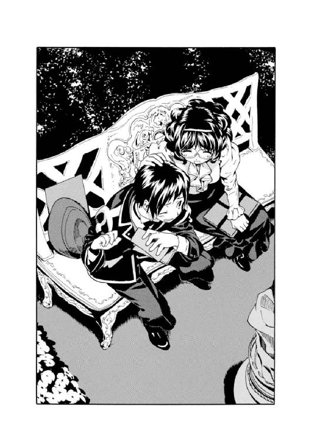

| GOSICK 03 青い薔薇の下で | |
| 桜庭一樹 | |
| KADOKAWA / 角川書店 (2012) | |
GOSICK Ⅲ
─ゴシック・青い薔の下で─
桜庭一樹

角川ビーンズ文庫
本作品の全部または一部を無断で複製、転載、配信、送信したり、ホームページ上に転載することを禁止します。また、本作品の内容を無断で改変、改ざん等を行うことも禁止します。
本作品購入時にご承諾いただいた規約により、有償・無償にかかわらず本作品を第三者に譲渡することはできません。
本作品を示すサムネイルなどのイメージ画像は、再ダウンロード時に予告なく変更される場合があります。
本作品は縦書きでレイアウトされています。
また、ご覧になるリーディングシステムにより、表示の差が認められることがあります。
目次
口絵・本文イラスト／武田日向
つぎの瞬間、アリスは鏡をくぐりぬけて、むこう側の部屋にかるがるととびおりていた。
──『鏡の国のアリス』ルイス・キャロル
矢川澄子訳 新潮文庫
プロローグ 鏡の国
夜──
書き割りのような星空が四角く浮かんでいた。
漆黒の鉄とガラスで造られたパレスや、巨大な駅舎や、黒ずんだ煉瓦造りのビルディングが、精巧なミニチュアの街のように並んで、月明かりに青白く瞬いていた。
その街の一角で──
少女が一人、佇んでいた。
砂色の長い髪を背中に垂らして、宝石のような濃い紫色に輝く瞳をひそませている。彼女が立ち尽くすその目前からは、夜を切り裂くような激しい光の洪水が溢れ出していた。
薄いガラスに仕切られた向こうから、眩しいライティングに照らされた細いマネキンが少女を見下ろしていた。
少女はすり切れた流行遅れのワンピースに、穴の開いた革靴を履いていた。どちらも元は素晴らしい細工のものだとわかる品だが、いまはもう、耐用年数をとうに超えていた。
マネキンはきらきらしいドレスを着て、帽子をかぶり、ビーズ刺繡のバッグを手にしていた。
少女は甘く吐息をついた。
（あぁ......素敵！）
するとマネキンが口を開いた。
〈素敵......？〉
少女は驚いてマネキンの口もとを見た。マネキンは笑っていた。
〈いらっしゃいよ。あなたにも着せてあげるわ〉
「でも......」
〈試着室で着てみるだけよ。ただ試着室に入るだけ。お金はいらないわ〉
「......そうなの？」
マネキンは笑った。
〈そうよ〉
少女はゆっくりとビルに入っていった。きらびやかな品物が並ぶ中、夢見心地でドレスを渡され、ふらふらと進んでいく。試着室のドアがゆっくりと開けられ、少女はドレスを握りしめたまま夢遊するように歩き続ける。
試着室に入る。
背後でゆっくりとドアが閉まる。
少女は歩き続ける。
砂色の髪が揺れる。
──試着室の奥には鏡があり、少女のみすぼらしいワンピース姿が映っている。少女は歩き続ける。鏡は水のようにうごめき、歩いてきた少女を包み込んでしまった......。
やがて、紫色の制服を着た店員が試着室のドアを開ける。
中はからっぽで、ドレスだけが残されている。
店員はゆっくりドレスを拾い上げると、薄く笑う。
夜──
ビルの外では、書き割りのような星空が四角く浮かぶばかりだ。
第一章 魔法の指輪
１
夏が近づいていた。
午後もだいぶ遅い時間だというのに、日射しはいつになくきつく、村道には蹄を響かせて通り過ぎる荷馬車が立てる乾いた土埃がひっきりなしに舞い上がっていた。
荷馬車の残り香は、夏の到来を予感させる甘酸っぱい藁の匂いだった。聖マルグリット学園に戻る村道を一目散に歩いていた久城一弥は、その匂いに気づくとふと足を止めて、眩しそうに目を細めて振り返った。
大きな古びた荷馬車は左右に激しく揺れながら、でこぼこ道をどんどん遠ざかっていく。揺れるたびに藁の束が少しずつ道に落ちていく。村道の左右にはなだらかな葡萄畑が広がり、鮮やかな緑の蔦が風が吹くたびに一斉に揺らめいていた。
久城一弥はのんびりした足取りになって、また村道を歩き始めた。そんなに一心不乱に歩かなくても、学園の正門が閉ざされてしまう門限の時間まではまだまだ余裕があることを思い出したのだ。
──小柄で、どちらかというと線の細い少年である。短めだった黒髪は少し伸びて、漆黒の瞳に半ばかかっている。山脈の麓に広々と広がる敷地を持つ名門、聖マルグリット学園の制服に身を包んで、律儀にも制帽をきっちりかぶった彼は、片手に茶色い郵便物を抱えていた。
歩きながら封を切ったらしく、もう片方の手には便せんが開かれて握られていた。
一弥は楽しそうに便せんに目を走らせながら、ゆっくり歩いていたが......。
やがて、少しずつ、情けない顔に変わっていった。
『一弥さまへ
お元気ですか？ おねえちゃんだよーん。あのね、聞いて。おとうさまがひどいの。それからお兄さまたちもひどいの。どうひどいかというとね......』
一弥は歩きながらどんどん便せんをめくっていった。
十枚目ぐらいまで、どうひどいかというとね......の説明が続いていた。読んでいるうちに、村道のずいぶん先まで辿り着いて、学園の正門が遠く見えてきた。
──ガラガラガラガラッ！
大きな音を立てて荷馬車が通り過ぎていき、手紙に気を取られていた一弥は、真横を通り過ぎた荷馬車の立てた風に頰を切られそうになり、びくんとした。
──手紙は、二歳年上の姉からのものだった。十七歳になる姉は、一見、風に揺れる野の花のような儚げな女性だったが、じつは芯の強い面もあった。おとなしいが、言いたいことははっきり言える性格で、そのせいか頑固な父や兄たちと喧嘩になることもあった。一弥は密かに、自分よりも姉のほうがずっと、父たちに似た強い性分に生まれたのではないかと思っていた。
その姉は、今年で女学校を卒業するので、お父さまが勧めるように〝四角い顔をした十も年上の帝国軍人〟なんかのところにお嫁には行かずに、いま通っている女学校の教師になることに決めたのだという。そのことで連日連夜、父や兄たちと丁々発止、言い合いを続けていたらしい。
『一弥さんは、わたくしの味方をしてくれなければ、いやよ』
十一枚目の便せんにそう書かれているのを読んで、一弥は心の底から、いまソヴュールにいてよかった......と思った。姉を庇って父や兄たちと言い合うには、末っ子の一弥は性格が穏やかすぎたし、母はというと、昔から、笑顔のままですばやく有利なほうにつくという人だったのだ。優しくてたおやかな女性なのだが、意外と、ぜんぜん、頼りにならない。
一弥は手紙を読みながら、聖マルグリット学園の正門に近づいていった。見上げるとクラリとするほど高い鉄柵は、唐草模様に似た複雑な形に絡みあい、ところどころに金色の飾りが輝いている。一弥は手紙を読みながら、正門をくぐって聖マルグリット学園の敷地内に戻っていった。
手紙には唐突に、一弥には見慣れない単語が羅列されていた。
『白木綿のブラウスが三着ほしいなぁ。かわいい襟がついてるのがね。それから、タータンチェックのカラー。革靴は焦茶色で靴先に飾りがついてるやつ。刺繡つきの靴下と、ガラスのペン。もちろんインクもね。ええと、それと......』
どうやら姉は、女学校の教師になるに当たって必要なものを、一弥に、ソヴュールで買って送ってほしいと頼んでいるようだった。お買い物リストはまだまだ続いていた。
一弥は頭を抱えて立ち止まった。姉がリストに書き連ねているものが、どこでどう買うものなのか、それ以前にどういうものなのか、さっぱりわからなかったのだ。
大きくため息をついて空を見上げた、そのとき......。
「あっ！ あの子よ。あの子が犯人。ほら、例の......！」
犯人という言葉に、一弥はハッとして振り返った。
もはや無意識にだが、少しでも変わった出来事や謎めいた犯罪をみつけたら、素早く拾ってわかりやすくまとめて、迷路階段を駆け上がって、
──退屈だー。謎をご所望だー！
と駄々をこね続ける、あの美しくて奇妙な友達のところに持っていってあげるつもりなのである。
ところが......。
あの子が犯人よ、と叫んでいるのは、見慣れた女性──担任のセシル先生だった。大きな丸眼鏡をかけた、ぷくぷくした小犬を思わせる女性で、肩までのブルネットが風をはらんでふっくらふくらんでいた。
セシル先生はなぜか、まっすぐにこちらを指差していた。
「......犯人、ですか？」
一弥は後ろを振り返った。
すうっ......と風が通り過ぎた。
誰もいない。
もう一度、セシル先生のほうを見る。やっぱり彼女はこちらを指差している。
一弥は不思議そうに、セシル先生と、こちらを指差すその指先をみつめた。
と......。
先生の足元に広がる生け垣が、ごそごそと枝を揺らした。まるで大きな獣が潜んでいるような揺れ方に、一弥は思わず一歩後ずさった。
──にょきっ！
生け垣から顔を出したのは、みっしりと髭を生やした筋骨隆々とした老人だった。片手に大きな園芸鋏を握っている。
セシル先生が一弥を指差して、
「庭師さん！ この子が犯人よ。菫を踏んで、生け垣に穴を開けて......」
一弥は「あっ......」と叫んだ。つい数週間前、一弥は門限をとうに過ぎた時間に学園から外に出る必要に迫られて、生け垣に開けた穴から出たのだった。そのことがセシル先生にばれて、一弥はみっちり叱られた。
生け垣の穴を直すために呼ばれたにちがいないその庭師は、日に焼けてなめし革のように皮膚の分厚くなった顔をしかめると、一弥を睨んだ。
「なんだ。おめぇか！ こんなところに穴を開けおって！ どんだけ苦労してここまで木を育てたか、わかっとるのか！ ちょっとこい。こんなことする生意気な腕は、こいつでちょんぎってやる！」
庭師は巨大な園芸鋏を振り回してうそぶいた。一弥が逃げ出すものと見越して脅しているようだったのだが、脅された一弥は顔を青くして、
「すみません......！」
思わず頭を下げて、あやまった。庭師は毒気を抜かれたのか、きょとんとした顔で一弥の後頭部をみつめていたが、やがてちょっと笑い、
「......いいよ。どうせセシルにさんざん怒られた後だろう。もう、しなきゃいい」
そう言うと、また生け垣の奥にがさごそと戻っていった。
セシル先生はくすくす笑っている。
一弥は歩き去ろうとして、ふと気づいて、戻ってきた。セシル先生に、
「あの、先生。ちょっと質問があるんですけど......」
「あら、なぁに？」
「その......」
一弥は片手に握っていた便せんを指差すと、セシル先生に聞いた。
「〈青い薔薇〉って、いったい、なんですか......？」
時は一九二四年──。
ヨーロッパの小国、ソヴュール王国。
貴族の避暑地として知られる地中海沿いのリヨン湾を豪奢な玄関のように構えるその国は、海から始まって、ヨーロッパ大陸の内陸、アルプス山脈の高台に向かって秘密めいた回廊のように細長く延びる形状をした、小さな国だった。山脈の奥にはスイスとの国境が、海に近い華やかな地方にはイタリアとの国境が、そして王宮を構える内陸の都市にはフランスとの国境があった。列強に囲まれながらも、遥か昔から続く荘厳な歴史を持ち、世界大戦の戦火をも生き抜いたソヴュールは、西ヨーロッパにおいては〝小さな巨人〟と呼ばれていた。
秘密めいた回廊の先にあるアルプス山脈。その麓に、王国そのものほどではないが、やはり長く荘厳な歴史を持つ聖マルグリット学園がそびえていた。貴族の子弟のための教育機関として王国に名を轟かすこの学園は、静かな環境の中に整然と建っていた。空中から見るとコの字形に見える荘厳な校舎は、広い庭園に彩られ、周囲は高い生け垣で囲まれていた。生徒と職員のみが出入りできる秘密主義の学園──。
だが、初の世界大戦となった先の戦争が終結した後、聖マルグリット学園は、一部同盟国の優秀な学生を留学生として受け入れることを始めた。
十五歳の久城一弥は、成績優秀にして品行方正。帝国軍人の父と、やはり優秀な兄二人の存在もあって、推薦されて聖マルグリット学園にやってきた。しかし、新しい生活に期待に胸を躍らせてやってきた一弥を待っていたのは、貴族の子弟たちの偏見と、言葉や文化の壁、そして学園になぜか蔓延る怪談ブームと......。
美しいが奇妙でどこか冷酷な少女、ヴィクトリカ・ド・ブロワとの出会い......。
留学して数か月、一弥はおかしな苦労を続けながらもようやく、ソヴュールでの生活に慣れてきたところなのだった。
「......〈青い薔薇〉？」
セシル先生が小首をかしげて聞き返してきた。一弥はうなずいて、先生とともに、敷地内の庭園にある木のベンチに座った。
学園の敷地には、コの字形をした巨大な校舎や、生徒のための豪奢な寮、大図書館、礼拝堂......などが鎮座しているのだが、それぞれの施設を結ぶ道の周囲には、ほれぼれするような手の込んだ庭園が続いていた。刈り込まれた花壇に噴水。気持ちのいい芝生。
二人は芝生の一角に用意されたベンチに座ると、話し始めた。一弥は姉から届いた手紙を見せて、
「姉が、ソヴュールでいろいろ買って送ってほしいって言うんですけど......洋服とか、靴とか、文房具とか。その中に一つ......」
手紙の最後には『あと〈青い薔薇〉も一つね。じゃ、頼んだわよぅ』と書かれていた。一弥にはなんのことだかさっぱりわからず、これはもしかすると......。
「女の人に聞かないとわからないかなぁと思って......」
「久城くん、知らないの？」
気づくと、セシル先生があきれたようにこちらをみつめていた。一弥はあわてて、
「し、知らないですよ。あれっ......そんなに有名なものだったんですか？」
「男の子って、こういうものにうといのねぇ」
「すみません......？」
一弥はヴィクトリカやアブリルと話すときのくせで、また、うっかりあやまってしまった。しかしどうにも、自分が悪いとは思えない。
「〈青い薔薇〉っていうのはね、世界でも有数の大きさのブルーダイヤモンドよ」
「ダイヤモンド......？」
「そ。こーんなに大きいのよ。薔薇の花を思わせる形をしているから、ソヴュール王家の紋章である青ざめた大輪の薔薇にちなんで〈青い薔薇〉と呼ばれているの。ソヴュール王家の宝よ。ほら、教科書に写真が載っていたでしょう？」
一弥は美術の教科書に載っていたブルーダイヤモンドの写真を思いだして、うなずいた。しかししばらくすると怪訝な顔になり、
「そんなもの、姉に送ったら、国際問題になりますよ」
「......あはは、久城くんたら。そうじゃなくて、おねえさんが言うのはね、〈青い薔薇〉にそっくりなガラス製の模造品のことよ。ペーパーウェイトなの。いま、女の人にとっても人気でね。ええと確か......〈ジャンタン〉でしか売ってないはずよ」
「〈ジャンタン〉？」
「ソヴレムにある大きなデパート」
一弥はむずかしい顔になった。
ソヴレムとは、ソヴュール王国の首都の名前である。この聖マルグリット学園のある村からは遠く離れた、フランスとの国境に近い平地にある街だ。ソヴュールに留学してきたとき、一度だけ通り過ぎたことがあるが、それ以降は用もなく、また遠いので、足を向けたことはなかった。
「......そうか。じゃ、ソヴレムまで買いに行かないといけないのか」
セシル先生は不思議そうに、
「遠いから行けないって返事をすればいいんじゃないかしら？」
「うーん。でも、多分すごく楽しみにしてると思うし......」
一弥が思案顔で言うと、セシル先生はしばらくその顔をみつめていたが、やがて手を伸ばして、一弥の頭をなで始めた。
「な、なんですか!?」
「いい弟ねー」

「やめて！」
一弥は逃げながら、
「それにしても......一瞬、すごくびっくりしました。だって〈青い薔薇〉って言われたら、本物のブルーダイヤモンドのほうかと思っちゃうし......」
「ああ......。でもね、本物のブルーダイヤモンドはもうないの」
「ない......？」
「大戦のどさくさで王宮の宝物庫から消えてしまったの。ほかにもたくさん、あの戦争のときに消えてしまった美術品があるわ。この国の大切な財産だけれど、きっと、もう国から持ち出されて、新大陸辺りの好事家の屋敷に飾られていると思うわ......」
セシル先生はそうつぶやくと、少し寂しそうな顔をした。
「ソヴュール王家の紋章とそっくりなブルーダイヤモンド〈青い薔薇〉は、この国を象徴するものとしてとても大切にされてきたの。代々、ソヴュール国王の玉座にはめるものだから、あれがなくなったことによって王室は多大な損害を被ったと言われているのよ。それにあのダイヤモンドには、その昔の美しい王妃にまつわるお話も伝わっていてね。そのせいもあって、この国の女の子にとっては憧れの宝石なのよ。色もきれいだし、形も花みたいでかわいくて......。だから、とっても残念。いま、いったいどこにあるのかしら......」
先生は立ち上がって、歩きだそうとして振り向いた。
「あ、久城くん！」
「はい！」
「〈ジャンタン〉まで〈青い薔薇〉を買いに行くんだったら......」
「はい、わかってます。週末用の外出許可の申請をして、ちゃんと昼間のうちに正門をくぐって......」
「わたしの分も買ってきて」
「......えっ？」
セシル先生は上機嫌で、
「ずっとほしかったの。でも、ソヴレムまで行くの、面倒だし......」
「あの、先生......ぼくは使いっ走りでは......」
「お願いね。あと、勉強もサボっちゃだめなのよ」
セシル先生は一弥の訴えは聞こえなかったふりをして、笑顔で歩き去っていった。一弥がどこか呆然と、
「なんかぼく、ソヴュールにきてから、こう、女の人に......なんだろう、これ？ なめられてるのかな？ 一度ガツンと、そう、ガツンと、男子の本懐っていうか......」
「......久城くん、わたしにも買ってきて！」
「ぎゃあああああ！」
一弥は叫んで、ベンチから飛び上がった。
震えながら振り向くと、いつのまにかベンチの後ろに、見慣れた女の子の顔があった。
日の光を浴びて眩しい、金髪のショートヘア。いつも楽しそうにきらきらしている、ぱっちりした青い瞳。手足はスラリと伸びて、健康そのものの元気な少女だ。
アブリル・ブラッドリー──英国からの留学生である。三か月ほど前に一弥と同じクラスにやってきて、〈紫の本〉を巡るとある事件をきっかけにして仲良くなった少女だ。
彼女はなぜか、芝生の上に匍匐前進のポーズで寝ころんでいた。スカートが少しめくれて、細いけれどはじけんばかりに健康的な長い足が芝生に無造作に投げ出されていた。
一弥はちょっと赤くなって、
「な、なにしてるの？」
「わたしにも買ってきて、久城くん」
「えっと......？」
「〈青い薔薇〉のペーパーウェイト」
「............」
一弥はため息をついて、ベンチに座り直した。
そのベンチの後ろからアブリルがにょきっと顔を出した。満面の笑みだ。
「アブリル、君、いつからそこにいたの？」
「向こうの芝生でごろごろしてたの。夏が近いし、天気も良くて気持ちいいから」
「......ふぅん？」
「そしたら、久城くんとセシル先生がきたから。いい雰囲気だから、邪魔しようと思って」
「どこがいい雰囲気だよ！ 庭師さんに園芸鋏で脅された後、セシル先生には買い物を頼まれてたじゃないか」
「あはは！ 久城くんたら、気が弱いから」
アブリルの何気ない一言に、一弥は深く傷ついた。
意地を張って平気なふりをして、そっぽを向いていると、トントンと肩を叩かれた。
ふくれ面のまま振り向くと、そこに用意されていたアブリルの人差し指が、頰にぐっさり突き刺さった。アブリルは実にうれしそうに、
「あはははは！ ひっかかった。ひっかかった」
「......君、芝生でいったいなにしてたの？」
「あ、そうだ」
アブリルは一弥の頰から指を離して、立ち上がった。制服のスカートをひるがえして、芝生の奥のほうに走っていったかと思うと、なにかを胸の前に大事そうに抱きしめて戻ってきた。相変わらず足が早い。
「これ、これ！」
一弥のとなりに腰掛けて、「じゃーん！」と見せる。
それは本だった。挿絵がたくさんついていて、字も大きく、読みやすい。......どうも子供向けの本のようだが、アブリルは得意そうにそれを見せて、
「村の本屋さんに注文してたの。ようやく届いたから、昨晩からずっと読んでてね。それで寝不足。ほら、目、赤いでしょ？」
指の腹で、下瞼を引っ張ってみせる。赤い、と本人は言うのだが、健康そのもののアブリルには、どこにも寝不足らしい弱った様子はなかった。
一弥は本を受け取った。タイトルはずばり『怪談』だった。一弥はアブリルに本を返そうとした。
アブリルは両手を背中の後ろに回して、受け取らない。
「おもしろいんだってば！ 久城くんも読もうよ！」
「ぼく、こういうのあまり好きじゃないんだってば。それにこれ、子供用の本じゃないか」
「えー。けっこうむずかしいよー」
アブリルは一弥から本を受け取ると、ページを開いては説明し始めた。
「デパートの試着室に入った貴婦人。しかし店員がドアを開けたら、血まみれの生首だけが残されていた......！ きゃああああ！」
「......もうその手には乗らないってば」
「あとね、きれいに着飾った幼女が泣いているので、迷子だと思って声をかけた人が、そのまま消えてしまうの。角を曲がったら消えていて、衣服だけが残されていた......。幼女の姿をした幽霊に、黄泉の国に連れ去られたのよ......！」
一弥はしゃべっているアブリルにはかまわず、姉からの郵便物に目を向けた。
（あれ......？）
さっきから、やけにずっしり重いなと思っていたのだが、郵便物には手紙のほかになにかが入っていた。水色の布のようなものが見えた。
「浮浪者そのものの服装をした殺人鬼がいてね。着込んだ古着の中に、子供の死体をたくさんつり下げているの。浮浪者はじつは、植民地であるとある国から伝わった、邪悪なる悪魔崇拝者なのよ。歩くたびに服の中で揺れるのは、子供たちの乾いた死体......！ あれ、なあにそれ？ 久城くん」
「あ、いや......荷物の中に......」
一弥は、郵便物の中から出てきた水色の布を、両手で広げてみた。
思わず驚嘆のため息が出た。隣でアブリルもあっと息を呑んでいる。
──それは絹の織物だった。一弥にはどこか見覚えのあるものだ。しっとりした水色の小さな着物で、白い細い線で水に浮かぶ睡蓮の清々しい花が描かれていた。
姉が子供の頃にとても大事にしていた、よそ行きの着物だった。
ハラリ、と短い手紙が一弥の膝に落ちてきた。拾う。
『お買い物のお駄賃だよぅ。一弥さん、小さな女の子の友達ができたって、手紙に書いていたでしょう？ その子にあげてくだちゃいね。おねえちゃんより』
小さな女の子の友達......？
一弥は目を細めた。
確かに以前、家族に当てた手紙に、友達ができたと書いたことがあった。小さな女の子の友達が......。
姉はそれを、本当に小さな......子供のことだと勘違いしたらしい。着物は確かにため息が出るほどに素晴らしく、となりでアブリルも息を呑んでいたが、しかし子供用のサイズだ。
（ヴィクトリカは同い年なんだけどなぁ......）
一弥はしかし、着物のサイズがヴィクトリカの小さすぎる体にはぴったりなのではないかと思い当たった。なにしろヴィクトリカは、頭脳こそ大人が束になっても敵わない奇怪な巨大さを持つものだが、姿はまるで子供のように小さい。レースとフリルでふくらんでいる分を差し引けば、ほんとにちょっとしかないのだ......。
一弥はとたんに笑顔になり、さっそくヴィクトリカに見せてやろうといそいそと立ち上がった。
「......あれ、久城くん？」
とつぜん急ぎ足になった一弥に、アブリルが不思議そうに声をかける。追いかけようと立ち上がりかけたが、やっぱり眠いらしく、ベンチにころりと寝転がって、遠ざかっていく一弥の背中を見送った。
小声でつぶやく。
「どうせまた、あの場所に行くんだろうなぁ......アブリルちゃんには、わかってるんですからね？」
眠そうに目をこすって、青い瞳をゆっくりと閉じながら、
「だって久城くん、結局いつも、あの場所に行くんだもん......」
アブリルが抱えた子供用の絵本『怪談』が、初夏の風に吹かれて、ぱたぱたページがめくれていった......。
２
──聖マルグリット大図書館。
広々とした学園の敷地の奥。なだらかな勾配に身をゆだねたような敷地の高台にのっそりとそびえるその建物は、三百年以上の時を刻んだ、欧州でも指折りの知識の殿堂である。角筒形をした石造りの塔は風雨に晒され色を変え、まるで静かな巨人のように高台から広い学園全体を見下ろしていた。
いったいどこから入ればいいのか、と不安になるようなシンプルな造りの塔だが、そばに近づくと、真鍮の乳鋲を打った革張りのドアがあるのに気づく。そっとドアノブを引いて入ると、そこには......。
目眩がするほど天井までが遠い、吹き抜けのホールがある。すべての壁は書棚となっており、いったい何万冊があるのか......革張りの分厚い書物がみっしりと並んでいる。
見上げると、荘厳な宗教画が描かれた天井らしきものが見えることは見えるが、それよりも先に目に飛び込んでくるのは、異様な形状をした細い木製の階段である。
迷路階段──。
一説によるとそれは、十七世紀初頭にこの塔が当時のソヴュール国王の手によって建設された折、綿密に計算されて造られた、天に向かって続く迷路なのだという。国王は大変な恐妻家で、若く美しい愛人との秘密の逢瀬をみつからぬよう、塔のいちばん上に小さな部屋を造った。そして自分たちのほかは誰も上がってこられないよう、階段を迷路状に造ったのだと──。
もちろんいまでは、一部修復工事の際に取りつけられた油圧式エレベーターがホールの奥に鎮座している。だがこのエレベーターは教職員と、ただ一人の〝特別な生徒〟にのみ使用を許可されていた。
その特別な生徒──
ヴィクトリカ・ド・ブロワは、今日もまた図書館のいちばん上から、ラプンツェルのように長い金髪を垂らして読書に耽っていた。
いちばん上の部屋──かつて国王と愛人が情事に耽ったベッドルームであったかもしれないそこは、いまではすっかり改造され、小さくて快適な植物園になっていた。南国の木々や毒々しい大きな花が、天窓から射し込む光をどぎつく照り返している。
植物園と、迷路階段の踊り場のあいだに半身を投げ出すように、豪奢な少女の陶人形が置かれていた。
等身大に近い百四十センチぐらいの背丈を、サテンでできたアクアブルーのドレスで包んでいる。青いサテンの上から繊細な黒レースを何枚もかさねた、シックな花束のような姿。薔薇の模様を型押ししたブーツを履いた小さな足に、長い見事な金髪が、まるでほどけたターバンのように流れ落ちていた。
うつむき加減の横顔は、取り澄ました無表情。鮮やかなエメラルドグリーンの瞳は遠くをみつめるように儚げに見開かれている。見たこともないほど美しい顔立ちだが、同時に、見たこともないほど冷酷めいた表情とも言えた。
その陶人形──いや、陶人形そのものに見える小さくて豪奢な少女は、片手に持った陶製のパイプを口もとに近づけ、ぷかり、ぷかり、と吸っていた。
白い細い煙が、たゆたいながら天窓に向かって上がっていく。時折吹く風が、煙のラインを心許なげに揺らしていく。
少女──ヴィクトリカ・ド・ブロワ。
聖マルグリット学園の〝囚われの姫〟。
わけあって学園からは一歩も出られず、それに対する抗議なのかなんなのか、授業には一切出ることなく、いつもこの植物園で読書に耽っている、きわめて美しく、きわめて不思議な生き物である。
今日もヴィクトリカの目前には、分厚い書物が何冊も、開かれたまま放射線状に置かれていた。ヴィクトリカはパイプをぷかぷか吸いながら、すごい勢いで書物を読み続けている。
それはさながら一枚の清々しい絵画のような光景だった。ヴィクトリカが書物のページをめくろうと空いているほうの手を伸ばすたび、しゃらり......とかすかに衣擦れの音がする。目のさめるようなサテンのドレスが立てるその音のほかは、一切の声も、音も、ない。静寂にのみ支配されたその光景は、まるで百年も前から彼女がそこに居続け、書物を読み続けているかのような、驚くべき現実感の薄さである。
だが、
しかし──。
やがて、そんな彼女の静止画のごとき美を崩す、闖入者の気配がやってきた。
ヴィクトリカはなにかの気配に気づいたかのように、つっと顔を上げた。それは動物的な動きだった。地震の前触れを予知する魚。肉食獣の臭いに気づいた小動物。冬を予知した小さな渡り鳥......。
かすかに眉をひそめる。
同時に、バーンと大きな音がはるか下──図書館のホール辺りから聞こえてきた。誰かが図書館の扉を開けて入ってきたのだ。
下の方から、気配をうかがうような沈黙が漂ってきた。それから遠慮がちの小さな声が......。
「ヴィクトリカー？ いるかなー？」
少年の声だ。
ヴィクトリカはかすかに眉をひそめた。小声で、
「......いるに決まっているだろう」
その声は、まるで老女のようにしわがれた不思議な声だった。瞳の輝きも、数十年の時をすでに生きた老人のように深く、どこか現実から遠い。それは小さすぎる豪奢な人形のような容姿とは、驚くほどにアンバランスだった。
ホールに入ってきた少年──久城一弥が迷路階段を上がり始めたらしい、リズミカルな足音が響き始めた。カッ、カッ、カッ、カッ......！ いかにも生真面目な秀才少年らしく、その足音はよどみなく一定のスピードである。
ヴィクトリカは聞くともなくその足音を聞きながら、パイプを吹かしていた。
カッ、カッ、カッ、カッ......！
......と、
「んにゃっく！」
かすかに、悲鳴だろうかなんだろうか、短い妙な叫び声がした。続いて、ドカドカと激しい音を立ててなにかが階段を落下していった。ヴィクトリカが驚いて手すりから身を乗り出し、見下ろした。
一弥の姿は見えなかった。途中で足を滑らせ、どこかにひっかかっているらしい。
「ヴィクトリカー、助けて......。って言っても、ぜったい助けてくれないよね。わかってる......よくわかってる。自分でなんとかするから、待ってて......！」
ヴィクトリカは肩をすくめ、何ごともなかったかのようにまた書物を読み始めた。
数分後──。
久城一弥はハーハー言いながら、植物園の前に辿り着いていた。
額に浮かんだ汗を拭き、うれしそうに、だが疲れたように、小さな友達ヴィクトリカが書物を読んでいる目前まで歩いてくると、
「途中で転んじゃったよ」
と言いながら、慣れた調子で彼女のとなりにちょこんと座った。
「いつも上がってる階段だから、ついよそ見しちゃって。いやぁ、油断って禁物だね。この階段、途中で落ちたらきっと死ぬもんなぁ」
しゃべり続けている一弥に、ヴィクトリカはあきれたようにフンと鼻を鳴らした。
一弥はしばらくにこにこして、自分を無視して書物に読み耽る友達の冷たい横顔をみつめていたが、しばらくすると我に返り、
「そうだ、そうだ......」
立ち上がって、ヴィクトリカが散らかしたお菓子の包み紙やなにやらを甲斐甲斐しく拾い始めた。ヴィクトリカはちょっとだけ顔を上げて、わずらわしそうに一弥の様子を見ると、また書物に視線を戻した。
それからもそっとつぶやいた。
「──ねえさんから手紙がきたのかね？」
一弥は包み紙をまとめて自分の制服のポケットにつっこみながら、
「そう。郵便局に行ったら手紙がきててね。だけど、ずいぶん長い手紙でさぁ......ん？ ちょっと待ってよ。どうして知ってるの？」
「〝知恵の泉〟だよ。例によって例のごとくね」
ヴィクトリカはつまらなそうに言った。
書物をめくろうと手を伸ばしかけて......なぜかその手を引っ込めた。両手をぎゅっと握って拳をつくったままで、
「わたしの湧き出る〝知恵の泉〟には不可能なことはないのだ。たとえここに座ったままでなにも見ていなかったとしても、なんでもわかる。君、わたしは五感を研ぎ澄まし、この世の混沌から受け取った欠片たちを使って、遊ぶのだ。そう、玩ぶのだよ。欠片は〝知恵の泉〟によって再構成される。そこには厳然とした事実だけが残る。わたしはそれによって日々一人で楽しんでいるのだが、まぁ気が向けば、君のようなつまらない凡人にもわかるよう、さらに言語化という作業を行うこともある。たいがいは面倒なので黙っているがね......」
「......ちぇっ」
「簡単なことだよ、君。つまり郵便局に行ったのは、君が抱えている荷物を見ればわかる。父や兄からの手紙であれば情けない顔をして沈んでいるのに、今日の君はうれしそうだ。ゆえに手紙は彼らからではない、とわかる」
「ま、そう聞くと、確かに簡単なことだけどね」
一弥はため息をついて膝を抱えた。
床に転がっているキャンディを一つ拾い、水玉模様の包み紙をはがして口に放り込む。予想外に大きかったキャンディを口の中でもごもごさせながら、この不思議すぎる小さな友達の横顔をちらちらみつめた。
ヴィクトリカ・ド・ブロワ──。
学園関係者なら誰もが秀才と認める極東の島国からの留学生、久城一弥に対して、君のような凡人などという暴言を吐く、謎めいた少女──。
もちろん一弥は、ほかの生徒にこのようなことを言われたらけして許さないはずだった。一弥は一国を代表する学生としてソヴュールにやってきたのだし、その成績にも品行にも文句のつけようはなかった。
だが、それなのになぜか一弥は......この、一度も授業に出たことのない、しかし難解な書物をつぎつぎ読み飛ばしていく、小さなヴィクトリカ・ド・ブロワに吐かれた暴言には、何一つ反論できないでいた。
ヴィクトリカと出会ったとき、自分が巻き込まれた事件についての真相を彼女に言い当てられたせいもある。その後も二人はさまざまな事件を経験したが、そのどんなときにも、彼女は論理的で明解で、彼女の〝知恵の泉〟は、たちどころに混沌を再構成して言語化してみせた。
そのくせ、小さな椅子一つ持ち上げるのにも歯を食いしばらなければならないほど、ヴィクトリカには驚くほど無力な面もあった。
一弥はヴィクトリカの奇怪な頭脳に心から驚き、彼女の暴言に深く傷つき、しかし彼女のあまりの無力さにあわてて助けの手を差しのべ......。
一弥のプライドも、常識も、隠しもつ優しい気持ちも......さまざまなものが、彼女と出会ってからの数か月間、焼き切れんばかりにフル回転し続けていた。いまもまた一弥は、ヴィクトリカの木で鼻をくくるような態度に、怒って帰ろうか、このままそばにいようか決めかねて、大きなキャンディを口の中でもごもごさせながら、小さな冷たい横顔をただみつめているのだった......。
「怪談というのは巨大な共同幻想だと思うのだがね」
ヴィクトリカがとつぜん言った。
だいぶ小さくなってきたキャンディを嚙もうか、もう少しなめていようか迷っていた一弥は、驚いて顔を上げた。
「な、なに？」
「この学園に浸透する、怪談という名のファクターについて考えていたのだよ、君」
「どうしてまた？」
「......退屈だったのだ」
一弥は顔をしかめた。
ヴィクトリカはつっとパイプから口を離して、恨みがましい妙な目つきで一弥を睨んだ。エメラルドグリーンの瞳が怪しく光る。
「君がちっとも下界の謎を拾ってこないので、すっかり、きっぱり、退屈してな。わたしが死ぬほど退屈だと死ぬほど訴え続けているというのに、久城、君は不思議な事件をちっとも拾ってこないし、かといって自ら起こす思いやりもない......」
「自ら起こしたら、ぼくが犯人じゃないか。あっという間に船に乗せられて強制送還だよ。まったく、君って人は......」
「久城、姫からの命令だ」
ヴィクトリカは、怒りだした一弥にはまったくかまわず、顔を上げると言い放った。
「君、明日までに、おかしな事件に巻き込まれて死ぬほど困りたまえ」
「......なんでだよ。やだよ」
「大丈夫だ。わたしの気さえ向けばすぐに解決してやる」
「君の気が向かなかったら、どうなっちゃうんだよ！」
一弥はヴィクトリカに背を向けた。
ヴィクトリカはつまらなそうに鼻を鳴らすと、書物をめくろうと手を伸ばした。それからまた、アッと短く叫んであわてて手を引っ込めた。また両手をグーにして握りしめ、いまのを見ていなかっただろうな、と心配そうに一弥のほうを見る。
一弥がよそを向いていたので、安心する。
それから退屈そうに伸びをした。猫がくぅっと伸びをするときのようだった。小さな体が意外なほどよく伸びた。青いサテンのドレスと、幾重にもなった黒レースが、しゃらり......と衣擦れの音を立てた。
「で......？」
「む？」
「怪談がなんだって？」
「ああ、その話か」
ヴィクトリカは伸びを終えると、また口もとにパイプを近づけた。ぷかり、ぷかりと吹かしながら、
「君、いまが空前の怪談ブームの時代だということを知っているかね？ 怪談をまとめた本が飛ぶように売れ、幽霊が出ると評判の屋敷には観光客が押しかけているという現状を」
「さぁ......。でも、怪談好きな子ならクラスに一人いるよ。ぼくは興味ないけど」
「この流れが都市部を中心にしているということには、気づいていたかね？」
一弥は首を振った。
「ぜんぜん」
しかし、ついさっきアブリルから聞かされた怪談も、すべてが都会のデパートや路上を舞台にしたお話だったことを思い出した。一弥がなんとなく納得していると、
「これはだね、君。前世紀末からの流れだ。人々は急速な近代化によって闇を失いつつある。理屈では説明できない現象や、不思議の数々。それらはすべて科学によって証明されるようになり、謎は謎でなくなってきた。だがしかし──人は見えるもの、わかるもののみによって生きていくわけではない。そこで、怪談ブームだ。そこにあるのはただただ欲望なのだよ、君」
「欲望......？」
「そうだよ、君。人々の欲望──見えないもの、わからないものにあってほしいと思う欲望だ。ある者はそれを宗教に求める。まだ神を見たものはないのだから。ある者は恋愛に求める。愛を見たものもないのだから。そしてある者は、それを怪談に求め始めたのだ」
「宗教と恋愛はともかく、怪談だけへんだよ」
「へんなのは、君がときどき持ってくるおみやげだ」
「......そ、そうだよね。ごめんよ......」
一弥はしょんぼりした。
座りこむヴィクトリカのかたわらに置かれたキャンディ入れをちらりと見る。もとは珍妙な帽子だった一弥からのおみやげは、いまでは逆さにされてお菓子をこんもりと入れられて、キャンディ入れとして再出発していた。キャンディ入れの中にころんと入っている拳大の金色の髑髏にいたっては、なんに使われるものなのか、持ってきた一弥自身にも、いまもってまったくわからない。
一弥は二つめのキャンディを口に入れながら、もごもごと、
「だけど、怪談なんてぼくは信じないなぁ。だって全部作り話じゃないか。この世に、理屈で説明できないことなんてないはずだろう？ 神さまのことだって、愛のことだって、いっぱい、いっぱい、理屈はあるしね。とにかく、ぼくはなにがあっても怪奇現象なんてものはぜったいに信じないよ」
「......そう言う者に限って、理屈で説明できないことが起こったときにはもろいものだよ」
ヴィクトリカがフンと鼻を鳴らしながらうそぶいたので、一弥はムッとした。
「そ、そんなことないよ......」
なぜか一弥が怒ったように黙り込んだので、ヴィクトリカは顔を上げて、不思議そうに一弥の横顔をみつめた。
「君、どうしてそんなくだらない顔をして黙り込んでいるのだ」
「......くっ、くだらなくて悪かったね。こういう顔なんだよ」
「さては君、自分はぜったいに引っかからないと自信があるのだな。よし、では証明してやろう。君が愚か者でならず者でけだものだということをね」
ヴィクトリカはなぜかいそいそとした調子で言った。彼女にしてはとてもめずらしいことだが、自分から一弥のほうに向き直って、正面からじっと一弥を見た。一弥はそんなヴィクトリカを、気持ち悪そうに横目でうかがった。
床に座りこんだヴィクトリカを改めて正面から見ると、その姿はやはり驚くほど小さかった。精巧な人形をちょこんと置いたようにしか見えない。ときどきパイプを持つ手が動くのも、からくり人形のようなゆっくりした動きで......ただその深い緑色をした瞳の、なんとも言えない捉えがたい輝きだけが、これは意志のある存在なのだと証明しているようだった。
「......なんだよ？」
「これを見たまえ、久城」
「んん？」
一弥は身を乗り出した。
ヴィクトリカがずいっと差しだしたのは、さきほどからずっと握りしめていた彼女の拳だった。ちょっとびっくりするぐらい小さい。右手の拳にキラッと輝くものがあった。指輪だ。金色の細い蛇を象った台座に、鈍いオリーブ色をした石がはめられていた。
「これは魔法の指輪だ」
一弥はきょとんとしてヴィクトリカをみつめた。
ヴィクトリカは大真面目な顔をしていた。冗談を言っているのではなさそうだが、なにか悪巧みをしているのは確かだ。瞳が笑っていた。そして子供がなにか言い張るときのような調子で、
「魔法の指輪なのだ」
もう一度繰り返した。
一弥は困ったように頭を搔いた。
「君、ときどき、どうにも子供っぽいんだよなぁ！」
「黙れ。で、どう魔法の指輪かというとだね。久城、君の噓を見破る力を持っているからだよ」
「......ヴィクトリカ、いい加減にしてよ。そんなわけないじゃないか」
「君の噓を見破るのだ。こわいかね？」
「こ、こわくないよ！」
「では、そのくだらない耳をかっぽじってよーく聞きたまえ。この指輪は、君が真実を語るときには赤く光る。だが、君が噓をつけば緑色に光る。なぜなら魔法の指輪だからだ。わかったかね？ わからなくてもうなずきたまえ」
「......うん」
「では、これから質問を始めるとしよう」
ヴィクトリカは大仰にうなずいた。
そうするとヴィクトリカは、いつもの才気あふれる様子とはちがって、妙に子供っぽく見えた。一弥は戸惑いながらも、この場からうまく逃げる方法をまったく思いつけなかったので、仕方ない、つきあうか......とヴィクトリカに向き直った。
（ようやくアブリルの『怪談』から逃げ出してきたところなのになぁ......）
知らずにため息が出た。と......。
「いいかね？」
「......いいけど」
「久城一弥はアホである」
「......ちょっと、君！」
「返事だ、返事」
一弥は不機嫌になり、
「アホじゃないよ、普通だよ。いや、普通よりちょっと賢いぐらいだよ」
「噓だ」
「君ねぇ！」
ヴィクトリカがずいぶんと勝ち誇った顔をしているので、一弥は不思議になった。そしてヴィクトリカの手元に目を落とすと......。
なんと......。
指輪の色は暗い緑色に変わっていた。
一弥は怪訝な顔になった。
「君、いま......指輪をこっそり取り替えたんだろ？」
「そんなことはしていない。君、わたしを疑うならずっと指輪を見ていたまえ」
「う、うん......」
一弥は指輪に視線を落とした。
ヴィクトリカがつぎの質問をした。
「久城は女好きである」
「............」
「色魔である」
「......言い過ぎだよ」
「ところかまわず欲情する、血に飢えた、じつにくだらんけだものである」
「ひどいよ、君......。いつにも増して......」
「久城」
「いいえ！......君ねぇ！ って、あれっ......？」
一弥は首をかしげた。指輪はまた、すうっと暗い緑色に変化した。
固唾をのんで見守り始めた一弥に、ヴィクトリカは残酷に笑いながら、
「だから言っただろう？ 魔法の指輪だと」
「......わかったよ。ぼくは血に飢えたじつにくだらんけだものだよ。それでいいよ。ヴィクトリカのばか......」
「静かにしたまえ。最後の質問だ。久城、君はつまらない凡人である」
「......わかったよ。はい。つまらない凡人ですよ、どうせね」
ヴィクトリカは満面の笑みで、指輪をはめた手をこちらにかざした。
指輪は......悪夢のように色を変えた。
静脈血のような不吉な暗い赤に。
ぽかんと口を開けて、邪悪な赤色をした指輪をみつめている一弥の前髪を、天窓から流れ込んできた初夏の乾いた風が揺らしていった。
植物園に咲き誇る南国の木々や、どぎつい色をした大きな花も、さわさわと音を立てて揺れた。
ヴィクトリカはいつのまにか一弥に背を向け、また書物の世界に没頭していた。一弥はしばらく待っていたが、彼女がなにも言おうとしないので、小さなヴィクトリカの背中に仕方なく声をかけた。
「......で？」
「............」
「どういう仕組み......？ ヴィクトリカ、あんなに大騒ぎして見せてくれたってことは、なにかあるんだろ？ 教えてよ」
「............」
「......ちょっと、ヴィクトリカ。教えてよー」
ヴィクトリカは顔を上げた。振り向いて一弥をみつけると、驚いたように、
「......久城、君、まだそこにいたのか？」
「いたってば！ なんでかっていうと、君が説明してくれるのを待ってたんだよ」
ヴィクトリカは戸惑ったようにぼんやりと一弥をみつめている。
「本を読んでいるので、静かにしてくれないか？」
「ヴィクトリカっ！」
一弥がとつぜん叫んだので、ヴィクトリカはびっくりして目を見開いた。それからムッとしたように頰を膨らませ、
「久城、君......すごくうるさいぞ」
「だって、気になるんだってば」
「しかしわたしは、君をからかうのにはもう飽きたのだ」
「きっ、君ねぇ！ どうしてだよ！」
「おそらくそれは、君が凡人だからだろうと推測されるが」
「......ヴィクトリカ、ぼく、怒るよ。君の暴言にはときどき本当に我慢がならないんだ。君は本当はぼくのことがきらいなんじゃないかって、夜中に悩み始めちゃうこともあって......ぼくはさ......」
一弥に背を向けたヴィクトリカの顔が、わずかに表情を変えたように思った。言い過ぎたことを気にしているのか、いないのか。表情のかすかな変化は、彼女の背後に座っている一弥には見えない。
ヴィクトリカはしかし、強情そうに口を引き結んだ。そして小さなかわいらしい鼻をフンと鳴らすと、なおも言った。
「......君、わたしは本を読んでいるのだよ。邪魔しないでほしいのだ」
「............」
一弥はムッとして押し黙った。
また風が吹いた。
天窓からは初夏の眩しい日射しが降り注いでいた。ほどけたビロードのターバンのようなヴィクトリカの金髪が、日射しを受けてきらきらと輝いていた。
小さな頭の向こうから、白い細いパイプの煙が、天井に向かって上っていく。
やがてヴィクトリカは顔も上げずにもそっとだが、言った。
「久城。左側の書棚のだな、上から十七段目の棚の左からちょうど二十冊目だ」
「......って、なにが？」
「本だ。いいから持ってこい」
一弥は不満そうに黙ったまま、立ち上がった。
カッ、カッ、カッ、カッ......とリズミカルな足音を立てて、細い木の階段を降りていく。言われた場所にあった本をつかんでまた戻ってくると、ヴィクトリカは無愛想に、
「七百ページめの上から七行めだ」
「......うん？」
一弥は彼女のかたわらに座ると、分厚い本をめくり始めた。
それはめずらしい宝石について書かれた本だった。七百ページめの上から七行めに〈アレキサンドライト〉という宝石のことが書かれていた。
一弥は「あぁ......」とうなずいた。
〈アレキサンドライト〉は、人工の光が当たると暗赤色に、自然光が当たると暗緑色に魔法のように色を変える宝石だった。そしてその特色は古来、占い師などによって魔法の力として使われていた。そして前世紀末にヨーロッパを席巻した悪魔崇拝など、植民地から入ってきた土着の宗教を言い広めた人々によって、邪悪な力を封じ込めた石として悪用された時代もあった、と書かれていた......。
そういえば、さっきヴィクトリカが一弥を脅したとき、宝石が暗緑色に変わったときにはヴィクトリカは手を天窓から射し込む日射しのほうに、暗赤色に変わったときは植物園に煌々とついたライトのほうに、さりげなくかざしていたようだった......。
「......なるほどね」
一弥はうなずいた。
「君の指輪についている宝石も〈アレキサンドライト〉だったんだ」
「......魔法だと思っただろう？」
「お、思わないよ！ 確かにちょっと、いや、かなりこわくなったけど。だけど......」
ヴィクトリカは顔を上げた。一弥のほうを振り向いた小さな顔には、悪魔的な笑みが浮かんでいた。
「小さな頃にな、この指輪でさんざんグレヴィールを脅したのだ」
「ブロワ警部を？」
「そうだ。塔に閉じこめられたわたしのことを、なぜかグレヴィールが毎日見にきては黙って観察していて、なかなかに気味が悪かったものでね。実際は〝知恵の泉〟によって知り得た事実をだね、指輪にかこつけて当ててやると、グレヴィールのやつは目尻に涙を浮かべてこわがったものだ」
「それはすごくかわいそうだね......」
いくぶんブロワ警部に同情的になった一弥に、ヴィクトリカはわずかに顔をしかめた。それからむきになったように身を乗り出して、
「それだけではない。闇の中で青白く発光する地獄からの使者に、塔の部屋を走り回らせたのだよ。グレヴィールは愚かにも、わたしのことを本物の悪魔だと思ったようだった。そうやってわたしは、あれをうまく追い払ったのだよ」
「地獄からの使者？」
「光る鼠だ」
「えぇー、なにそれ？」
「君はこまかいことにうるさい男だなぁ、久城！」
一弥はむっとして押し黙った。ヴィクトリカは気にする様子もなく、面倒くさそうに、
「ついでに同じ本の千二ページめを開きたまえ。下から五行めだ」
「う、うん......？」
一弥は言われたとおりのページを開いてみた。
そこには〈ブルー・ジョン〉というめずらしい蛍石について書かれていた。それはイギリスの鍾乳洞で採取される結晶化した鉱物の一種だった。青白い燐光を発することから、古代から酒杯や建築物などに使われた......。これもまた、前世紀から霊媒師に利用されるようになり、降霊会に出現される霊体のまがい物に使われたと書かれていた。
一弥はあきれながら、
「君、じゃあ、この〈ブルー・ジョン〉を使ったのかい？」
ヴィクトリカは物憂げにうなずいた。
「......うむ。粉にして鼠につけたのだ。グレヴィールのやつ、心底怯えきってわたしを睨みつけていた」
「でも、じゃ、警部は種明かしを聞いたら怒ったんじゃないかい？」
「種明かし......？」
ヴィクトリカは実に不思議そうに聞き返した。
また風が吹いた。
遠くから、敷地内にある教会の鐘の音がかすかに聞こえてきた。
少し日が陰ってきて、植物園にも夕刻の湿った空気が満ちてきた。ヴィクトリカはしばらくぽかんとして一弥の顔をじっと見上げていたが、やがてびっくりしたような口調で、
「種明かしなんて、してないぞ」
「な、なんで!?」
「だ、だって、その前にグレヴィールは逃げちゃったし、それに、その......」
ヴィクトリカは少しふくれながら、
「面倒くさかったのだ」
一弥は頭を抱えた。
──いつだって、ヴィクトリカは冷酷で悪魔的で、そのくせ子供っぽくて非力で、一弥は時折、あまりにも意地悪なヴィクトリカのことが本当に腹が立つのだった。それでも嫌いになりきれないのは、ヴィクトリカは一弥以外の人間には対応がちがうということが、ほんのりとわかってきたからだ。
ヴィクトリカは一弥に言うほどの暴言は、一弥以外の人間には吐いていないようだ。それは礼儀とか友好のためではなく、ただただ無関心のためにだ。
いつだったか、ヴィクトリカの実の兄であるグレヴィール・ド・ブロワ警部に言われた一言が、一弥は忘れられないでいた。
〈久城くん、君自身は気づいていないが、君の受け取っている恩恵は、悪徳高利貸しからただでお金をざくざくもらい続けるような、奇特で不思議すぎるものなのだ──〉
いまだってヴィクトリカは、一弥に渋々、魔法の指輪のことを教えてくれたけれど、一弥以外の人間にだったら、面倒くさいからと教えなかったにちがいない......。
といったことにふと思い当たると、一弥はヴィクトリカのことが嫌いになりきれないのである。
「──あ、そういえばさ」
そろそろ帰ろうと立ち上がりかけた一弥が、急に思いだしたように言った。ヴィクトリカは相変わらず拳をぎゅっと握ったままで、書物を読み耽っている。
聞いているのかいないのかわからない態度のヴィクトリカにかまわず、一弥は郵便物の袋を開けて彼女の前に差しだした。
サラサラッ──！
清々しい音を立てて、水色をした絹の着物がこぼれ落ちた。ヴィクトリカはちらりとそれを見た。水色の着物とふわふわしたピンクの帯が、大きな花が開いたように床に広がった。
ヴィクトリカは知らんぷりしている。
「これ、うちの姉が送ってきたんだ。ぼくのおみやげはへんかもしれないけどさ、これは大丈夫だよ。よかったら寝間着にでもしないかなと思ってさ。いる？」
「............」
「......そっか。いらないなら、仕方ないから持って帰る......」
「いる！」
「......いるの？ そうなの？ じゃ、気に入ったのかい？ 君の態度はいつも、実にわかりにくいなぁ！」
一弥は一度はしょんぼりしたが、「いる！」と言われた途端に笑顔になった。それから甲斐甲斐しく、
「あのね、帯の結び方はね、こうやって、こうやって......ちょっとヴィクトリカ、真面目に見てよ」
ヴィクトリカは面倒くさそうに一弥に背を向けると、無愛想に言った。
「君、わたしの〝知恵の泉〟に不可能はないのだ」
「......うん？」
「そんな帯の結び方ぐらい、君に教えてもらわなくともわかる。もう、知らん。だいたい君はいつもがみがみうるさいのだ」
「あのねぇ！」
一弥は不機嫌そうに、腰に巻いて実演していた帯をほどいた。着物の上にそっと載せる。
ヴィクトリカは相変わらず知らんぷりしている。
一弥はため息をついて、
「じゃあね。またね、ヴィクトリカ」
返事もないので、半ばうなだれながら、木の階段をゆっくり降りていった。
カッ、カッ、カッ、カッ......。
規則正しい一弥の足音がゆっくり遠ざかっていくのを、ヴィクトリカはパイプをくゆらして聞くともなしに聞いていた。
カッ、カッ、カッ、カッ......。
やがて遠ざかっていった足音が絶え、しばらくして図書館の扉が開く音がした。一弥が出ていったらしく、ゆっくりと扉が閉まると、図書館の空気はぴたりと停止し、何百年もそうであったようにただただ静寂に包まれた。
天井まで続く書棚の壁も、遥か上の荘厳な宗教画も、かくかくと続く迷路階段も......。
動かない空気に支配され、塔の中で動くものはただ、いちばん上の植物園に一人座る豪奢なドレスの少女が手にしたパイプだけだ。
口もとにゆっくり近づけては、ぷかり。
ぷかり、ぷかり......。
一人きりになると、ヴィクトリカはかすかに寂しそうに顔を曇らせた。それから、一弥がいるあいだずっと握りしめていた拳をゆっくりと開いた。
まるで精巧な人形のような、小さな手のひら。
爪も子供のように小さく、指もびっくりするぐらい細い。その手のひらは、両方とも真っ赤に腫れて痛々しくふくらんでいた。
しばらく前に、ヴィクトリカ・ド・ブロワはとある理由があって、一歩も出てはいけないはずの聖マルグリット学園から抜け出して、山奥の秘密めいた村に向かったことがあった。ヴィクトリカの出奔に気づいてお供のようにくっついてきた一弥によって、ヴィクトリカは実のところずいぶんと助けられたのだが、その過程で一弥を失いそうになり、ヴィクトリカは小さな小さな両手で、必死になって一弥を助けたのだった。
重いものなど持てない、強い力など使ったことのないヴィクトリカの手のひらの皮膚はとても弱く、いまでも真っ赤に腫れて、触ると痛いほどふくらんでいた。
もちろん一弥は、普段は意地悪で悪魔的な憎まれ口ばかり叩くヴィクトリカが、ぐっと握りしめて隠していた、怪我をした手のひらのことなど、気づく由もないのだが......。
ヴィクトリカはしばらくのあいだ、とても不思議なものを見るように、腫れ上がった両手のひらをみつめていた。自分の手に起こったことがどうしても理解できないというように首をかしげている。
やがて、釈然としない顔のままだが、手のひらを膝の上に降ろした。
それからゆっくりと、床に置かれた美しい着物に向き直った。
一弥がいるときは無理をして我慢していたが、じつはその清々しい水色をした、見たこともない形の東洋の衣服に、ヴィクトリカはすっかり心を奪われていた。さきほどまで彼女の心を覆っていた根深い倦怠とそれによる退屈と、悲しみのような怒りのような、行き場のない灰色の感情がどこかに消えていった。初めて出会った不思議な衣服に、おそるおそる、小さな手を伸ばす。
サラサラッ......！
絹の手触りは、ヴィクトリカが着慣れた西欧風のドレスよりもずっとざらついていた。白い筆でサッと描いたような睡蓮の花は、彼女には見たことのない花だった。ヴィクトリカは続いて帯にもそっと手を伸ばした。ピンク色のふわふわした帯はごわついていて意外と硬かった。ヴィクトリカはきれいな着物と帯をそうっと抱きしめると、かすかに息をもらした。
「あぁ......」
それから、小さな小さな声でつぶやく。
「......なんてきれいなのだろう！」
誰にも見せたことのない、無邪気で幸福そうな笑みを浮かべて、ヴィクトリカはいつまでも、着物と帯に頰ずりをし続けていた......。
３
日が暮れようとしていた。
聖マルグリット学園の広い敷地のそこここに、夕日の赤い光が強く射し込んでいた。噴水にも、さわさわと流れる小川にかけられた橋にも、高い生け垣にも、夕闇が濃く迫ってくる。
真鍮の乳鋲が打たれた図書館の扉が音もなく開いて、小さなヴィクトリカがちょこちょこと出てきた。両手で胸の前に、大事そうに着物と帯を抱えて、慎重にゆっくりと歩いていく。
どこまでもどこまでも、ヴィクトリカは歩いていく。
噴水の前を通る。
小さな橋を渡る。
白い砂利道を踏みしめて、歩き続ける。
──学園の敷地の、図書館とは反対側の隅にある迷路花壇。人の身長ぐらいの高さの大きな花壇が迷路状に造られている。中世の貴族に愛された不思議な庭園の形態である。
金色や薄紫色や鮮やかな赤い花が、四角く切り取られた花壇のそこここで思い思いに咲き乱れている。
ヴィクトリカは慣れた様子で歩いていき、迷路花壇に入った。そうすると、敷地のどこからも小さなヴィクトリカの姿は見えなくなり、まるで幼い幽霊が夕闇に吸い込まれて消えたようだった。
──ヴィクトリカは、左右から迫ってくる花壇の花々の中を一直線に進んだ。慣れた道らしく、初めてであれば迷ってしまうはずの迷路をこともなく通過する。
すぽっ......と抜けると、そこには開かれた小さな土地があった。ささやかな前庭。人が住むには小さすぎるのではないかと不思議になるような、二階建てのこぢんまりした家。一階と二階は外の鉄製の螺旋階段でつながっていた。
ヴィクトリカはすたすた歩いて、お菓子の家のような、カラフルな小さな家に入っていった。
家の中はまるでドールハウスだった。豪奢だが、一つ一つが特注品のように小さく、どこかカラフルなおもちゃのようだった。ベッドルームには天蓋付きのかわいらしいベッドと、真鍮でつくられた鏡台。居間らしい小さな部屋には、窓際に子供用の小さな揺り椅子が置かれていた。チェストの上には、いちごを象ったかわいらしいお皿や、ビーズ刺繡の絵などが飾られていた。
床の上から天井に向かって、分厚い本が山と積まれていた。
ヴィクトリカはあくび混じりに部屋に入ってきたが、大事そうに抱えていた着物と帯を猫足のミニテーブルに置くと、本当にうれしそうににっこりして、小さな手で何度も何度も、着物を撫でた。
老女を思わせる低い声で、
「きもの、きもの......。久城が、くれた～」
もしかすると鼻歌かもしれない、不思議な節をつけた独り言をつぶやいた。うれしいのか、その場でゆっくりとターンして、転びそうになり、ふらついたもののなんとか元の場所に戻ると、またうれしそうに着物を撫でた。
大きな衣装簞笥の扉を開けて、着物をハンガーにかけようとして、思い直したように手を止める。
「寝間着に、と言っていたな......。あのならず者」
それからヴィクトリカは、自分が着ているアクアブルーのサテンと黒レースの豪奢なドレスを、うんしょ、うんしょと脱ぎ始めた。
胸元で何重にも結ばれた細いリボンを、上から順番にほどいていく。
まだほどいている。
ほどいている......。
ようやくリボンが終わると、その下から現れた小さなくるみボタンを、一つずつ外していく。
外していく。
まだ、外し続けている......。
それが終わると、袖のところのリボンをほどいて、ボタンも外して......。
ようやくすべてのリボンとボタンを外し終えると、ふぅ......と息をついた。それから、体が固いのか、そうとう苦労をしてようやくドレスをすぽっと脱いだ。パニエ──ドレスのスカートをふくらませるために腰につける、開いたレースの傘にも似た下着──を、両腕をばたばたさせてようやく外すと、床にぺたんと座って、薔薇の型押しブーツを片足ずつうんしょ、うんしょと脱いだ。細かい刺繡の入った絹の靴下も片方ずつ脱いで、部屋履きの柔らかいバレエシューズに履き替える。そして......。
「......ふぅ」
立ち上がったヴィクトリカは、ブーツのヒールの分がなくなったためか、等身がさらに縮んでずいぶんと小さく見えた。たっぷりのレースで装飾されたキャミソールや、三段フリルのペティコートや、刺繡付きのドロワーズで白くふかふかとふくらんでいるが、それでも、ドレスを着ていたときよりもずいぶんと縮んだ。
一生懸命背伸びをして、青いサテンのドレスをなんとか衣装簞笥に戻すと、ヴィクトリカはようやく、テーブルの上に広げられた着物に向き直った。
その表情はいつものようにひんやりした無表情だった。だがかすかに喜びのようなものが浮かんでいた。
ヴィクトリカはおそるおそる手を伸ばして、着物に袖を通した。
まず右。
それから左。
ふわりと羽織った着物がゆっくりと、ヴィクトリカの小さな体を包んだ。
ヴィクトリカの口もとがはっきりとゆるんだ。
しかし......。
そっと手を伸ばして帯を握りしめると、ヴィクトリカは不思議そうな顔になった。
「ベルトか？......金具がないが。リボンか？......やけに長い」
しばらく、猫が猫じゃらしをいじるように帯をいじくり回していた。
やがて小声で、
「......混沌だな」
そうつぶやいたものの、考えるのが面倒くさくなったらしく、ヴィクトリカは帯を、その折れそうに細い腰にくるくる回し始めた。ごわごわした帯を無理やりリボン結びして、うなずく。
考えることに飽きたのか、大あくびして揺り椅子にちょこんと腰掛けると、着物姿のままで揺り椅子を揺らしながら、手近にあった本を手に取り、ページをめくり始めた。パイプを片手に持ち、火をつけるとぷかり、ぷかりと吸い始める。やがて書物の世界に没頭し始めたらしく、揺り椅子をゆっくり揺らしながら、ヴィクトリカはひたすらページをめくるだけとなった......。
夜の帳が降りて、聖マルグリット学園の広い敷地のどこにも密やかな月明かりがのびていた。
コの字形をした校舎は無人で、生徒たちがいる寮の建物にも静寂だけが広がっていた。
見回りの寮長が立てる密かな足音と、手にした洋燈のかすかな灯りのほかは、なにも見えず、動かない。
そんな静かな暗い敷地内を、ゆっくりと歩く人影があった。
小柄な体に肩までのブルネット。大きな丸眼鏡がいつも少しだけずり落ちそうな......セシル先生である。
手にした洋燈が橙色に輝いている。セシル先生は淡いグレーの寝間着に、同じ色の丸帽子。その上から薄い外套を羽織って、砂利道をゆっくり歩いていた。
あの迷路花壇の前に辿り着くと、一つため息をついて、花壇の中へ入っていく。セシル先生の姿も、女性の幽霊がすっと姿をかき消したように砂利道から消えた......。
「......大丈夫だとは思うけれど、こないだのこともあるし。夜の見回りをして、ヴィクトリカさんがちゃんといるか確認しなくちゃね......。また久城くんと手に手を取って出奔したらたいへんだわ......」
つぶやきながら、やはり慣れた足取りで迷路花壇を抜ける。
ささやかな前庭を抜けて、ドールハウスじみた小さな家に入っていく。
灯りも消えて暗闇に沈む寝室に、セシル先生はゆっくり入った。天蓋付きのベッドに向かって遠慮がちに洋燈の光を向ける。
大きなフリルの枕。
その上に小さなヴィクトリカの寝顔が載っていた。
金色の長い髪が夢のようにシーツの上に散らばっている。小さな両手を子供のように頭にくっつけて、ヴィクトリカが眠っていた。
セシル先生は安心したように、
「いつも通り、ね............？」
ふと気づいて、洋燈でそっとベッドの上を照らした。
──ヴィクトリカは、セシル先生には見覚えのない寝間着を着ていた。水色の不思議な形をしたものだ。ピンクの大きなごわごわしたリボンのようなもので結んでいたが、それはすでにほとんどほどけかけていた。
「............？」
セシル先生ははて、と首をかしげた。ヴィクトリカがいつもとちがう行動をとるのはとてもめずらしいことだったのだ。いつも同じ時間に図書館に行き、同じ時間に戻ってきて、同じ寝間着を着て......。
セシル先生はもう一度、洋燈でベッドの上を照らした。
「あらっ......？」
オリエンタルなその寝間着は、ヴィクトリカの寝相のせいかずいぶんはだけていた。刺繡付きのかわいらしいドロワーズの上から、ヴィクトリカの小さなおへそも覗いていた。
まっしろなお腹が、洋燈の灯りにぼんやりと照らし出されている。
セシル先生は思わずくすりと笑って、
「いやね。ヴィクトリカさんたら、風邪ひいちゃうわ......！」
そうつぶやくと、洋燈を置いて、はだけた寝間着をそうっと元に戻してやった。
くすくす笑いながら、セシル先生は寝室を出ていった。
「うーん......！」
ヴィクトリカが寝返りを打った。
セシル先生が直してくれた寝間着がまたはだけてしまった。まっしろなお腹を出したまま、ヴィクトリカは、くぅ、くぅ、と小さな動物が立てるようなかわいらしい寝息を立てていた。
夜は更けていった......。
──そしてその頃、一弥は。
男子寮の自分の部屋で、机に向かっていた。
フランス窓にゴブラン織りの分厚いカーテンがかかっていた。窓際にマホガニー製の勉強机が置かれ、教科書や辞書などがきちんと並べられていた。壁掛けのガス灯が静かに青白く揺れている。
一弥は、夕方村の郵便局で受け取った姉からの手紙をもう一度開いては、何度も読み返していた。
「〈青い薔薇〉のペーパーウェイトに、白木綿のブラウス。あと、なんだっけ......？ タータンチェックのカラーってなんのことだろ？ 靴に、靴下、ペンとインク......」
一弥は手紙を置くと大きくため息をついた。
それから気を取り直して、国を旅立つときに持ってきたソヴュールの地図と時刻表、デパートなどの案内が書かれた小雑誌などを机の上に積み始めた。
そして小雑誌を開いて、
「うーん......。まず、駅はここ。で、〈ジャンタン〉っていうデパートはこっち、と......。歩いて行ける距離だな。あとは、ええと、どこに行けばいいんだろ......？」
頭を抱えては、別の資料を出して考え込む。
夜がだいぶ更けても、一弥は真面目にメモを取りながら、お使い計画を練り続けていた......。
４
「──ぐじゃ！」
いつもそうであるように、やがて暗い静かな夜は明けて、聖マルグリット学園の静寂に満ちた敷地にも眩しい朝がやってきた。
朝日が庭園を照らす中、いつもより早起きをした一弥は寮の食堂に降りて、いつもの色っぽい赤毛の寮母さんに挨拶をして朝御飯を用意してもらい、手早く食べた。
立ち上がり、寮母さんにお礼を言って寮を出た。その手には、買い物計画をメモしたノートが入った鞄を持っている。
一弥が正門に向かってまっすぐに歩きだしたとき、遠くからさくさくと軽い足音がした。週末の、しかもこんな朝早くに誰だろう......？ と一弥が不思議そうに振り向くと、その人物もまた足を止めて、一弥のほうを驚いたようにみつめていた。
朝日が眩しいのか目を細めている。──セシル先生だ。
「......おはようございます」
「久城くん......」
セシル先生はめずらしくあわてた様子で、一弥の前まで小走りにやってくると、右にうろうろ、左にうろうろ、を繰り返した。
「どうしたんですか？」
「風邪引いちゃったの」
「......そうなんですか？ 見たところ元気そうですけど......」
「そ、そうじゃなくて」
セシル先生はふっくらと丸みのある二の腕を上下にぱたぱた振り回した。ずいぶんとあわてている。
「わたしじゃなくて、ヴィクトリカさん。風邪引いちゃったの！」
「ヴィクトリカが......？」
一弥はびっくりした。セシル先生も、納得できないような不思議そうな表情を浮かべて一弥をみつめ返している。
いつも決まって植物園にいる、静かなヴィクトリカが風邪を引くなんて......。一弥にはなんだかピンとこなかった。セシル先生もこてんと首をかしげて、
「あのね、昨夜、いつもとちがうお寝間着を着ていたの。大きなリボンみたいな固いのがほどけててね、おへそが出てたから直してあげたんだけど......今朝になったら、もう大風邪でふらふらになっちゃってたの......」
「!?」
一弥は頭を抱えた。
〝いつもとちがうお寝間着〟〝大きなリボンみたいな固いの〟に、大いに心当たりがあったのだ。
セシル先生はふと一弥の様子を見て、外出用の上着と鞄に気づいた。
「あら......。そういえば、久城くんはソヴレムまでお買い物に行くんだったわね。外出許可証も発行したし......。邪魔してごめんね。じゃ、先生は......」
「あの......」
一弥はあわてて、ぱたぱた走り去ろうとするセシル先生を呼び止めた。
「その寝間着、きっとぼくがヴィクトリカにあげたやつなんです。帯の結び方がむずかしいから、きっとヴィクトリカのやつ、うまくできなかったんだと思います。ぼくちょっと、結び方を書いてヴィクトリカに教えますから......」
「......まぁ！」
振り向いたセシル先生はこわい顔をした。一弥は思わずおそろしくなって後ずさった。
「久城くんったら。めずらしいものをあげて喜ばせるのはいいですけどね、ちゃんと着方を教えないとだめじゃないの」
「いや、あの、教えようとしたけど......」
「久城くん、いいわけはだめよ。先生にごめんなさいは？」
「............」
一弥はしばらくセシル先生とみつめあっていたが、ほんの数秒で視線相撲に負け、うなだれて言った。
「......ごめんなさい」
「じゃ、ヴィクトリカさんに手紙を書いてね」
セシル先生は笑顔に戻って、だがきっぱりと言った。
一弥は走って寮に戻ると、自分の部屋で便せんとペンを出し、マホガニー製の机に向かった。きっちりと図解付きで帯の結び方を説明し、よし、と便せんを三つに折ろうとして、ふと閃いた。一弥は引き出しを開けてしばらく使っていなかった色つきインクのペンを探し出した。そして完成図にていねいに、着物には水色、帯にはピンク色まで塗って、ヴィクトリカが喜びそうなきれいな手紙にした。
なんといってもヴィクトリカは、一弥だけに『美しいものは、嫌いじゃない』ことを教えてくれた友達なのだ。手紙だってきれいにすれば喜んでくれるだろう。
便せんを折って、国から持ってきた和紙の封筒に入れ、さらに寮を出てしばらく行ったところにある花壇から小さな金色の花をみつけると、封筒にそっと入れた。
「......よし」
自信満々でうなずく。
それからセシル先生に教えられた、ヴィクトリカの特別寮があるという場所に向かった。聖マルグリット学園の敷地内で、図書館以外の場所にいるヴィクトリカを想像するのはたやすくはなかった。ようやく教えられた場所をみつけだした一弥は、あきれ顔で、その迷路状に設計された巨大な花壇のかたまりを見上げた。
「......なに、これ？」
しばらくあきれていたが、仕方なく、おそるおそる一歩入る。
ちょっと進んで、これでは中で迷うどころか入り口までわからなくなってしまう、と焦って、一度外に出た。
呆然と花壇を見上げていると、セシル先生が近づいてきた。困っている一弥に気づくと、手紙を渡してあげるからと言って、一弥から封筒を受け取った。慣れた足取りで花壇の迷路へ消えていく。
そのいかにも慣れた様子の後ろ姿に、一弥はなぜか寂しいような、悔しいような、不思議な気持ちになった。それがなんなのかわからなくて、一弥はふくれ面になり、セシル先生が出てくるのを待った。
「ぐじゃ！ ぐじゃ！ ぐじゃっじゃ！」
ヴィクトリカは小さな頭全体を激しく揺らして、くしゃみを連発していた。
──朝になって、どうしてだか天井が回るし顔も熱いし体がだるくて起きあがれない、と思ったら、ヴィクトリカは生まれて初めて風邪を引いていたのだった。
小さくて力もなくて、体もまったく丈夫とはいえないヴィクトリカだが、幼い頃から、塔の上の部屋や、聖マルグリット学園の特別寮などで、どこにも出ることなく規則的な、そして禁欲的な生活を続けていたため、熱を出したり倒れたりといったこととは、意外なことにいままで無縁だったのだ。
「──ぐじゃ！」
くしゃみとともに、長い金髪がぶわっと舞い上がり、またぺしゃんと絹のシーツの上に戻ってくる。ヴィクトリカは情けない妙な顔をして、しばらく黙っていた。
それからよろよろと小さな細い手を伸ばして、鼻紙を取った。
「............ぶっ、ちーん！」
洟をかむ。
「ちーん！ ちーん！ ちーん！」
目尻に涙が浮かんでいた。強くかみすぎたらしい。小さな両手で鼻を押さえて、痛そうに肩を震わせ、じっとしていた。
と......。
静かな音とともに扉が開いて、セシル先生が顔を出した。ゆっくり振り返ったヴィクトリカは、つまらなそうに、
「なんだ、セシルか......」
その声はいつにも増してしわがれて、苦しそうだった。真っ赤に染まった頰は、いつもよりぷくぷくして、少し腫れているようだ。
ゆっくり入ってきたセシル先生は、ベッドの横にあるサイドテーブルの上に水差しと薬の包み紙と、ミルクを入れた小さなコップを用意した。それから思い出したように、
「久城くんに会ったわよ」
「......むっ？」
「風邪引いたって言ったら、心配して大騒ぎしてたわ。久城くんはほんとに、ヴィクトリカさんのことが好きねぇ」
くすくす笑っていたが、急に思い出して、
「はい、手紙」
「......手紙？」
「花壇の前でうろうろしてたから、預かってきたの。久城くん、急いでたみたいだから、すぐに返事を書いてあげてね」
「......どうして急いでいるのだ？ ぐじゃ！」
ヴィクトリカはくしゃみで頭を揺らしながら、不思議そうにセシル先生を見上げた。先生は笑顔で、
「ソヴレムまでお買い物に行くんだって。家族の人からいろいろ頼まれたみたいよ。久城くん、ちょっとうきうきしてた」
「久城のくせに、うきうきしてた？......ぐじゃ！」
ヴィクトリカはきわめて不機嫌そうに聞き返した。
セシル先生が細々とした片づけをするために寝室を出ていくと、だがしかしヴィクトリカは、少しだけうれしそうに手渡された和紙の封筒を眺めた。ザラザラした手触りは、昨夜、感激のあまり頰ずりした着物の感触と少し似ていた。ヴィクトリカはめずらしそうに裏にして、また表にして、しばらく封筒を楽しんだ後、うれしそうに封を開けた。金色の花がこぼれおちてきたので、ますますうれしそうになる。
だが......。
熱で真っ赤になった顔をにこにこさせて便せんを開いたヴィクトリカは、まずはきれいに彩色された着物と帯の絵に感激したものの、手紙の最初の一行に、エメラルドグリーンの瞳を怒りできりきりつり上げた。
手紙の書き出しは、こんなものだった。
『ヴィクトリカ、君、だいじょうぶ？ お腹を出してばかみたいに眠っていたらしいね。先生にきいたよ。ヴィクトリカ、君ってほんとにばかだなぁ！ で、帯の結び方だけどね......』
ヴィクトリカは小さな手で便せんをくしゃくしゃに丸めた。
「──ぐじゃ！」
鼻水が出てきたので、あろうことか、一弥の便せんで「ぶーん！」と洟をかんだ。それから小さくて白い手を振り回して、壁に向かって投げた。
となりの部屋からセシル先生が、
「ヴィクトリカさん、久城くんにお返事書いてあげてね。とっても心配してくれてたのよ」
「......むっ」
ヴィクトリカの緑の瞳が、怒りのあまりきゅっと細められた......。
──心配でいらいらしながら待っていた一弥は、花壇から小走りに出てきたセシル先生をあわてて呼び止めた。
「調子、どうですか？」
「くしゃみばっかりしてるわ。顔も真っ赤だし......」
セシル先生は思いだしたように、ポケットから四角く折り畳まれた紙を差しだした。それは、鳥籠に入れられた薔薇の薄い透かし彫りが入ったきれいな便せんだった。花の香水が染み込んでいるようで、かすかに甘ったるいいい匂いもした。
ヴィクトリカから手紙をもらうのは初めてだった。一弥はセシル先生が行ってしまうのをじっと待った。一人になると、いそいそと便せんを開く。
そこには震える字で、とても大きく、たった一言──
『ばか』
──一弥はがっくりとうなだれた。
ちょっとうきうきと開いた自分がものすごくばかみたいに思えた。そのまましばらく一弥はうなだれ続けていたが、列車の時間が近づいているのに気づくと、くるりときびすを返した。
二、三歩、歩きかけて、急に振り返った。
生い茂る花々に隠された奥にいるはずのヴィクトリカの特別寮に向かって、吠えた。
「なんだよ！ ばかは君だろー、ヴィクトリカ！」
返事はない。一弥はますます悔しくなって、
「そんな意地悪な人には、おみやげ買ってこないからな！ 聞こえてるー！」
一弥の大声が少し情けなく響き渡る。
花壇の奥のほうから、かすかに「ぐじゃ！」とへんな音が聞こえたような気がしたが、それきり無情に静まり返り......。
一弥は何度も振り返り、ヴィクトリカを気にしながらも、ゆっくりと歩み去っていった。
ベッドルーム─Bedroom 1─
柔らかな朝日が、ベッドルームの閉じられたフランス窓からこぼれ落ちていた。ボビンレースのカーテンが半分ほど開けられて、小さな部屋に明かりを落としていた。
「──ぐじゃ！」
ヴィクトリカは天蓋付きのベッドにうつぶせに眠っていた。フリル付きの大きな枕に顔を押しつけるようにして、時折、くしゃみのたびに小さな頭をはげしく揺らしている。
長い金髪が、元気をなくしてくったりと絹のシーツの上に垂れ落ちていた。くしゃみするたびに少し揺れる。
ヴィクトリカはゆるゆると顔を上げた。
頰が真っ赤に染まって、いつもは冷酷なエメラルドグリーンの瞳も、水に濡れた宝石のように潤んでいた。
「ぐじゃ！ ぐじゃ！ ぐじゃっじゃ！」
頭を揺らしてくしゃみを連発すると、力尽きたように枕につっぷす。
その顔を、かすかに怒りに似た揺らめきが通り過ぎた。
熟れたさくらんぼのように赤く染まった小さな唇を開いて、
「久城のやつ、出かけたのかー」
つぶやく。
ベッドルームはまたしんと静まり返る。
ヴィクトリカは潤んだ瞳にまた、怒りの炎を浮かべた。
「久城のくせに、うきうき出かけたか......」
ころん、と転がって仰向けになる。
天井から垂れ下がる、モザイクガラスの洋燈をぼんやりと見上げる。
視界が熱でぼやけてきたようで、瞳を心許なくしばしばとさせる。
「あいつ......」
熱に負けて、瞳を閉じる。
「一人で、出かけたのか......」
ヴィクトリカはつぶやくと、すねたように羽毛の掛け布団を引っ張って、ベッドの奥深くに潜り込んだ。小さな体が布団の中に消えてしまうと、その豪奢だが小さなベッドルームはまるで誰もいないように見えた。
「──ぐじゃ！」
羽毛布団が揺れた。
「ぐじゃ！ ぐじゃっじゃ！」
くしゃみの連発の後、しんと静まり返って、そして......。
くすん、くすん、くすん......と、泣いているのか鼻がむずむずしているのかわかりにくいおかしな声が、ベッドの中から聞こえてきた。
窓の外で、花壇の木の枝に止まった小鳥が、小さく甲高い鳴き声を上げた。
第二章 〈青い薔薇〉
１
──汽笛が鳴った。
鞄を片手に、村に一つしかない小さな駅舎に走り込んだ一弥は、やってきた蒸気機関車の轟音に心許なく揺れるホームを急いだ。週末のせいか、山間から都会へ向かうその機関車は混み合っていた。いつもよりお洒落した村人が我先に乗り込もうとしている。一弥はその列に並んで、大きな鉄製の扉から機関車に乗り込んだ。
狭い廊下を歩く。コンパートメントの小さなガラス窓を覗いても覗いても、三、四人の乗客が座っていた。本をめくったり、ローストした鶏肉やパンを入れた弁当を開いたり、思い思いにくつろいでいる。どこも混んでいるので、一弥は遠慮して入るのをやめた。それに、子供連れのおばさんなどと一緒になると、めずらしい東洋人の少年だからと、名前やら歳やら学校のことやら、根ほり葉ほり聞かれてたいへんなことになるのだ。それは船でソヴュールにやってきて、初めて聖マルグリット学園に向かった列車の中ですでに経験済みだった。
頰杖をついて窓の外を見ている若い男が一人だけ乗っているコンパートメントをみつけて、一弥はここにしようと決めた。金属製の扉をそっと開け、
「いいですか？」
礼儀正しく聞くと、男は窓の外を見たまま鷹揚に、
「......かまわんよ」
一弥は扉を閉めて、男の向かい側の席に座った。男は貴族らしく、いかにも高級そうな絹のシャツに、銀色のカフスボタン、ブーツはぴかぴか光っていて、女性でもここまではしないのではないかと疑いたくなるほどお洒落な服装をしていた。それに、窓の外を見るポーズが、足を組んで物憂げに頰杖をつくという、いやにかっこつけたものだった。
「......ふぅ」
男はため息をついて、こちらに向き直った。
一弥は「うわ！」と叫んで立ち上がりかけた。
──男の頭には、不自然なほど尖らせた金色のドリルのような髪の毛が輝いていた。グレヴィール・ド・ブロワ警部だ。
警部のほうもようやく、乗り合わせたのが一弥だということに気づき、最初は驚いたように口を開けていたが、やがてじつにいやそうな顔をした。
「......なんだ、君か！」
「こっちの台詞ですよ！ いやだな。ぼく、別のコンパートメントに......」
「どこも混んでいるぞ」
「......そうなんですよね」
立ち上がりかけた一弥は、仕方なく座り直した。
一弥も警部も、なぜか意気消沈してうつむいている。
しばらくの沈黙の後、警部が代表して気持ちを述べた。
「こんなところで顔をつきあわせるのも、実につまらんものだな」
「まったくです」
そのまましばらく二人は沈黙した。
互いに、窓の外を眺めたり、持ってきた買い物リストに目を通したりしていたが、三十分ほど経つと手持ち無沙汰になり、
「久城くん、一つ、世間話でもするか？」
「世間話？ この顔ぶれでですか？」
「だって、仕方ないだろう」
一弥が渋々うなずくと、警部はまじめな顔をしてこちらに向き直った。
とはいえ、なにを話せばいいのか。最初は世界情勢のことや先の世界大戦についてなどを話題にしたが、如何せん、西欧の実力者であるソヴュールの貴族階級に籍を置く警部と、極東の島国からやってきた秀才の一弥では、考え方がなにからなにまでちがいすぎた。現役の学生である一弥に知識を駆使されて論破されそうになると、ブロワ警部はあわてて話題を変えた。
「そうだ、久城くん」
「なんですか」
一弥は鼻息荒く聞き返した。久々に口喧嘩で人に勝てそうなので、張り切っていたのだ。
「世界大戦と言えば、だが。わたしがいまソヴレムに向かっている理由を、君、知っているかね？」
「......知ってるわけないじゃないですか。ヴィクトリカじゃあるまいし、聞いてないことは知りませんよ」
一弥は鼻息も荒く、
「なにしろぼくは中途半端な秀才で、凡人ですからね」
「......なにを威張っているんだ？」
ブロワ警部はあきれ顔をした。
「とにかく、わたしがソヴレムに向かうのはだね、ソヴュール警視庁に呼ばれたからなのだ。いまの警視総監であるシニョレー氏というのが、若くして偉くはなったが、まったくもって冴えないやつでね。彼ら警視庁の頭を悩ませるとある事件の解決に、名警部であるわたしの力を頼っているのだ」
「......一人で大丈夫ですか？」
とつぜん話題が変わったことにとまどいながら、一弥はちょっとだけいやみを言ってみた。ブロワ警部はそれを聞き流して、
「君、先の世界大戦の最中、我がソヴュールが失ったものはなんだと思うかね？」
「失ったもの、ですか？ 戦争自体には勝ったから、兵士として消えた若い命や、爆撃されて炎になった歴史的な建造物、それと......」
「王室の宝だよ、君」
警部は苦々しそうに舌打ちをした。
「戦争のどさくさで、ソヴュール王室の宝物庫が荒らされてね。じつにたくさんの歴史的な価値がある美術品が消えたのだ。それらはおそらく、とっくに海を渡って新大陸辺りの成金どもが買いあさったのだろうと思われていたが、どうやらずっとこの国にあったようなのだ。というのはだね......」
一弥は、ごく最近こういった話を誰かからも聞いたような気がした。誰だったっけ、と考えていると、警部は続けて、
「ここ数年のあいだ、ソヴュールの闇市場にそれらの美術品が出回っているらしいのだ。それだけではない。一九一七年に起こったロシア革命の直前に、ヨーロッパに運ばれたまま闇に消えたとされるロマノフ家の宝や、植民地から流れ込んでくる古代文明の宝などが、ヨーロッパの闇市場に出回っていてね。しかもその闇市場はどうやらソヴレムにあるらしいのだ。最近では西欧中の好事家が密かにソヴレムを訪れているという情報もあってだね。だが、その尻尾が捕まえられない。そういうわけで警視庁は、優秀なる頭脳を持つこのわたしを助っ人に呼んだのだよ。どうだね、君？」
「どうって......？」
「すごいだろう？」
一弥は「はぁ......」とうなずいた。警部はため息混じりに首を振り、それから両手をかざして、尖ったドリルのような髪をていねいに整え始めた。
「ふむ......」
髪をいじりながら、手持ち無沙汰な様子で一弥をみつめている。
それからポケットから懐中時計を出して、ふたを開いた。しみじみとした声で、
「あと一時間はあるぞ」
「ええ」
「つぎは久城くんの番だ。なにかおもしろいことを話したまえ」
「......いやですよ！」
一弥はそっぽを向いた。
窓の外の風景に意識を移す。
──いつのまにか機関車は山間の緑生い茂る土地を離れ、刻々と都会に近づいていた。窓から見える風景も緑が減って、なだらかな平地になり、家々がせせこましく並ぶ中を、自動車や馬車が忙しく行きすぎていた。
（一人で買い物なんて、寂しいなぁ......）
一弥は急に思った。
それから、前回と前々回、図らずも小さな友達ヴィクトリカ・ド・ブロワと旅をすることになったときのことを思い出し始めた。
不思議なことに、さっき手紙で『ばか』と言われて怒髪天を衝いていた、イライラする気持ちはどこかに消えてしまっていた。代わりに思い出すのは、ヴィクトリカと初めて外出したときの、彼女の不思議極まりない様子だった。
切符の買い方も知らずに、どれぐらいお金が必要なのかもわからずに、やたら右往左往していたヴィクトリカ。汽車の中では窓の外をめずらしそうに眺め、都会の駅に着いたら「あれはなんだ？」「あれは？」と忙しくものを尋ね、一弥が吹いた口笛で目前にやってきた馬車に驚いて、目をぱちくりしていた......。
あのとき一弥は、ヴィクトリカの事情をなにも知らなかった。だから「あんまり外出したことないの？」と聞いてしまった。途端にヴィクトリカは機嫌を悪くして黙り込んだが、そのふくれた顔もまた、かわいかったのだ。
そして二度目に出かけたときは、ヴィクトリカは最初から不機嫌で、一弥を無視していて、ずいぶんと感じが悪かった。だけどいつも最後には、ヴィクトリカは一弥に言うのだった。
〈久城、一緒に帰ろう......！〉
それだけで一弥には十分だった。意地悪で、悪魔的な毒舌で、不機嫌なヴィクトリカへの怒りはいつも、彼女のたった一言で魔法のように消し飛んでしまうのだ......。
──ふと視線を感じて顔を上げると、ブロワ警部がじっと一弥の物憂げな顔をみつめていた。一弥は口を開いた。
「......どうしていま一緒にいるのが、警部なんですかね？」
「こっちの台詞だよ、君」
警部のほうもなにやら切ない考え事をしていたのか、腹違いの妹と同じ緑色をした瞳が少し潤んでいた。恨みがましそうに一弥を睨んで、
「まったく、君......こうして顔をつきあわせていると、本当に腹が立ってくるな」
「同感です」
「つまらん顔だなぁ」
「警部こそ」
不機嫌な男二人を乗せて、蒸気機関車はがたごとと走り続けている。
──そしてそのまま一時間が過ぎた。機関車はようやく目指すソヴレムの駅に着いた。
２
前世紀半ばに建設した当時のソヴュール国王の名を取って、シャルル・ド・ジレ駅と名付けられたソヴレムの駅は、この小さな王国の国力がいかに強大かを示す、豪奢にして巨大な建築物だった。
吹き抜けの天井は総ガラス張りで、初夏の眩しい太陽が、遥か下に何十本と並ぶホームにゆっくり降り落ちてくる。堂々たる黒煉瓦の柱。ホームとホームをつなぐ鉄製の跨線橋の上には、大きな丸時計が鎮座している。
人が豆粒みたいに小さく見える。ひっきりなしにホームを行き来し、また新しい列車が轟音とともに入ってくると、人が大勢降りてきては一斉にホームを歩きだす。赤い制服のポーターが客のトランクを運んで行き過ぎる。女性客の頭の上で、羽根付きのボンネットが揺れる。動物の頭を象った高級そうなステッキをカチコチ鳴らして、貴族の紳士が通り過ぎる。母親に手を引かれた子供がよちよち歩いていく。
分厚い丈夫なガラスと、黒い鉄製の巨大な建築物。豪奢でありながら実際的。近代になってから増えた建築様式である。それは川沿いに発達した都市ソヴレムのいまを象徴しているようだった。長い伝統を誇る王室のお膝元でありながら、近年、急速に発展した工業都市でもあるソヴレムは、鉄と石炭のにおいがする、欧州でも指折りの経済都市だった。
「......ジャクリーヌ！」
──とつぜん耳元でブロワ警部が叫んだので、一弥は飛び上がった。振り向くと、警部はホームを通り過ぎる妙齢の女性に声をかけていた。女性は上質だが色合いのシックな、本来ならもっと年輩のマダムが袖を通すようなドレスを着ていて、少し艶の足りないブラウンのストレートヘアをシンプルな形で結い上げていた。
振り向いた女性は、警部のヘアスタイルに驚いて後ずさった。その顔を見ると、ブロワ警部はがっかりしたように、
「......失礼、人違いを」
女性は、いいのよ、というように微笑んで歩み去っていった。一弥が、
「ジャクリーヌって誰ですか？」
「............」
警部は聞こえなかった振りをした。どんどん歩き出し、鉄の跨線橋を上がって大きな改札口に向かっていく。一弥も同じ方向に歩きながら、いまのはなんだったんだろう？ と首をかしげた。
警部は心なし沈んでいて、尖らせたドリルも少ししおたれていた。
──シャルル・ド・ジレ駅を出ると、眩しい陽光が二人の顔に降り注いだ。逆光でしばらくのあいだソヴレムの街が見えなかった。ようやく目が慣れてくると、駅前の巨大な交差点と、スピードを緩めることなくカーブを飛ばしていく乗り合い馬車や、ぴかぴかの自動車が目に飛び込んできた。
広い歩道の左右には華やかなショーウインドウが並び、ステッキを鳴らす紳士や、日傘片手のきらびやかな女性たちが店から出たり入ったりしている。駅前は道路と店と高いビルがひしめいていた。
一弥は思わずショーウインドウの一つに目が吸い寄せられた。華やかな店の中では看板もシックで目立たないが、それはパイプ屋だった。ウインドウには陶製や鉄製、大きさもさまざまなパイプがたくさんと、それからパイプ置きが並んでいた。ガラスの靴のような小さなきらきらした女性用の靴が片方だけ、飾ってあった。それが翡翠でつくられた靴の形のパイプ置きなのだと気づくと、一弥は思わず店の扉を開けて、店員に値段を聞いていた。普段、無駄遣いをせずに小遣いを貯めている一弥にとっては手の出ない額ではなかったので、迷わず購入することにした。
「女の子用なのでリボンをかけてください。あ、あの赤いリボン」
そう言うと、店員はパイプ置きに目を落として、
「......これを女の子に？」
不思議そうな顔をした。
一弥が機嫌よく店から出てくると、ちょうどとなりの店の扉も開いて、買い物していたらしいブロワ警部が出てきた。警部も上機嫌だった。二人は顔を見合わせると、同時に不機嫌な顔になった。
警部はじとーっとした目つきで、一弥が大事そうに抱えているパイプ置きの包みを見下ろした。ばかにするようにフンと鼻を鳴らす。一弥も警部の手元を見た。
かなり高価そうなアンティークのビスクドールを一体、大切そうに抱えていた。カールした金髪に、大きな瞳。レースをふんだんにあしらったドレス。......一弥は顔をしかめた。いつだったか村の警察署に出向いたとき、警部の部屋がこんな人形だらけで、あろうことか、うれしそうに膝に乗せたりしていたことを思いだした。
「......じつに警部らしい買い物ですね」
「つまらん顔でつまらんことを言うな」
ブロワ警部はぼそっと言った。
それから、道の反対側にそびえる煉瓦造りの大きな建物を指差した。門の前で制服警官が数人、門番をしている。
「わたしはこれから、警視庁で優秀なる頭脳を披露してくるとしよう。ではな、久城くん」
ブロワ警部はそう言うと足早に立ち去ろうとして、ふとなにかに気づいたように足を止めた。一弥のほうを振り返ると、
「......気をつけたまえよ、久城くん」
「えっ、なにをですか？」
「ふっ。見ての通りこのソヴレムは、ここ数年、近代化が進み、交通も整備されて、高いビルも飛躍的に増えて......あちこちから観光客も押し寄せ、喧噪の限りを尽くす都会なのだがね、その分犯罪も増えているのだよ」
一弥が思わず辺りを見回していると、ブロワ警部は眉をひそめ、
「君、都市というのはおそろしいものだよ。きらびやかで心惹かれるものだが、時折、訪れた人を大きな口を開けて飲み込んでしまう。そして何ごともなかったように都市が口を閉じれば、飲み込まれた人は二度と戻ってこられまい」
「......なんのことですか？」
「物騒になったということだよ。〈闇に消える者たち〉の噂を知っているかね？」
「いえ......」
「ここ数年のことだが、ソヴレムではとつぜん人が消える事件が相次いでいるのだ。たいがいは若い女性や子供だがね。デパートに買い物にでかけたきり姿を消したり、迷子らしき子供を連れて交番に向かったままいなくなったり、パターンはさまざまだが。そうやってとつぜん消えた女性たちの家族の訴えが、警視庁にはたくさん寄せられているらしい。まぁ、中には家出人なども含まれているのだろうがね......。それにしても尋常でない数の人間が都市の闇に消えているのだ。君も努々、気をつけたまえよ」
「は、はぁ......」
一弥はふと、アブリルが持っていた本のことを思い出した。
〈デパートの試着室に入った貴婦人。しかし店員がドアを開けたら、血まみれの生首だけが残されていた......〉
〈きれいに着飾った幼女が泣いているので、迷子だと思って声をかけた人が、そのまま消えてしまうの。角を曲がったら消えていて、衣服だけが残されていた......〉
〈浮浪者そのものの服装をした殺人鬼がいてね。着込んだ古着の中に、子供の死体をたくさんつり下げているの......〉
──あの本に載っていた怪談はきっと、ソヴレムで実際に起こっている失踪事件をもとに書かれたのだろう......。
ブロワ警部が懐から懐中時計を取りだして時刻を確認した。あわてたように、
「ではな、久城くん」
大きな建物──ソヴュール警視庁に向かって歩み去っていった。都会には慣れているらしく、ひっきりなしに行きすぎる馬車のあいだを器用にすり抜けて道路を渡り、建物の中に姿を消した。
一弥はその後ろ姿を見送ると、一人で歩道を歩きだした。
ソヴレムの街には、とにかくビルも、馬車や自動車も、そして人も多かった。まさにひしめいていた。誰もが急いで行きすぎる。まだ午前中のためか、歩道を急ぎ足でどこかに向かう人々は、揃ってシンプルで機能的な服装をしていた。おそらくこの辺りの企業に勤めているのだろう。時折、豪奢なドレスや三つ揃いのスーツを着た貴族が、馬車から降りては高級な仕立屋やギャラリーなどに消えていく。肌の色もさまざまな旅行客らしき人々もまた、往来を行きすぎる。地図を片手にあちこち指差しながら歩いていく。
その一方で、ボロをまとった路上生活者たちがあらゆる曲がり角にひそんで、通る人に汚れたブリキ缶を差しだしては、小銭を入れてくれとわめいていた。老人もいたし女性もいた。時折、一弥より小さい子供の姿もあった。長い伝統と、急速な発展。そのどちらも併せ持つソヴレムには、さまざまな人々がひしめいていた。あたかも、それぞれの生きるスピードがばらばらのまま大きな街に共存しているようだった。
「......あれ？」
一弥は駅前を離れ、ソヴュールの宮殿近くまで歩いてきていた。
丸い屋根をした宮殿だけが、近代化されたこの街で中世のままの美しさを保ち、宮殿前の広場にはソヴュール国旗がはためいている。金と赤の制服を着たおもちゃの兵士のような衛兵が、規則正しく闊歩している。王室のお膝元、そして観光地としてのソヴレムらしい一角......。
「このへんだと思ったんだけどな......？」
一弥は目指す高級デパート〈ジャンタン〉を探してきょろきょろしていた。宮殿前広場の向かい側にある、大きな建物のはずなのだが......。地図を出そうと鞄を開けたら、うっかり財布を落としてしまった。一弥はなんとか財布が路上に落ちる前に拾ったが、小銭が全部、じゃらじゃらと路上に散らばってしまった。
「......９５７」
どこからか小さな声がした。
一弥はあわてて小銭を拾いながら、声がしたほうを見た。忙しく行きすぎる人々は、誰かが落とした小銭のことなど気にもしない。いまの声は？ と目をこらすと、人混みの向こうに......建物の装飾で陰になった暗がりに、二つの鋭い瞳が輝いていた。
「なんだ......？」
一弥は小銭を拾い、立ち上がった。暗がりから小さな人影がゆっくりと出てきた。不吉な暗い瞳だった。
それはまだ十歳ほどの子供だった。薄汚れたボロの服に、破れて親指の飛び出したズック靴を履いていた。瞳は青く、おそらく白人だろうと思われるが、あまりにも汚れていて髪の色も肌の色もわからない。
「おまえ、こぼした。オレ、見てた」
低い声だった。妙な子供だ......。一弥は顔をしかめて、
「見てたなら、手伝ってくれればよかったのに」
「オレなんかが親切で手伝ったら、おまえら、オレが小銭をちょろまかしたって言い出して、殴ったり、巡査につきだしたりするんだ。オレ、人に優しくしないって決めたんだ」
子供は暗い目つきで、一弥の手元を見た。なにも持っていないのにやけにじろじろみつめている。
それから顔を上げると、
「どこに行くんだ？ おまえ道がわからないんだろ？」
「......〈ジャンタン〉だよ。この辺りだと思うんだけど」
「ぜんぜんこの辺りじゃないぞ。田舎者め。歩いたらここからだいぶかかる。道も説明しにくいしな。オレ、連れていってやってもいいぞ」
「ほんと？」
「紙を一枚くれ」
「......紙？」
子供は悔しそうに地団駄を踏んだ。一弥の財布を指差して、
「その中に入ってる、紙のほうだ。一枚くれたら、案内してやる」
「あぁ......」
一弥は迷ったが、まだだいぶあるなら馬車を使うより安くつくだろうと踏んで、子供に紙幣を一枚渡した。子供は驚くほど素早い動作で紙幣を奪い取ると、ボロ服のどこかに魔法のように隠した。それから後ずさった。殴られまいというように両腕を頭にかざして庇いながら、人差し指をちょんとのばして、歩道の向こう側の建物を指差した。
「あれだよ」
「へっ？」
「あれが〈ジャンタン〉だ。......じゃあな、間抜けなチャイニーズ」
「あっ......。やられた！ こら、待て！」
一弥は腕を振り回して追いかけようとしたが、子供はすばやく後ずさると、建物の陰に消えた。一弥が覗き込むと、そこには地下に通じる排水溝らしき小さな穴が開いていて、子供一人ならようやく通り抜けられるか、といったところだった。
「......誰がチャイニーズだって！」
一弥は怒りながらも、気を取り直して歩きだそうとした。向かい側の建物は、なるほど、さっきは気づかなかったが、八角形の筒形をした煉瓦造りの巨大なビルディングで、古めかしく、いかにも伝統がある様子だった。ビルと同じ八角形の旗に紫色のリボンがかかり、〈ジャンタン〉と書かれたものがたくさん飾られていた。ビルからはひっきりなしに、光沢ある紫色の紙袋を持った買い物客が出てくる。
一弥は道路を渡ろうとした。途端に、なにかに足首をつかまれた。死者のもののような冷たく乾いた大きな手が、ぎっちりと足首をつかんで放さない。一弥は驚いて足元を見下ろした。
ボロ服を何重にも着込んだ老女だった。髪は風に吹き上げられたかのようにあちこちに逆立ち、皮膚は乾いて真っ黒に汚れていた。足は裸足だ。目も髪も黒い。老女は一弥の足首をつかんだまま、異国訛りのフランス語で甲高く、
「娘が、喰われた......ッ！」
一弥は驚いて老女をみつめた。老女も一弥を眼光鋭く睨み返した。
老女のボロ服は大きくふくらんでいて、その内部でなにか丸めた布のようなものが三つほど、老女の動きに合わせて大きく揺れていた。一つ一つの揺れがばらばらで、どこか不吉だった。一弥はふいに、アブリルからきいた怪談の一つをまた思い出した。
〈浮浪者そのものの服装をした殺人鬼がいて......〉
〈着込んだ古着の中に......〉
〈子供の死体をたくさんつり下げているの......！〉
（まさかね......。だけどそれにしても、見事なぐらい、あの怪談通りの姿だなぁ）
一弥がそう考えていると、老女はとつぜん、
「娘が、あれに、喰われたんだよォ！」
震える真っ黒に汚れた指で、まっすぐに──
〈ジャンタン〉の建物を指差した。
指の向こうで、八角形の建物が初夏の日射しを浴びて輝いていた。
一弥は驚いてみつめ返した。
老女が口を開き、なおもなにか言いかけようとした、そのとき......。
〈ジャンタン〉の入り口にいた若いドアマンがこちらに走ってきた。口汚くののしりながら、老女を思いきり蹴飛ばした。老女は甲高いもの悲しげな悲鳴を上げて、動物のように両手と両足を使って石畳の道を逃げていった。
一弥が呆然としていると、ドアマンが一弥にはとても丁寧に話しかけてきた。
「申しわけありません、お客さま......。あの女はうちに入ろうとするお客さまにああやってからむので、迷惑しているのです......」
一弥はまだ驚きから醒めないまま、
「いつもなんですか？」
「毎日です。気づくと追い払うようにしているのですが」
じゃあやっぱり、あの怪談はソヴレムで実際に見られるものを元に書かれたものなのだろう、と一弥は思った。きっといまの老女がモデルなのだ。
「失礼しました。お客さま、改めて......」
若いドアマンは、八角形の煉瓦のビルへ一弥を誘った。そして観音開きのガラスドアを開けて、うやうやしく言った。
「ようこそ、〈ジャンタン〉へ。ここで手に入らないものはありません。どうぞ、お入りください......！」
３
〈ジャンタン〉の中は天井が高く、全体に白く統一されて広々としていた。広いフロアには品物がうずたかく積まれ、高価なジュエリーやテディベア、婦人用の下着などは、デパートの中に個室に区切られた店舗を持って、ガラス張りのドアで仕切られた店もあった。
店員は皆、容姿端麗な若者たちだった。国籍がさまざまらしく、彫りの深い美貌を持った北欧系の青年や、エキゾチックなオリーブ色の肌の少女などもいて、なかなかに華やかだった。
一弥は北欧系の青年店員に〈青い薔薇〉の場所を聞いた。すると片言のフランス語でデパートのずいぶん奥のほうを教えられた。一弥は人気のある商品なのにそんな奥のほうに行かないとないのだろうかと不思議に思いながらも、言われたとおりエレベーターに乗っていちばん上の階に行き、廊下の奥に向かった。
上の階に行くほど、ガラス張りのドアで仕切られた高級店が増えていった。白い廊下が続き、ところどころに高級店の看板が華々しく輝いていたが、客の姿はなかった。
「ここ、か......？」
一弥はとあるドアの前で立ち止まった。確かに、店員に教えられたのはこのドアだが......？
看板の出ていない部屋だった。扉もガラス張りではなく、頑丈な樫でできていた。半信半疑のままそっと扉を開けると、どうやら店のようだった。床は黒と白の格子縞のタイル張り。茶色い壁。花の形をしたシャンデリアが輝く、シックで上品な部屋だった。
部屋の中にはガラスケースがたくさん並んでいた。きらきら宝石の輝く腕時計や、王冠を象った飾りや、宝飾の多い短剣などが飾られている。
人の姿が見えないので、一弥は戸惑いながらも中に入っていった。
「......あった！」
一弥は思わず声を上げた。〈青い薔薇〉のペーパーウェイトらしきものが、無造作にガラスケースの上に置かれていた。ブルーダイヤモンドを模したガラスで造られているというそれは、透明できらきらしていて、なるほど大輪の薔薇を思わせる素晴らしい形をしていた。大きさは一弥の手のひらにちょうど載るほどだった。確かに、これで本物のダイヤだったらたいへんな資産価値のあるものなのだろう。
そのほかにもたくさん、磁器の皿やブローチ、細かい細工の櫛などが並んでいた。一弥はそれらを手にとってしげしげと眺めた。
と......。
「......誰だッ！」
とつぜん大声が響いた。一弥は驚いた拍子に、手にしていた品物を全部落としてしまった。あわてて磁器の皿をつかむ。ペーパーウェイトとブローチと櫛は床に落ちたが、大きな音を立てた割にはどれも割れず、一弥はほっと胸を撫で下ろした。
「す、すみません......！ 申しわけない」
一弥が落としてしまったものを拾い上げながら顔を上げると、そこには三人の人間が立っていた。一人は仕立てのいいスーツを着た大柄な男だった。年齢は三十代の半ばか。日に焼けて、よく鍛えられた体をしていた。目つきが妙に鋭い。
その後ろに〈ジャンタン〉店員の紫色の制服を着た男女が控えていた。男は一弥をじっと睨みつけていたが、女のほうは首をかしげていた。
大柄な男が、責めるように一弥を睨んで、
「君、ここでなにをしている？」
「えっ？ あの、〈青い薔薇〉を買いにきたんですが......」
男二人が顔を見合わせた。年輩の男が代表して、
「夜、出直してきたまえ」
「よ、夜......？」
一弥は怪訝な顔になった。デパートは朝から営業しているのに......？
「どうしてですか？」
「君は〈青い薔薇〉を買いにきたのだろう？」
「ええ。〈青い薔薇〉を、三つ......」
男二人がゆっくりと顔を見合わせた。
と、ずっと黙っていた女の店員が、背後から二人に何ごとかささやいた。男二人はうなずくと、
「〈青い薔薇〉のペーパーウェイトを三つ？」
「ええ......」
「それなら、二階の文具売場に行ってくれたまえ」
「なんだ......」
一弥はどこかおかしいと思いながらも、部屋を後にした......。
道に迷った。
そのことに気づいたのは、やけに薄暗くがたがた揺れるエレベーターに乗って一階まで降り、暗い廊下を歩きだしてしばらく経ってからだった。
あわててきびすを返し、廊下を戻りながら、一弥は気づいた。あのおかしなガラスケースの部屋を出て下に戻ろうとしたとき、うっかり、上がってきたときに乗ったのとはちがうエレベーターに乗ってしまったのだ。いま思えばあれは業務用だったのではないか......？ やけに照明が薄暗かったし、床も赤黒い妙なしみがたくさん散って、生臭いような、おかしな臭いが染みついていた......。
そのエレベーターで降りた一階の廊下もまた、薄暗く、やけに幅がせまくて圧迫感があった。壁の妙に上のほうから、装飾のないシンプルなガス灯が蛇の鎌首のように垂れ下がり、青白い薄ぼんやりとした光で一弥を照らしていた。ガス灯はかなり広い間隔で一つ、また一つ、と壁から垂れ下がっており、青白い光と光のあいだには、壁と床の境目もわからないほど沈んだ、曇った闇があった。
ジジジ......！
ガス灯が心許なく揺れた。いまにも消えそうだ。一弥は不安になり、ますます急いで元の場所に戻ろうとした。と......。
「......ク！」
なにか声がした。一弥は思わず足元を見た。というのは、その声は床下から聞こえてきたように思えたのだ。一弥は足を止めた。
耳をすますが、声はもう聞こえない。
また歩きだす。と......。
「............ア、ク」
「やっぱり！ 声がする......女の子だ」
一弥はまた足を止めた。
そっと天井を見上げる。今度は上のほうから聞こえた気がしたのだ。しかし天井にはもちろん誰もいなく、ただ赤黒い色をした汚れた水かなにかの染みから浮き出した模様が、わずかに人の顔をしているように見えるだけだ。
と、そのときとつぜん、
「──悪魔がいる！」
一弥の耳元で誰かが叫んだ。一弥は思わず短い悲鳴を上げて振り向いた。誰もいない。廊下の奥にはただ薄青い闇が、ガス灯に照らされてジジジ......ッ、とうごめいているだけだ。
（悪魔がいる......っ？）
ガス灯がふいに大きな音を立てた。ジジジジジジジッ......！ 青い炎が一瞬、天井近くまで燃え上がり、闇に落ちていた廊下の奥を照らし出した。そこに白い細長いものがいくつも互いに絡みあっているのが見えた。一弥は思わず声を上げた。
「......人間ッ？」
見開かれた大きな瞳がいくつも、空しくこちらをみつめていた。白い細いものはそれらの手と、足だった。人体には不可能な形でねじれ、絡み合い、一つのいびつな塊となって、いくつものいくつもの見開いた瞳で恨みがましく一弥を睨んでいる。
「あっ......なんだ」
おそるおそる近づいた一弥は、ほっと胸を撫で下ろした。
瑞々しい死体の山と見えたそれは、よく見るとすべてマネキンだった。ドレスを着てポーズを取ったままの姿勢で倒れているものや、手や足がもげて近くに転がっているもの、胴体だけになってしまっているもの......。
マネキンの山の奥に、木箱がいくつか無造作に置かれていた。半分ふたの開いた木箱からも、マネキンのものらしい足が見えていた。
床に、さっきのエレベーターと同じ赤黒い妙な染みが広がっていた。ずいぶん昔にできた染みらしく、乾いて、染みの上に綿のような埃が積もっていた。
一弥はふと気になって、いちばん奥にあるふたの閉まっている木箱に近づいた。そっと手を伸ばして、ふたを、開けた。
──中にはやはりマネキンが入っていた。
胎児のように丸まったポーズをしていた。砂色の長い髪がその体を隠していた。一弥はふたを閉めようとして、ふと一つのことに気づいた。
（どうしてだろう？ どうして......このマネキンだけ瞳を閉じているんだ？）
冷たい手にふいに背中を触られたように、一弥がぞっとした、そのとき......。
マネキンが、
──カッ！
と、瞳を開けた。
一弥は叫び声を上げて飛び下がろうとした。そのとき箱の中の砂色の髪をした少女が、
「──悪魔がいる！」
一瞬、聞き取れないほど強いロシア訛りだった。瞳は宝石のような濃厚な紫色で、濃いミルクを一滴落としたようにやけに白濁していた。少女は箱の中からバネでもついているかのように立ち上がると、逃げようとする一弥の手首を両手でつかんだ。おそろしい力だった。とても少女のものとは思えないほどの......。
だがその手はガクガクと激しく震えていた。歯の根も合わず、真珠色をした小さな歯ががちがちと鳴っていた。「悪魔！ 悪魔！」訛りの強いフランス語で何度も繰り返す。人間とは思えないぐらい首がぐるぐるとおかしな方向に曲がっていた。首が回転するたびに砂色の髪が悪夢のように闇に舞い上がり、一弥の顔をぴしりぴしりと打った。
「き、君......っ、ねぇ、君、どうしたの......!?」
一弥は息を呑みながらも、必死で少女に質問した。しかし少女は一弥の言うことを聞かず、Ｒの発音が強すぎて聞きとりにくいひどいロシア訛りで、
「悪魔がいる！ 悪魔がいる！」
繰り返しては悲鳴を上げる。
それから一弥をぐいっとおそろしい力で引っ張ると、薄く色のない唇を開いた。カッと広げられた唇の向こうから、小さいが鋭利に尖った犬歯が二つ覗いて、ガス灯の青白い光をきらりと反射した。
「警察を、警察を呼んで。悪魔がいる！ たくさんいる！ 殺される！」
「ええっ......？ なにか事件なの？ そしたら店員の人を呼んで......」
「だめ、だめ。警察、警察を呼んで！」
少女は自分の首を両手で抱えると、息苦しそうに大きく喘いだ。手首を放された一弥は自然と少女から数歩、離れた。そのときガス灯が、また......
ジジジジジジジジジジッ......！
揺れて、とつぜん消えた。
「き、君ッ......？」
一弥は闇に呼びかけた。
返事はない。
一弥は知らず走りだした。なにがなんだかわからないが、とにかく......。
転がるように〈ジャンタン〉を出た一弥は、口笛を吹いて辻馬車を呼び止めた。一頭立ての小さな馬車には、年老いた御者が乗っていた。顔に、右から左にかけて斜めに大きな傷が走っていた。大慌てで乗り込んできた一弥が、
「シャルル・ド・ジレ駅前にある、ソヴュール警視庁まで！」
そう告げると、御者は傷にひきつれた顔を歪ませてうなずいた。
ぴしり──！
鞭が打たれ、馬が石畳を蹴って走りだす。
一弥は八角形の〈ジャンタン〉のビルを見上げた。額に浮かんだ冷汗を拭いたとき、ビルの外壁装飾の陰から、二つの青い目がこちらをじっと見ているのに気づいた。
小さな目。子供の目。そう、さっきの......。
一弥をだました不思議な浮浪児だ。
あの子供がなぜかとつぜん「９５７......」とつぶやいたことを、一弥はふいに思い出した。あれはいったいなんのことだったのだろう、と首をかしげたが、しかしいまはそれどころではなかった。
子供はじっと一弥を見上げていた。唇を歪ませて笑ったように見えた......。
ベッドルーム─Bedroom 2─
「──ぐじゃ！」
外はよく晴れて、聖マルグリット学園の敷地内に広がる凝った庭園には、蒸し暑く感じるほどの日射しが白く降り落ちていた。だが、庭園の奥に隠された迷路花壇のさらに奥、長く入り組んだ迷路の先に隠された小さな〝お菓子の家〟のような建物は、しんと静まり返り、眩しいはずの真昼の日射しも窓からはほとんど入り込んでいなかった。
ベッドルームのフランス窓にはボビンレースのカーテンがかけられ、部屋の中は薄暗い。
天蓋付きのベッドの上に、羽毛の布団がぽっこりと盛り上がっていた。かすかにうごめいているが、その下に隠れているのは仔猫だろうかと思わせるほど、そのふくらみは小さい。
「ぐじゃ！ ぐじゃ！ ぐじゃっじゃ！」
くしゃみらしい音が響くたびに、布団の盛り上がりがかすかに揺れていた......。
──ヴィクトリカは羽毛布団の中で夢に魘されていた。
夢の中でヴィクトリカは、床がまんまるの形をしている暗い部屋にいた。部屋の四方は書物に覆われていて、小さな揺り椅子と、テーブルと、ベッドが、書物の山のあいだから覗いていた。
部屋には出口というものがなかった。そこはかつてヴィクトリカが閉じこめられていたブロワ侯爵家の塔の部屋だった。丸い床は宙に浮いているようで、はるか下界からの梯子階段が彼女と世界を細々と危なっかしく繫いでいた。日に三回、年若いメイドがお茶と食事、それから豪奢な着替えのドレスを運んでくる。日に一回、老執事が新しい書物の山を抱えてやってくる。それだけで......。
夢の中で、いまよりさらに二回りほど小さい、小さすぎるヴィクトリカが、豪奢なドレスに身を包んでうつむいていた。空を四角く切り取るようなはるか頭上の天窓から射し込む光を頼りに、膝の上に載せた書物を読んでいるのだ。
（退屈だ、退屈だ......。もっと書物を持ってこい。もっと、もっとだ）
灰色狼の怒りを恐れ、ブロワ家の人々は塔の上に書物の山を運び続ける。わずか十歳ほどの、ほんの子供であるはずのヴィクトリカは、床を踏み鳴らし、塔全体を揺らすほどのしわがれ声で、不吉に叫び続ける。
（退屈だ。退屈なのだ......。なにかを寄こせ。わたしをこの退屈という名の常世から解放するなにかを。さぁ、寄こせ......！）
ブロワ家の人々は、夜毎、塔から響く不吉なしわがれ声に息を潜ませ、震え続ける......。
「──ぐじゃ！」
ひときわ大きなくしゃみの後、もにょ、もにょ、と羽毛布団がうごめいた。やがて布団の中から小さな金色の頭が覗いた。
いつもはほどけたビロードのターバンのように背中に流れ落ちているつややかなその髪も、今日はぐちゃぐちゃに頭を覆っていて、どっちが顔でどっちが頭の後ろなのかわかりにくいほどだ。またくしゃみをした途端、髪が揺れて、そのあいだからちょっとだけヴィクトリカの顔が見えた。
薔薇色をしているはずのほっぺたは真っ赤に染まり、ぷっくりとふくれあがっていた。
「う、う......」
ずるずるとベッドの上を移動しながら、ヴィクトリカがつぶやいた。
「くる、しい......よぅ！」
はぁ、はぁ、と熱い息をしながらも、ベッドサイドに置かれたあるものに震える手を伸ばそうとしている。ほっぺたと同じくいつもより赤くなった唇を開いて、息も絶え絶えに、
「た、た......」
ついいままで見ていた夢、いや昔の記憶に引っ張られるように、しわがれ声でつぶやく。
「た、た......退屈、だぁ..................！」
そこに積まれていた分厚い書物の山に手を伸ばす。ふらふらと小さな手が揺れているところを見ると、視界がちょっとかすんでいるようだ。ようやく手にした書物を、震える手で手元に引き寄せると、真っ赤な顔をうれしそうにほころばせてページをめくった。
それから泣きそうな顔になった。
「これは......昨日、読んだんだった............！」
もう一冊手に取ろうと、書物の山に手を伸ばしたが......。
「......あぁぁぁぁ！」
ぼやけた視界のためか、積まれた書物を全部崩してしまった。どさどさどさっ......と音がして、絨毯が敷きつめられた床に全部が散らばってしまう。ヴィクトリカはあわてて起きあがろうとするが、力が入らない。ベッドの下を窺い見て、震える手を伸ばすが......あとちょっとのところで届かない。
「うぅ......」
ヴィクトリカは悔しそうに顔を歪めた。それからふぅ、と寝返りを打つ。
「......久城ー」
うめく。
「君、拾いたまえ............。わたしの、本を..................」
悲しそうな顔になる。
「わたしは、退屈、なの、だ..............................」
洟をすする。
「久城、め......」
またうめく。
寂しそうに小さな声で、
「ほんとに、出かけたのか......」
それからもそもそと動くと、布団の奥深くに潜り込んだ。小さくて豪奢なベッドルームは人の気配をなくし、ただただ静まり返った。
窓の外で小鳥がバササッ......とかすかな音を立てて羽ばたいた。
迷路花壇を抜けてセシル先生がやってきた。両手で授業に使う教材や教科書、ノートを抱えて急いでいる。
お菓子の家に足早に入ると、心配そうに眉をひそませて小さなベッドルームを覗き込んだ。
「調子はど、う......。あら、ヴィクトリカさんったら」
ヴィクトリカは大きなベッドの真ん中に丸くなって、開いた書物に顔を突っ込むようにして無理やり読書に励んでいた。はぁ、はぁと熱い息が書物の上に降り積もっていく。セシル先生はあきれ顔で、
「安静にしてなくちゃ、だめですよ」
「......セシル、いいところにきた」
真っ赤な顔をしたヴィクトリカが、ふらふらと起きあがった。読みかけの書物を指差すと、吐息混じりにだが滔々と語り出す。
「ちょうどいまだね、中世のとある僧侶が書いた手記を読んでいたところなのだ。──ぐじゃ！ まだ年若い僧侶でね、日記をつけるのが趣味だったらしく、当時の生活を知るよき資料として残されているものだ」
「あら、そう」
「むっ......」
ヴィクトリカは、セシル先生のあまりにも興味のない様子に少し息を呑んだが、気を取り直して話し続けた。
「それでだね、問題は、ソヴュールの山奥にあるとある寺院に、都からえらい司教さまがやってくる夜のことだ」
「ふーん」
「むっ......。彼の手記によると、そんな大切な夜に限ってなんと村で盗難事件が起こってしまった。とある裕福な商人の家から銀食器が盗まれた。商人は窓から逃げていく男を見た」
「いやねぇ。銀食器って高価だもの」
「......黙って聞きたまえ。まただね、べつの農家からは豚が盗まれたのだ。村人たちは困り果てた。いましも司教さまがいらっしゃるときに限ってこんな事件が起こるとは、とね。信心深い人々であるところを見せたいのに、とんでもないことだ......。村人たちは怒り、さっそく、それぞれの事件の犯人らしき者たちを捕らえた」
「あら、よかった」
「むぅ......。銀食器を盗んだとされたのは、流れ者の男たちだ。別の町についたら売り払うつもりで盗んだにちがいない、とね。豚を盗んだのは貧しい農家の少年だとされた」
「............」
「彼らは怒り狂う村人たちによって裁かれようとしていた。その恐ろしい暗い夜のことを若い僧侶は克明に描いているのだよ」
「............」
「そしていましも彼らが裁かれようとしているとき、司教さまが村にやってきた。そ、し、て............こ、こら！ なにをするのだ。セシル！」
セシル先生はヴィクトリカの小さな手から、握りしめていた分厚い書物を取り上げた。ヴィクトリカはびっくりしてセシル先生を見上げていた。
「......病人は寝てなさい。はい、本も没収」
ヴィクトリカの顔が、いまにも泣きそうに歪んだ。
「な、なにをする。まだ話の途中なのだ。この愚か者め！」
「愚か者じゃなくて先生です。ほら、すぐに寝て」
セシル先生は取り上げた書物を、なんと頭上高くに掲げた。ヴィクトリカはむきになって手を伸ばし、書物を取り返そうとするが、小さな彼女には届かない。悔しそうに真っ赤な唇を嚙んで、
「......セシルは嫌いだ！」
「わたしもおとなしく寝てない病人は嫌いですよ」
「久城なら......」
ヴィクトリカはふてくされたようにぷくぷくしたほっぺたをさらにふくらませた。なつかしそうな、寂しげな声で小さく、
「久城なら、わたしの言うことを聞いてくれるのに」
「あはは。そうですね。だけどわたしは久城くんじゃないから、ヴィクトリカさんの言うことは聞きませんよ。はい、お布団かぶって、目をつぶって。そのまま、動くな！ じゃあね、またくるわね、ヴィクトリカさん」
セシル先生は急ぎ足でベッドルームを出ていった。
第三章 〈闇に消える者たち〉
１
「......いったいなんの話だね、久城くん？」
ソヴュール警視庁──。
煉瓦造りの大きな建物は、外壁には装飾も多く、玄関口には豪奢な飾りが多いが、内部はいたってシンプルで機能的な造りとなっていた。広い廊下を、職員が忙しそうに行き来する足音が響き続けている。
五階にある広々とした会議室に、グレヴィール・ド・ブロワ警部がふんぞり返っていた。かたわらにレースでふくらんだビスクドールを抱えたままで、金色のドリルを尖らせてなにやら演説中だったらしく、飛び込んできた一弥にあからさまに迷惑そうな顔をしている。
周囲には警視庁の刑事たちらしき、無骨な顔つきをした男たちが鎮座していた。一弥は警部に小声で事情を説明したが、
「......なんだね、それは？」
ブロワ警部はじつに迷惑そうにつぶやくと、抱えたビスクドールをひっくり返してドレスの中を覗き込み始めた。一弥はぎょっとして、その姿を遠巻きに眺めた。
「......ちゃんとドロワーズを穿いてるなぁ」
「警部ッ！ ちゃんと聞いてください！」
一弥は叫んだ。
「あんなところに女の子がいて、おびえながら警察を呼んでくれって言うなんて、どう考えてもおかしいですよ。事件です！」
「............」
「警部......！」
ブロワ警部はなにを言われても動く様子がなく、ビスクドールの小さなドロワーズを引っ張り始めた。
と、そのとき......。
会議室のドアが開いて、一人の男が入ってきた。
ぼさぼさの頭に、いかにも服装に構わないといった様子の流行後れのスーツ姿で、年齢は二十代前半から四十代半ばのどこか......というぐらい見事に年齢不詳な男だった。四角いおかしな形の眼鏡をかけていたが、一弥はその眼鏡の奥にある細い瞳が、びっくりするぐらいきらきらと輝いているのに気づいた。
男が入ってきた途端、ブロワ警部はなぜかあわてて立ち上がると、逆さにして足をつかんでいたビスクドールを一弥にぐいぐい押しつけた。一弥はびっくりしながらも、ビスクドールの脱げかけたドロワーズを生真面目にちゃんと元に戻してやった。
「......シニョレー警視総監！」
刑事の一人が男に呼びかけた。どうやらこの年齢不詳の男性が、ソヴュール警視庁の警視総監、シニョレー氏であったらしい。シニョレー氏はおかしなヘアスタイルをしたブロワ警部と、かたわらで真剣にビスクドールの下着をいじっている東洋人の少年とを見比べた。
「グレヴィール、久しぶりだな。というか君、ぜんぜん会いにこないじゃないか。招待状は届いていないのかね？」
「いや、いろいろと忙しくて、な......」
一弥はおやっ、と思った。どうやら二人は古くからの知り合いらしい。しかし、シニョレー氏のほうは屈託なく話しかけているが、ブロワ警部のほうはなぜかずっと伏し目がちだ。
そういえばソヴレムに向かう列車の中でも、ブロワ警部はシニョレー氏のことを偉くなったが冴えないのなんのと言っていたが......。
「ところでグレヴィール、警察職に就いてからの君の評判は聞いているよ。今回の美術品の事件でも活躍を期待している。ソヴレムはいまなかなかに治安が悪くてね......」
「ほぅ。やはり田舎とはちがうのかね」
「......ああ。ヨーロッパはどこもそうだが、前世紀末から、植民地からのおかしな異文化や邪教が庶民のあいだに流行ってね。大戦の頃から下火にはなったが、ソヴレムでまた、悪魔崇拝を行う輩が闇に潜んで悪さをし始めているという情報があるので、我々はその件でも多忙を極めているのだよ。......しかし、君の活躍の噂からすると、治安が悪いのは都市部には限らないのだろうね。我々はおそらくそういった時代を生きているのだろう。君の素早く正確な事件解決のコツを、ぜひ伝授してもらいたいものだ......」
ブロワ警部はまんざらでもない顔をしてうなずいている。一弥は辺りを見回した。どうやら会議室にいるほかの刑事たちもブロワ警部を尊敬しているらしく、居住まいをただして二人の会話に耳を傾けている。
一弥はブロワ警部をつついて、小声でささやいた。
「警部、はやく......！」
「はやくって、なにがだね？」
警部もささやき返してきた。
「〈ジャンタン〉ですよ。ぼくはぜったいに......」
「わたしはいま忙しいのだ」
「......ヴィクトリカの〝知恵の泉〟の話、みなさんに聞いてもらおうかな」
警部はいきなり立ち上がった。
一弥をずるずる引っ張って廊下の端まで行くと、小声で罵り始めた。一弥も負けずに小声で言い返した。二人はしばらくもみ合っていたが、やがて警部が根負けして、
「......わかった。会議を中断して〈ジャンタン〉に向かおう......」
シニョレー氏と刑事たちは、一弥に無理やり引っ張られて会議室を出ていくブロワ警部と、机に残されたビスクドールを不思議そうに見比べた......。
八角形の筒形をした煉瓦造りの巨大な建物──デパート〈ジャンタン〉の前に馬車で乗りつけた一弥とブロワ警部、それから二人の巡査は、ガラスの扉前でかしこまるドアマンを押しのけるようにして、中に入った。
あちらにこちらに立っていた国籍もさまざまな紫色の制服姿の店員が、首だけを一斉に動かしてこちらを見た。それはさながら、一本の樹木のあちこちに止まった鳥の群れが、音に驚いて一斉に一方向を見たような動きだった。......どの顔も能面のように無表情だ。
ブロワ警部が戸惑ったように立ち尽くしてから、気を取り直し、一弥に聞いた。
「久城くん......？」
一弥はうなずいて、店員たちの顔を見回した。あの北欧系の美貌を持った青年をみつけて、指を差し、
「まずこの人に〈青い薔薇〉のペーパーウェイトの売場を聞いて......」
青年が首をかしげた。
彼はなにを言われているかわからないというように、不思議そうに一弥に言った。
「お客さまをお見かけするのは初めてですが」
片言のフランス語だった。一弥には確かに聞き覚えのある北欧訛り。一弥もまた、なにを言われているのかわからず青年をみつめかえした。
「えっ......？ いや、ついさっきのことじゃないですか。ぼくはあなたに〈青い薔薇〉はどこで売っていますか、と聞いて......」
「そんなはずはありません。あなたの顔には覚えがありません」
青年はそう繰り返すばかりだった。
一弥はわけがわからなくなって立ち尽くした。
「......なにかお困りですか？」
低い声が響いた。振り向くと、そこにはまた見覚えのある顔が立っていた。
仕立てのいいスーツに、日に焼けたがっしりとした体。三十代半ばの堂々たる様子の男だ。いちばん上の階にあったガラスケースの部屋で、一弥に「誰だッ！」と声をかけた男......。
「オーナーのガルニエと申します。お客さま方、なにか......？」
ガルニエ氏という名前には、一弥も聞き覚えがあった。世界大戦終結後に富を成した若き成功者で、数年前に老舗デパート〈ジャンタン〉を買い取った人物だ──。
「あの、さっき上であなたとお会いしましたよね。あの後じつは......」
「......なんのことかね？」
ガルニエ氏もまた、不思議そうに首をかしげた。一弥は息を呑んだ。
ガルニエ氏の背後に少しずつ集まってきた、紫色の制服を着た若い店員たちも、彼に合わせるように一斉に首をかしげ、ゆっくりとこちらに迫ってくる。どの顔にも表情がなく、ただその割になぜか底知れぬ悪意が伝わってくるような、じつに不快な無表情だった。
一弥は焦って、
「いちばん上の階にある、樫のドアがついた部屋です。ガラスケースがたくさん......！」
ガルニエ氏は首をかしげてみせた。本当に不思議そうな顔をして一弥をみつめ、それからブロワ警部を振り返ると、当惑の表情を浮かべたままで、
「君、この東洋人の少年は、いったいなにを言っているのだね？」
「いえ、その......」
ブロワ警部は途端にうろたえて、一弥を小突いて、
「......なんとかしろ！」
フロアに不気味な静寂が降りた。一弥とブロワ警部、二人の巡査は紫色の制服を着た店員たちに囲まれ、次第に輪をせばめられていった。
ガルニエ氏が笑いながら一弥に言った。
「あの部屋には客は入れないはずだが？」
「ぼく、まちがえて入ってしまったんです。そこにいる店員さんに教えられた通りに行ったつもりだったけど......」
ガルニエ氏が振り向くと、北欧訛りの青年は知らないと言うように首を振った。
「そんな、確かに......」
「では、どんな部屋だったのだね？」
「ええと......」
「入ったのなら、言えるのだろう！」
とつぜんガルニエ氏が声を荒らげた。一弥は一瞬ひるんだが、負けずに言い返した。
「じゃあ、言います。ええと......樫の木のドア。中にはガラスケースがたくさんあった。壁紙は茶色で、床は黒と白のタイルが格子縞になっていた。それからシャンデリアがあった。花をモチーフにした飾りがついていた......！」
一弥はブロワ警部に向き直った。
「警部、まずその部屋に行きましょう。そしたらぼくが見たものが本当だとわかるはずです。それから、あれを......！」
警部が渋々うなずいて、お供の巡査二人をうながした。
ガルニエ氏の表情がかすかに不安そうに揺らいだ。
エレベーターで、警部や巡査たちとともにいちばん上の階に行く。ガルニエ氏と三人の若い店員もいっしょに乗り込んできた。
上の階でエレベーターを降り、ガラス張りのドアが続く白い廊下を歩く。いちばん奥の、ここだけ樫のドアになっている部屋に入る。
「警部、ぼくはまずこの部屋に入ったんです。それか、ら..................？」
一弥は立ち尽くした。
そこには──
さきほどとはまったくちがう部屋があった。
シックな茶色だったはずの壁紙は、悪趣味なほど派手な模様付きの金色のものに変わっていた。床には毒々しい真っ赤な絨毯が敷きつめられていて、シャンデリアもまた、花ではなく金装飾の艶やかなものだった。
ガラスケースだけは記憶通りだったが、中に飾られているものは微妙にちがうようだった。ブロワ警部が不信感を露にした顔で振り返って、
「久城くん、茶色い壁と、格子縞の床と、花のシャンデリアがなんだって？」
「そ、そんなはずは！」
一弥は叫んだ。
「だって、つい一時間ほど前ここにきたのに......！ そしてあなたに会った。ぼくはお皿とかペーパーウェイトとか櫛とかいろいろ落としてしまって、あなたに謝った......。そうでしょう？」
ガルニエ氏は険しい顔をして首を振った。
一弥は立ち尽くした。
それから警部を引っ張って、廊下を歩きだした。ガルニエ氏たちもにやにや笑いを浮かべたままついてくる。
「これはいったい、なんの騒ぎだね......？」
一弥の記憶通りの場所にあの業務用のエレベーターがあった。すえたような妙な臭いと赤黒い染みが染み込んだ、不気味なエレベーター......。
一弥は一階で降りると、ついさっき通った青白いガス灯に照らされた不気味な廊下を歩きだした。マネキンが積まれた奥に辿り着くと、警部を振り返り、木箱のふたを開けた。
「この中に女の子がいたんです。砂色の髪をした女の子が、ここには悪魔がいる、って......！」
ブロワ警部が鼻を鳴らした。あきれたように一弥を見て、首を振る。
「久城くん......」
言われた一弥は、箱の中を見下ろした。そして、絶望のうめき声を上げた。
そこに入っていたのは......。
──体を丸め、
──胎児のように丸まって、
──首だけをこちらに不自然な角度にねじ曲げて、
──恨みのこもったような暗い瞳を見開いて、虚空を見上げる、
──砂色の髪をした
マネキンだった。
「そ、そんな......！」
一弥は思わず床にへたりこんだ。その振動で箱が大きく揺れ、マネキンの首が、
──ゴトリ！
驚くほど大きな音を立てて一弥の膝に転がり落ちた。妙に重たく生々しい感触に、一弥は悲鳴を上げた。ガルニエ氏が我慢できないと言うように腹を抱えて笑いだした。
「わはははは！ わははははは！」
彼に合わせるように、三人の若い店員もいっしょになって笑いだした。
「わはははは！ わはははははは！」
「わはははははは！」
「あぁ、おかしい。わはははははははは！」
一弥はばかにされた悔しさと、迷いと、さまざまな思いに絡め取られそうになり、膝の上にマネキンの首を置いたままでぼんやりと彼らの顔を見上げていた。かたわらでブロワ警部もまたあきれ顔をしていた。
「君、マネキンと生きた人間をまちがえるとは......」
「ち、ちが......」
一弥はうめいた。
ブロワ警部はマネキンの髪を乱暴につかんで首を持ち上げ、じっとみつめた。
「大量生産品はやはり趣がないな......」
ぽい、と投げ出す。マネキンの首は床をゴロゴロと転がって壁に当たると大きく揺れて、止まった。見開かれた瞳が虚空を見上げている。
誰もなにも言おうとしなかった。
やがて、ガルニエ氏が困ったように嘆息をつき、
「......もうこれぐらいにしてくれないかね？」
「はぁ、たいへんに失礼を......」
ブロワ警部は、呆然と立ち尽くす一弥を無理やり引っ張って、部屋を出ようとした。
一弥は我に返り、
「警部！ だけど本当なんです。さっきまであの部屋は茶色い壁に格子縞の床をしていて、この箱の中には本物の生きた女の子がいたんだ！ 警部！」
と、ガルニエ氏が振り向いた。温厚そうな笑顔に一瞬で怒りが燃え広がった。そしてとつぜん怒鳴った。
「君、いい加減にしたまえ！ これ以上我が〈ジャンタン〉を侮辱すると、君を逮捕させるぞ！ 君ッ......！ いい加減に納得したまえ。君は一度もこのデパートには入っていないのだ！ 誰も君のことなど覚えていないのだよ！」
「そんなはずはない！ ぼくは、ぼくはぜったいに〈ジャンタン〉にきた！」
一弥はガルニエ氏を睨み返した。
警部と二人の巡査が、一弥を無理やり引っ張ってデパートを出た。
外に出たとき、ちょうど見覚えのある御者が客を乗せて通りかかった。顔に右から左にかけて、斜めに大きな傷が走っていた。御者は一弥と目があうと、サッと目をそらした。一弥は口笛を吹いたが、御者は聞こえなかった振りをした。一弥は歩道から飛びだし、あわてて止めるブロワ警部を振りきって、馬車の前に立ちふさがった。
馬がいななく。
無理やり馬車を止めると、御者が不機嫌そうに顔をしかめ、口の中でもごもごと文句を言った。一弥は御者台に駆け寄り、
「あなた！ あなたはさっきぼくを乗せましたね？ 警部、警部......！ この人なら、〈ジャンタン〉の店員じゃないから、ぼくのことをちゃんと話してくれますよ！」
一弥は半信半疑の顔をした警部を振り向き、それから御者に向き直った。
「あなた、さっきぼくを乗せましたよね」
御者は戸惑いながらも、一弥の顔をじっとみつめてうなずいた。一弥はほっと安心した。
「〈ジャンタン〉から出てきたぼくを乗せて、警視庁まで行きましたよね」
御者は一弥の顔を気味悪そうに眺めた。
「あんたは、なにを言ってなさる？」
「えっ......？」
「わしがあんたを乗せたのは、ここじゃない」
「なっ!?」
一弥の顔が不安に歪む。御者は奇妙な笑みを浮かべて、御者席から一弥を見下ろした。顔の傷がひきつれて、不気味な笑顔になった。そして言った。
「わしはシャルル・ド・ジレ駅からあんたを乗せて、王宮前広場で降ろしたはずだが。あんた、いったいどうなさったね？」
２
立ち尽くす一弥の顔を一瞥すると、御者は首をすくめ、馬に鞭を打って走り去っていった。一弥は通りに立ち、呆然と馬車を見送った。
ぽん、と肩を叩かれた。
振り向くと、ブロワ警部があきれた顔をして一弥をみつめていた。
「本当です。警部、本当に......」
「久城くん、わたしは警視庁に戻るぞ」
「警部......」
「......いい加減にしたまえ」
警部はべつの馬車を呼び止めた。それから険しい表情を浮かべて、
「君の言うことにはなんの証拠もないばかりか、誰の証言とも食い違う。それに相手は経済界の重鎮ガルニエ氏だ。彼は貴族でこそないが、経済都市として発展しつつあるソヴレムではいまや一、二を争う重大人物だよ、君。ただの憶測で侮辱していい相手ではないのだ」
「しかし......」
「それにだね、わたしは......」
ブロワ警部は唇を強く嚙んだ。
「わたしは、どうしても警視総監......シニョレー氏の鼻を明かしたいのだ。こんなことにかかずらっている暇はない。わたしはどうしてもソヴレムで手柄を立てたいのだよ、久城くん......。もうこれ以上、わたしの貴重な時間を無駄にしないでくれたまえ......」
一弥は食い下がった。
「だけど、警部。ぼくは確かに、助けを求める本物の女の子を見たんです！」
「......久城くん、君は白昼夢を見たのだ。そうだろう？」
「そんな......」
一弥はうめいた。
なにがなんだかわからず、このまま悪夢だと忘れてしまいたい気もした。
でも、あのとき一弥の手をつかんで「悪魔がいる！」と繰り返したおかしな少女の、宝石のような濃い紫色の瞳に浮かんでいた恐怖が、脳裏から消えなかった。
一弥はあんな顔をした人を見たことがなかった。あれは本物の恐怖だった。もしあの子が白昼夢の中の幽鬼ではなく現実の存在で、本当におそろしい目に遭わされているとしたら......このまま放っておいてよいのだろうか......？
生真面目な性格が首をもたげ、一弥にこのまま忘れることを拒絶させた。だがどうしたらいいのかはわからない。誰一人、一弥の記憶を裏付ける人物はいないし、ガラスケースの部屋も、箱の中の少女も、一弥の記憶とはことごとく食い違うのだ......。
「......ま、買い物を続けたまえ」
警部は苦笑いを浮かべ、巡査たちとともに馬車で遠ざかっていった。
大通りの古びた石畳を、馬車が何台も蹄の音を立てながら通り過ぎた。真昼の日射しはきつく、石畳に反射してビルのガラスをきらきらさせていた。立っていると少し汗ばんでくるような初夏の真昼は、さっきまでの悪夢のような出来事から急速に現実味を奪っていくようだった。
立ち尽くす一弥の目前を、何台も何台も馬車が通り過ぎた。蹄の音と、ざわめきながら歩き過ぎるソヴレムの人々の声と、王宮前の広場から聞こえてくる衛兵のラッパの音──。
「娘が喰われた！ 喰われちまったんだよォ！」
とつぜん服の裾を強く引っ張られた。物思いに耽っていた一弥は驚いて振り返った。
ボロ服をまとった老女が、皺だらけの顔をくしゃくしゃにしてこちらを見上げていた。服の裾をつかんだ手をぶるぶる震わせて叫び声を上げている。
「闇に喰われたんだ！」
一弥がおろおろしていると、背後から真っ黒に汚れた小さな手が伸びてきた。小さな手はおそろしい力で一弥をぐいぐいと引っ張り、泣き叫ぶ老女から引き離すと、排水溝のある薄暗い場所に連れ込んだ。
耳元で低い声がした。
「......紙をくれ」
薄暗がりに、暗い小さな目が二つ輝いていた。鬼火のような青。煤や汚れで真っ黒になった皮膚に、同じく汚れで元の色がわからないくしゃくしゃの髪。さっきの浮浪児だ。
「ばあさんから助けてやった。だから紙をくれ」
「......あげないよ。それどころか、さっきの紙を返してくれ」
一弥はきっぱり言った。浮浪児はフンフンと鼻を鳴らし、うさんくさそうに一弥を見た。
「チャイニーズにしちゃ、しっかりしてるな」
「......チャイニーズじゃないんだよ。見分けはつかないけどね」
「なんだ、そうか」
浮浪児はつまらなそうに言った。顔をくしゃくしゃにしてしばらく通りを眺めていたが、
「紙はくれないのか」
「あげないよ」
「ちぇっ......。じゃあいいさ。それはそうと、おまえ。さっきからどうして何度も〈ジャンタン〉にくるんだ？」
一弥はほんの一瞬だけ聞き逃した。
それから息を呑んで浮浪児の顔を見た。その勢いに驚いて、浮浪児は殴られまいというように、細い両手でもじゃもじゃの髪が生えた小さな頭をかばい、体を固くした。
「君、ぼくは何度も〈ジャンタン〉に入ったかい？」
浮浪児は両腕のあいだからそっと一弥の真剣な顔を窺い見て、胡乱な目つきで、
「......おまえ、なに言ってるんだ？ 自分でわからないのか？」
「そうじゃない。わかってるよ」
「おまえはな......」
浮浪児は広場の時計塔を指差してみせた。それから瞳を半開きにして、口だけを大きく開けた。なにものかに操られるような妙な抑揚で、おそろしい早口で言い始めた。
「十一時二十二分に〈ジャンタン〉に入った！ 四十六分に飛び出してきて、馬車に飛び乗った！ 十二時九分に戻ってきた！ へんな頭をした貴族と、巡査二人と一緒だった！ そして十二時三十分ちょうどに出てきた！」
「......ずいぶん覚えてるね」
不信感を露にして一弥がつぶやいた。浮浪児はふうっと息をつき、そっぽを向いた。
「......だけど、そうだよ。ぼくは確かに〈ジャンタン〉にきたんだ。まちがいない。だけどなぜか、店員はみんなぼくを見ていないって言うんだ。それに馬車の御者も、ぼくを乗せていないって言うんだ......」
浮浪児は頰をきゅうっとひきつらせた。どうやら笑ったらしかった。
「おまえ、ばかだな。そんなの、紙をもらえばいくらだって噓をつくさ。オレだって〈ジャンタン〉のやつに紙を何枚ももらったら、おまえなんて見たことないって言うぞ。その御者はきっと、やつらから紙をたくさんもらったのさ」
一弥は黙り込んだ。それから、
「でも......最初にきたときにぼくが見た部屋とは、まったく内装が変わってたんだ。壁もシャンデリアも、床も......。それで、白昼夢を見ていたんだろうって言われちゃったんだ」
「......紙をくれ」
一弥は文句を言おうとしたが、仕方なく財布を出し、紙幣を一枚渡した。浮浪児は唇をうごめかせ、すばやく体のどこかに紙幣を隠した。それから瞳を半開きにして何ごとか考えていた。また妙な口調で、
「十一時五十分！ 裏口から男たちが入っていった！ 荷物をたくさん持ってる！」
「......荷物？」
「ペンキの入ったブリキ缶と、刷毛と......大きな丸めた金色の紙みたいなもの！ 丸めた絨毯！ ペンキがたくさんついたつなぎの作業服を着てる！」
「......塗装業者だな」
「十二時四分に出てきた！ 金色の紙も絨毯も持ってない！ 急いで馬車で消えた！」
「金色の紙......壁紙かな。出てきたときには持っていなかったってことは〈ジャンタン〉の中で使ったんだ。おそらく、壁が茶色から金色に変わった、あの部屋に」
浮浪児は目を開けた。あくび混じりに、
「......十二時四分って言ったら、おまえが戻ってくる五分前だ」
「うん。きっと、ぼくが出ていってからあわてて壁紙を張り替えたり、絨毯を敷いたりしたんだな。シャンデリアは売り物の中にたくさんあるだろうし......。だけど......」
一弥は肩をすくめた。
「君の言うことが本当なら、だな。だって、そんなに正確に覚えていられるものかい？」
一弥が半信半疑のままで浮浪児をみつめると、彼は小さな目を見開いて一弥を睨みつけた。プライドを傷つけられたらしく、頰を震わせて、
「オレは噓なんか言わない。オレはずっと路上から見てるんだ。これまでだっていろんなものを見た。だけどみんな信じない。オレがこんなだからだ。......おまえも信じないんだな」
「いや、ぼくは......」
「オレはずっとここにいて、いろんなことに気づいてる。〈ジャンタン〉に入った客だって全部覚えてるんだ。ほら、あの若い女は......」
浮浪児はたくさんの紫色の紙袋を抱えて出てきた女性を指差した。
「二時間も前に入って、いま出てきた。たくさん買い物したんだ。紙袋を五つも抱えてる。それに、いま出てきたじいさんは......」
続いて、急ぎ足で出てきた老人を指差してみせる。
「たった三分で出てきた。なにを買ったかもわかる。ステッキだ。袋に包まれてないけど、入っていったときにはもっていなかったからな。きっといま使うからって、袋に入れずに、値札も取ってもらったんだ。オレは......オレは毎日ここで〈ジャンタン〉の客を見てる」
「ただぼくはね、君......」
「月に二、三人。出てこない客がいる」
「ぼくはただそんなに正確に......えっ？ 出てこないってどういうこと？」
浮浪児は顔をしかめた。体全体をおそろしそうに縮こまらせて、
「入ったきり、表からも裏からも出てこない。何日経っても出てこない。〈ジャンタン〉に入ったきり消える客がいるんだ。若い女ばかり」
「......それが本当なら、警察に届けるべきだろう？」
浮浪児は黄色い歯をむき出して、怒りだした。
「オレ、巡査に言った。女の人が消えるって。そしたら殴られた。オレのことを噓つきの子供だと思ったんだ。たくさん殴られて、警察から追いだされたんだ。巡査が言った。そんなに正確に覚えられるわけないって。おまえは噓つきだって。......それからはオレ、なにも言わない。見てるだけだ。ただここで、見てるだけ」
一弥はまくしたてる浮浪児の顔をじっとみつめた。
一弥自身も自分が何時に〈ジャンタン〉に入って何時に出てきたかなど、正確には覚えていない。〈ジャンタン〉に出入りするすべての人について記憶するなどということが、できるはずはない......。
でも彼の言うことには奇妙な信憑性も感じられた。さっきの老女も、デパートを指差して〝娘があれに喰われた〟と言っていたのだ。あれはもしかすると、デパートに入ったけれど出てこなかったという意味かもしれない。
そして一弥が見た、なぜか箱詰めにされて悲鳴を上げていた少女......。
（あ......！）
一弥はふいに思い出した。
最初にこの浮浪児に会ったとき、なぜか彼は低い声でつぶやいたのだ。「......９５７」と。そのときは意味がわからなかったが、いま考えてみると、あれは確か、一弥が財布の中の小銭を路上にこぼしてしまった瞬間のことだった......。
（まさかとは思うけど......）
一弥はそっと財布を出して、中の小銭を数え始めた。あの後は、浮浪児に渡したのも馬車の御者に渡したのも紙幣だけだ。硬貨の合計金額は......。
ぴったり９５７だった。
（......すごい！）
一弥は改めて浮浪児の顔を見た。恐ろしく頭のいい浮浪児はしかし、黒く汚れた顔をひきつらせ、殴られまいとして両腕で頭を庇うようにしている。
「君......」
一弥は戸惑いながらも、浮浪児に声をかけようとした。そのとき......。
「娘を返しておくれ！」
いつのまにか老女が再び一弥を捕らえていた。黒く汚れた顔には動物のように光る漆黒の瞳がぎらつき、一弥を睨みつけていた。服の襟を恐ろしい力でつかんで、異国訛りでわめいている。
「娘を、捜しておくれ！」
「えっと、あの......放してください！」
一弥が叫ぶと、老女はヒッと後ずさった。それから恐ろしそうに一弥を見上げた。見る見る涙をためて、
「娘を一緒に捜しておくれ......！」
ふいに声が細くなり、うつむいた。一弥を見上げる老女の表情から、風で雲が流れて太陽が現れるように、狂気が流れ去って瞳に落ち着きと理性が戻ってきた。
「四年前にここで消えたんだよ。わたしと娘は観光客だった。二人であのデパートに入ったんだ。だけど、だけど出てこなかったんだよ......！」
「出てこなかった......？」
「娘はドレスを買おうとしたんだ。わたしが買ってやるって言ったんだ。娘はドレスを持って一人で試着室に入ったんだよ。それきりいつまで待っても出てこなくて、ドアを開けたらいなかったんだ......誰も、誰もいなかったんだ」
老女は泣きじゃくり始めた。
一弥はふいに、クラスメートのアブリルから聞いた怪談を思い出した。確かあの中にとてもよく似た話があったはずだ......。デパートの試着室から消えた貴婦人の話が......。老女の話は、ソヴレムで流れる噂話を集めたのであろうあの本の内容とよく似ていた。
そして、ブロワ警部が話していた〈闇に消える者たち〉の事件とも......。
もしかすると〈ジャンタン〉では本当にときどき客が消えてしまい、発覚はしないものの、人々のあいだに怪しい噂として流れているのだろうか......？
老女のしわだらけの顔には、黒い汚れが涙で流れ落ちて恐ろしい模様をつくっていた。瞼に幾筋も走ったしわが目に垂れ下がってきていた。ボロ服の中はなにが入っているのか大きくふくらんでいた。
一弥はまた、アブリルから聞いたべつの怪談のことも思い出した。浮浪者の姿をした殺人鬼が、服の中に子供の死体をたくさんつり下げている話を......。
老女が、一弥の物思いを断ち切ろうとするように声を張り上げた。
「デパートの店員もみんなおかしいんだ。娘なんて見てないって言うんだよ。ドレスを勧めた店員も、最初からわたしが一人で店にきたっていうんだ。ドアマンも、みんな......。娘なんて見なかったって。確かに娘にドレスを当てて、似合うって勧めて、試着室に誘ったのに......！ 誰もわたしの言うことは聞いてくれなかったんだ。娘は消えて......それっきりだ......。もう四年にもなる。きっともう生きてはいまい......！」
一弥は自分が二度目に〈ジャンタン〉に入ったときのことを考えた。誰もが一弥を見ていないと言い張り、入ったはずの部屋の内装まですっかり変わっていた。それに一弥は、箱の中から出てきて助けを求める少女を見た。それは確かなのだ......。
そのまましばらく一弥は悩んでいたが、ふっと目を開けた。
ぎゅっと力を込めて自分が握っているものに気づいて、それを見下ろした。赤いリボンがかかった包み紙だった。ソヴレムについてすぐにパイプ屋で買った、靴の形をしたかわいらしいパイプ置き──。ヴィクトリカへのおみやげだ。
一弥はヴィクトリカのことを思い出した。
（ぼくは絶対に白昼夢なんて見ていない。もしここにヴィクトリカがいたら、たちどころに謎を解いて、あくびでもして、また退屈になったなんて文句を言い出すにちがいないんだ。そうだよ。ヴィクトリカ、君がいてくれたら......）
彼女のしわがれ声が脳裏に蘇ってくる。
〈欲望なのだよ、君〉
一弥の瞳にわずかに希望が戻ってきた。
あの図書館のいちばん上にある静かな植物園で──怪談ブームについて語っていたあの友達の、小さな、奇怪な、そして頭脳明晰な顔が浮かんできたのだ。そして老女のようなしわがれ声で語っていた言葉も......。
〈人々の欲望──見えないもの、わからないものにあってほしいと思う欲望だ。ある者はそれを宗教に求める。まだ神を見たものはないのだから。ある者は恋愛に求める。愛を見たものもないのだから。そしてある者は、それを怪談に求め始めたのだ──〉
彼女は、自分は超常現象など信じないと言い切った一弥をあざ笑って、こうも言ったのだ。
〈そう言う者に限って、理屈で説明できないことが起こったときにはもろいものだよ──〉
一弥は大きくうなずいた。知らずほっとしたような笑みが浮かんでいた。
（ヴィクトリカ......。意地悪で気まぐれで偉そうで、まったく腹の立つことばかりのヴィクトリカ......。君ならぼくの話を信じてちゃんと聞いてくれるし、もちろん怒ったりばかにしたりさんざん悪態をつきながらだけど、真相を当ててみせてくれるはずだ。いままで起こったことは、もちろん白昼夢なんかじゃない。全部が欠片なんだ。ぼくにとっては頭の痛い謎だけれど、ヴィクトリカにとっては混沌の欠片──。彼女はたちどころに再構成してみせるにちがいないし、退屈で死にそうになってる〝囚われの姫〟にとっては、ちょっとした退屈しのぎに過ぎないはずなんだ......！ それにヴィクトリカはつい昨日、ぼくに向かってさんざん駄々をこねていたもんなぁ......！）
ヴィクトリカは図書館のいちばん上にある植物園で、小さな手足を聞き分けのない子供みたいにばたばたさせて、こんなことを言っていたのだ。
〈君、明日までに、おかしな事件に巻き込まれて死ぬほど困りたまえ〉
〈大丈夫だ──〉
〈わたしの気さえ向けばすぐに解決してやる──〉
......気さえ向けば、というところが若干、いやかなり不安だが、一弥はそれについてはなるべく考えないようにした。そして〈ジャンタン〉の向かい側にあるカフェに向かった。
おかしな浮浪児も後ろをとことことついてきた。
舗道に向かって開いた開放的な雰囲気のカフェは、昼時で混み合っていた。一弥が店員に、電話を貸してもらえないかと頼むと、快く店先にある電話を貸してくれた。
一弥は受話器を取った。交換手に聖マルグリット学園につないでほしいと告げ、まずセシル先生を呼びだしてもらった。
『久城くん、〈青い薔薇〉あった？』
セシル先生ののんきな声が聞こえてきた。一弥は急いで、
「それどころじゃないんです、先生。ヴィクトリカにつないでください！」
『声が聞きたくなったの？』
「......気持ちの悪いこと言わないでください。そうじゃなくて、急用で......」
『はいはい、急用ね。久城くんが急用......っていう口実で、ヴィクトリカさんの声が聞きたくてわざわざソヴレムから電話してきたって言ってあげるわね......』
「そんなわけないでしょ！ ちょっと、セシル先生？ 余計なことしないでくださいってば！」
一弥の叫び声に構わず、セシル先生はくすくす笑いながら電話を切り替えた。一弥は頭を抱えて、いまのが冗談じゃなくて、本当にヴィクトリカにそう伝えられてしまったらどうしようと悶々と悩んだ。どう考えても、ヴィクトリカのほうも、一弥が遠くに出かけているからといって寂しがったり声を聞きたがったりするとは思えなかった。それどころか一弥の不在自体に気づかないかもしれない。もしも一週間も、一か月も、一弥が学園を留守にしたとしても、ヴィクトリカはまったく気にもせずにいつもの植物園で書物の山に埋もれながらパイプを吹かし、ある日やってきた一弥に、いつもと同じように、
〈なんだ、君か──〉
面倒くさそうに一瞥するぐらいが、どうせ関の山なのだ。
（......ちぇっ）
そう考えると一弥は寂しくなってきた。それになぜか妙に腹が立ってきた。ヴィクトリカの欠点ばかりが頭に浮かんでは消え、浮かんでは消える。
（意地っ張りの、威張りんぼのヴィクトリカ......！ 小さな、痛がりの、囚われのヴィクトリカ......）
一弥はなぜかうなだれた。
──なかなかヴィクトリカは出ない。
カフェの店先に初夏の眩しい日射しが射し込んで、舗道の白い石畳に反射していた......。
ベッドルーム─Bedroom 3─
そこは暗く、せまく、小さなヴィクトリカの息がこもって蒸し暑く不快な場所だった。どんどん上がってしまう熱のせいもあって、ヴィクトリカはいまにも気を失いそうだった。
瞳を閉じて、暗闇の中、はぁ、はぁ......と熱い息を吐きだす。気が遠くなってくる。小さな手で羽毛布団のはしっこを握りしめて、緑色の瞳をゆっくり開いて、うめく。瞳には、弱ってはいるものの強情そうな強い輝きがまだ宿っていた。
ヴィクトリカは小さくうめいた。
「ぜったいに、出ないぞ......！」
その声が届いたのか、暗闇の外から困ったようなため息が聞こえてきた。
──セシル先生が迷路花壇を通り抜けて、ヴィクトリカのベッドルームにやってきた。
「あのね、ヴィクトリカさん、電話が............あら、先生」
ベッドルームに入ると、セシル先生は足を止めた。
きょろ、きょろ、と見回す。
部屋の片隅には、白衣姿の小柄な老人が困ったような顔をして立っていた。ミニテーブルの上に四角い革鞄が開かれていた。老人は片手に半透明の大きな注射器を持ったままで、セシル先生の顔をじっとみつめた。
セシル先生はベッドのほうを見た。
ヴィクトリカの姿はなかった。羽毛布団がこんもりと盛り上がって小刻みに震えていた。セシル先生は布団の中にあるもののことを想像して、思わずぷうっと笑いだしそうになった。
「あら、まぁ......」
「セシル。注射をすると言った途端、これなんだよ」
村の医者である白衣姿の老人が、実に困った顔をしてセシル先生をみつめた。と、盛り上がった羽毛布団の中から、息も絶え絶えのしわがれ声がした。
「痛いのは、いやだ！──ぐじゃ！」
「痛いから効くのよ、ヴィクトリカさん」
「噓だ」
「......噓じゃありません」
「............」
「ヴィクトリカさん！」
「............」
声を張り上げてみたものの、むくむくした小犬を思わせる風貌の丸眼鏡のセシル先生では、どうにも迫力がない。布団は相変わらず動く気配もなかった。
医者は肩をすくめて、
「無理やり布団をはごうとしたら、この世のものとは思われないような悲鳴が響いてね......。セシル、このちびっこいの、君の生徒だろう。なんとかしなさい」
「な、なんとかって......」
セシル先生は困ったように考え込んだ。
静寂がベッドルームに満ちていく。
時折、布団の中からくしゃみが響くほかは、なんの音もない。風が吹いてフランス窓をかすかにきしませた。木の葉が初夏の日射しを反射して、きら、きら......と輝いた。
「......あ！」
セシル先生は手を叩いた。それからとなりの部屋のほうを指差して、
「どうしてここにきたか忘れてたわ。ヴィクトリカさん、お友達から電話なんだけど......」
「......噓だ」
「ど、どうして？」
「友達なんていない」
かすかに寂しそうな声でヴィクトリカがつぶやいた。セシル先生は、
「じゃ、久城くんはなぁに？」
──羽毛布団が、かすかに動いた。
もこ、もこ、もこ......。
また止まった。セシル先生はそっと医者に目配せした。
「......久城？」
ヴィクトリカの声が少しだけうれしそうに張り上がった。
「ソヴレムから電話をかけてきたの。なんだか急いでたみたい」
「む......」
セシル先生はあと一押し、というように拳を握りしめた。
「急用だ、急用だって叫んでたわ。......早くしないと切れちゃうかも」
「む......」
羽毛布団がむく、むく、むく、と動いた。
「久城め......。相変わらず鈍くさい男だ。どうせ、ごほっ......ソヴレムで間抜けな顔で間抜けなことをして間抜けな事件にでも巻き込まれているのだろう。......ごほっ！」
ヴィクトリカは少しだけ浮き浮きとしているように声を上げて、起きあがった。
セシル先生も医者も驚いてヴィクトリカの姿をみつめた。ヴィクトリカは羽毛布団をすっぽりかぶったままで、布団のお化けのような様子でゆっくりと移動し始めた。そうっとベッドを降りて、部屋を横切り、となりの部屋へ進んでいく。
セシル先生と老医者は顔を見合わせた。セシル先生がうなずいてみせた。
そして、そうっと片足を出した。
ヴィクトリカはその足につまずいて、べたっと転んだ。
転んだ瞬間に「──ぐじゃっじゃ！」大きなくしゃみをした。
「いまよ！」
セシル先生が叫ぶ。
と、布団から飛び出したヴィクトリカの小さな顔が、苦痛に歪んだ。緑色の瞳が大きく見開かれ、信じられないというような顔をしてゆっくりと振り返った。
転んだ拍子に布団から飛び出した細い腕を、誰かにつかまれていた。その向こうに、勝ち誇ったような笑みを浮かべる医者の顔があった。腕には注射器が刺さっていた。ヴィクトリカの顔がくしゃくしゃに歪んだ。目尻からぽろぽろっと真珠色の涙がこぼれた。
「うっ......？」
一度大きく息を吸い込むと、ヴィクトリカは、この世のものとも思われない、おそろしくて悲しげな悲鳴を上げた。
「覚えてろ。セシルめ、あの医者め。なにがこれで熱が下がるだ。痛い。痛いよ......」
ヴィクトリカはぽろぽろと泣きながら、時折またくしゃみをしながら、ぽてぽてと歩いてとなりの部屋に向かった。医者は鞄を片手に意気揚々と帰ってしまい、セシル先生もくすくす笑いしながら、授業の時間だからと出ていった。ヴィクトリカは一人で、じんじんと痺れるような注射の痛みが残る腕をさすり、さすり、歩いていた。
ようやくとなりの部屋について、電話の前に立った。ヴィクトリカは子供のように泣きじゃくりながら、手の甲で何度も涙を拭いた。しゃくりあげながら受話器に手を伸ばす。
震える小さな手で受話器を耳に当てると......。
あわてて何ごとかわめく一弥の声が聞こえてきた。
『ヴィクトリカ？ 出た？ ヴィクトリカー!! あのね、たいへんなんだ。落ちついて話すから聞いてくれよ。もしもし？ 聞こえてる？ ヴィクトリカー！』
「............ばか！」
ヴィクトリカは八つ当たりした。一弥が絶句し、その後、猛烈に怒ってなにごとか抗議しているのが聞こえてきたが......。
風が吹きつけるような轟音と、受話器がなにかにぶち当たったような音。続いて聞き覚えのない子供のような声で、
『十二時......』
なにごとかつぶやく声。そして一弥の叫び声が......。
『うわぁぁぁぁぁぁぁぁ！』
──プツッ！
おかしな叫び声が響いた後、電話はとつぜん切れた。
ヴィクトリカはきょとんとして受話器をみつめていたが、やがてほっぺたをむくむくっとふくらませた。......怒ったのだ。
「君はいったいなんの用だったのだ、久城！ わたしがどんな犠牲を払ってここまでやってきたと思っているのだ！ 君のせいで注射までされて、痛くて、それでもここまできて君からの電話に出たのに！ うっ......」
ヴィクトリカは寂しそうに肩を落とすと、ぽてぽてと歩いてまたベッドルームに戻った。床に落ちた羽毛布団を震える手で拾うと、ふわふわして軽いその布団を、まるでずいぶんと重量のあるものだというように一生懸命抱え上げ、ベッドの上になんとかして戻した。そしてふぅ、と息をつくと......。
さっきよりもさらに赤い顔をして、ふぅ、ふぅ、と熱い息をして、ベッドの上にばたっと倒れ込んだ。
やがて、ヴィクトリカの苦しそうな息が、穏やかで規則的な寝息に変わっていった。
ベッドルームはまた静寂にのみ満たされていった......。
第四章 アナスタシア
１
「ばかー!? ばかは君だろ、ヴィクトリカ！ だってぼくはまだ、君にばかにされるような間抜けなことは、一言も言ってないんだからね。だいたい君はいつも失礼だよ。今日こそ君に言ってやるけど......べつに、距離が離れてて電話だからいつになく強気になってるわけじゃないよ？ とにかくヴィクトリカ、君、ぼくに対するその態度を今後、改め、ない、と............もしもし？ ヴィクトリカ!? 聞いてる？」
一弥が受話器に向かってさまざまな主張をしている、そのとき......。
──石畳を蹴る馬の蹄の音が響き渡った。
振り向くと、驚くほどのスピードで角を曲がった辻馬車が、こちらに近づいていた。歩道に乗り上げ、歩いていた婦人たちが悲鳴を上げて逃げまどった。
馬車の中から、青白い細い腕が伸びてきた。皮膚だけでなく、爪まで暗い紫色で血色が悪く、死人のような不気味な腕だった。一弥に向かって伸びてくる。
──生暖かい風が吹いた。
浮浪児がびっくりしたような顔のままで、不気味な腕に絡め取られた一弥の顔と時計塔を見比べて、つぶやいた。
「......十二時五十一分！」
「うわぁぁぁぁぁぁぁぁ！」
一弥は悲鳴を上げながら辻馬車に摑まり、そのままスピードを上げる馬車の中に連れ込まれた。おそろしい力でひきずられ、路上の、たったいままで一緒にいた浮浪児の黒く汚れた顔がどんどん遠のいていく。
一弥は叫び声を上げて抵抗したが、青い腕はおそろしい力で彼をつかみ、放そうとしなかった。辻馬車がスピードを上げた。とても飛び降りて逃げることなどできない。一弥は青い腕をふりほどいて、座席の壁にしたたかに頭を打ちながらも、腕の持ち主を睨みつけた。
しかし、青い腕の持ち主の顔に......。
一弥は思わず声を上げた。
「君..................ッ？」
青白い腕は釣り糸が巻き取られるように持ち主のもとにすごい勢いで飛び戻っていった。持ち主は座席の隅に縮こまっていた。
青い腕はぶるぶると激しく震えていた。石畳を蹴ってすごいスピードで飛ばす馬車の揺れよりも激しく、少女が瘦せた体を震わせていた。
病人服を思わせる白いシンプルなボックス型ワンピースは、薄汚れていた。しゃがみ込んだ彼女の瘦せてごつごつした膝小僧が、馬車の壁で揺れる洋燈に青白く照らされていた。ワンピースの胸元から、哀れなほどに瘦せて細い骨の浮き出た胸板と、それとはアンバランスに感じられるほど豊かな胸のふくらみが覗いたり隠れたりを繰り返した。
両耳を震える拳で隠し、ぱさぱさして乱れた砂色の髪で顔も半ば隠されている。髪のあいまから、色のない薄い唇が、ぽっかり空いた空洞のように大きく開かれていた。
ひゅうっと音がして、少女が息を吸い込んだ。
そして......。
「──きゃああああああああああ！」
空気を震わすほどの悲鳴を上げ始めた。甲高く動物的な声。髪が揺れて、口を押さえる青白い手のひらの上に、少女の見開かれた瞳が見えた。
濃い紫色の瞳──。
乳を一滴落としたように白濁する、その瞳──。
すがるような、悲しげな、潤んだ瞳──。
「君............さっき箱の中にいた......？」
少女は顔を上げた。一弥を見ると大きな紫色の瞳を見開いて、短く叫んだ。
「──悪魔が、悪魔がいる！」
馬車はスピードを落とし、石畳にゆっくり蹄の音を響かせながらどこかへ向かっていた。
一弥は戸惑い、ガタガタ震える少女を落ちつかせて、
「......君、どうしてさっき箱の中にいたの？ いつもはどこにいるの？ それに、ぼくが助けに行ったときは消えていたけど......」
「こ、こわい......！」
少女は頭を抱えてつぶやいた。激しく首を振って、息も荒く、
「こわい。こわい......！」
顔を上げて一弥のほうに手を伸ばしてきた。
頰に触れられる。その手のひらがあまりに冷たく湿っていたので、一弥は短く叫び声を上げた。それは生きている人間のものにしては冷えすぎていた。馬車の中の空気もまたどんどん気温を下げている。ほんの一瞬触れただけで、体の芯まで冷え切ってしまうようだ......。
「君、名前は......？」
「名前、名前......あなたは？」
「ぼくは久城。久城一弥。君は......？」
「わたしは......」
と......。
少女が首をぐるぐると激しく回し始めた。関節がどうなっているのか心配になるほど激しく、首はいまにも遠心力に負けてどこかに飛んでいってしまいそうに見えた。ぱさついた砂色の髪が、冷えた空気の中に舞い上がった。一弥は驚いて少女から少し離れた。
しかし、やがて少女はようやく少し落ちついたらしく、かすかに笑みのようなものを浮かべた。
「わたし、アナスタシア」
「......アナスタシア？」
アナスタシアは笑顔でうなずいた。その場にはそぐわない無邪気なしぐさだった。一弥の頰に不自然なほど近く顔を寄せた。アナスタシアの肌は氷のように冷たく、乾いていた。とまどう一弥の頰に自分の頰をすりつけるようにして、片言のフランス語で、
「わたし、悪魔の、生け贄に、なる、ところ......」
アナスタシアは笑顔のままで、ぐったりと座席に崩れ落ちた。一弥があわてて助け起こす。体のどこも冷え切っているようで、彼女のごつごつと瘦せた体に触れた一弥の手のひらは、じんじん痺れて感じるほどに冷えた。一弥は、
（言葉がうまく通じてないのかな......？ おかしなことを言ってるけど......。悪魔がどうのって......）
困り果てながら、アナスタシアをなんとか座らせた。アナスタシアは瞳を閉じて震えていたが、ゆっくりと瞳を開けると一弥の顔を覗き込んだ。
「わたし、〈ジャンタン〉にいた」
「......そうだよ。君は〈ジャンタン〉の裏廊下で、箱の中に入っていたんだよ」
「わたしたち、監禁されてた」
「......ええっ!?」
「ほかの子も一緒だった。〈ジャンタン〉の秘密の部屋。広い。鍵がかけられていて、逃げられなかった。頭が二つある鷲がいた」
「鷲......？ えっ？」
「部屋には窓があった。窓からソヴュールの王宮が見えた。王宮は素敵。きらきらしてて、素敵。だけど怖いところだから、わたし、逃げた。人がきたから、あの箱に隠れた」
一弥は頭を抱えた。あの〈ジャンタン〉の前にいるおかしな老女の言葉が蘇る。
〈わたしと娘は観光客だった。二人であのデパートに入ったんだ。だけど、だけど出てこなかったんだよ......！〉
アブリルから聞いた怪談にも、デパートで消えてしまう人の話があった。それからあのおかしな浮浪児もまた、〈ジャンタン〉に入ったきり出てこない客の話をしていた......。
そしてソヴレムで頻発する、〈闇に消える者たち〉の事件──。
一弥はアナスタシアの片言の言葉に戸惑いながらも、真剣な表情になり、彼女の細い両肩に手をおいて強く聞いた。
「アナスタシア、君、監禁されていたっていうのはほんとだね？ じゃ、いまも誰かが〈ジャンタン〉から出てこられなくなっているのかい？ だとしたら、ぼくたちは警察に届けなくちゃいけないよ。さっきは信じてもらえなかったけど、君がいればきっと警部も......」
「悪魔がいるから、逃げられない」
アナスタシアは白濁した紫色の瞳を見開いて、ぱさついた砂色の髪をかきあげて、
「悪魔がきて儀式をする。そのために監禁してる」
「アナスタシア......わかるように話して。ね？ フランス語で話すのがむずかしいのはわかるけど......」
「悪魔の儀式！ 悪魔！ 悪魔の儀式！」
アナスタシアは苛立ったように拳を固め、一弥の胸を叩いて繰り返した。一弥は困って、
「なんのことだよ！」
「わからない。おかしな儀式。わたしたちは生け贄。生け贄を囲んで、悪魔たちがきて、へんな呪文をたくさん唱える。こうやって手を上げて......」
アナスタシアは両手を上げて振り回してみせた。瞳から涙が流れ落ちて汚れた青白い頰を濡らしていく。
「悪魔は悪魔としか話さない。わたしたちをじろじろ見る。わたしたちは一人ずつ、どこかに消える。消えた人には二度と逢えない。悪魔に殺されてしまうから。棺が戻ってくる。消えた人の死体を入れた、冷たい棺だけが......。だから......！」
一弥は戸惑った。自分の手には負えない気がし始めた。
（とにかく警視庁に連れていって、アナスタシアを保護してもらおう......！）
一弥は御者席に通じる小窓を開けた。御者に向かって、ソヴュール警視庁まで行ってほしいと告げた。
馬車は徐々にスピードを落とし、警視庁のある街角で停まると二人を降ろした。一弥は代金を払うと、ふらつくアナスタシアを支えて歩きだした。
「アナスタシア、もう大丈夫だよ。警察にきたからね。落ちついて、ちゃんと事情を話すんだよ」
「う、ん......」
アナスタシアはうなずいた。瞬きすると、白濁した紫色の瞳からしみだすように涙がにじんだ。
２
そのころグレヴィール・ド・ブロワ警部は──
ソヴュール警視庁の会議室で刑事たちに取り囲まれていた。
大戦のどさくさでソヴュール王室から消えた美術品のリストに、ここ数年、国内外で流通している、ロシアのロマノフ王朝が残した宝や、植民地から密輸される盗品などのリスト、ブローカーのリスト、それに、金貨を積んで盗品を買いあさる好事家のリスト......。
ブロワ警部は尖った頭を抱えて、それらのリストと睨めっこしていた。膝の上には高価なビスクドールが乗せられていて、警部が神経質そうに膝を揺するたびにいまにも床に落ちそうに揺れていた。
刑事たちは固唾をのんでブロワ警部の様子を見守っていた。名警部との誉れを聞いて期待しているのだが......その実ブロワ警部は、となりの会議室で侃々諤々、べつの刑事たちが騒いでいる事件についての会話が気になって仕方ないのだった。
となりの会議室では警視総監シニョレー氏が、イギリスで蔓延るゾロアスター教の秘密集会や、インドの邪悪な女神カーリーを崇める人々が起こした殺人事件、フランスで増えているアフリカの呪術愛好家などについて述べていた。
植民地から戻ってきた人々が、異国の文化を密かに本国で流し始め、浸透していく......。
ソヴュールでも悪魔崇拝の儀式を行う人々の姿が目撃され続けており、警視庁では捜査が続けられている......。
ブロワ警部がそのおそろしげな話を、パイプをくゆらしてフンフンと聞いていると、会議室の扉がノックされた。全員、顔を上げる。
若い刑事が小声で何ごとかささやいた。ブロワ警部は顔をしかめ、立ち上がった。
「いったい何の騒ぎだね、久城くん。邪魔をするなと言ったばかりだと、いうの、に......」
一弥が待つ小部屋に入ったブロワ警部は、一弥のとなりにぐったりと座るやつれた少女をみつけ、目をぱちくりとした。
「......誰だね？」
「彼女の話を聞いてください、警部」
「だから、誰？」
「アナスタシアです。ぼくが〈ジャンタン〉の箱の中でみつけた子です。あの後、自分で〈ジャンタン〉を抜け出してきたんです」
「......また〈ジャンタン〉か。わたしはいまそれどころではないのだよ」
「彼女が言うには......」
そのときドアが開いて、シニョレー氏が顔を出した。一弥は話を続けた。
「......自分以外にもたくさんの人が閉じこめられているそうです。警部、確かソヴレムではたくさんの失踪者が出ているんですよね？ 〈闇に消える者たち〉の事件です。警部はそれを、都市の闇に飲み込まれたと言っていたけれど......もしかしたらその闇が開けている口には、名前があるのかもしれません。〈ジャンタン〉という、ね......」
「いい加減にしたまえ！」
シニョレー氏が遠慮がちに口をはさんだ。
「グレヴィール、この子の話を少し聞いてもいいかね」
一弥は警部の顔を見た。警部は人形をいじりながら、仕方ない、というようにうなずいた。一弥はアナスタシアを促した。
アナスタシアは宝石のような紫色の瞳を見開き、片言の言葉で語りだした──。
アナスタシアはロシアからの移民だった。裕福な貴族の娘だったが、一九一七年に起こったロシア革命によって国を追われ、ロシアで父が、続いて逃れてきた西ヨーロッパの地で母が死んだ。一人になったアナスタシアはソヴュールにやってきた。遠い親類がいるはずだったが、言葉も片言しか通じないためなかなか会えず、そして......。
「夜になって、呆然と街に立ち尽くしてた。そしたらいつのまにか〈ジャンタン〉の前にいた。ショーウインドウにきれいなドレスを着たマネキンがあって、あぁ、きれい、と思って見上げてたの。あんまりきれいだったから、悲しくて、泣きそうになった。そしたら若い店員さんが出てきて、こう言ったの。『いらっしゃいよ。あなたにも着せてあげるわ』って。だけどデパートはお金を使って物を買うところだから、だけどわたしにはお金がないから、尻込みしたの。すると店員さんは笑って、こう言った。『試着室で着てみるだけよ。ただ試着室に入るだけ。お金はいらないわ』って。......おかしいって気づくべきだったのかも。だけどわたしはふらふらと入っていって、きれいなドレスを受け取って、試着室に入れられたの。ドアが閉まったら、鏡が開いたの。鏡のほうもドアだったの。わたしは鏡の中に連れ去られて、そのまま目隠しされて、べつの部屋に連れていかれた。気づいたら、同じような人たちがたくさんいて、泣いてた。それで、それから、わたしたちは......」
アナスタシアの声が震えた。
「それきり、帰れなくなった。ずっと鏡の国に......」
試着室という言葉に、一弥は息を呑んだ。〈ジャンタン〉の前にいた老女の話にも、アブリルの怪談にも必ず〝試着室〟が出てきたのだ......。
一弥はつぶやいた。
「〈ジャンタン〉の試着室にはなにかがあるんです。そしてあのビルの中に、失踪した人々が隠されている場所がある。理由はわからないけど......」
アナスタシアは立ち上がった。急に大きく息を吸い、ぶるぶると首を振って叫びだした。
「悪魔がいる。悪魔がいる。たくさんの人が、悪魔に喰われて、消えた。〈ジャンタン〉には悪魔がいる......！ 悪魔の、儀式が......」
涙があふれて、声も嗚咽に変わっていった。ブロワ警部は怪訝な顔をして、アナスタシアの顔をみつめていた。シニョレー氏の顔は真剣なものだ。
「悪魔の儀式の後、ずっといっしょで、励まし合っていた女の子が消えた。それきり戻ってこなかった。そして......その晩、棺に入れられて部屋に戻ってきた。どんな姿になってしまったのか、包帯できつく巻かれて隠されていて、名前を呼んでも返事はなくて、そっと触ったら、もう冷たくなってた。もう、死んじゃってた......。ついさっきまでいっしょに励まし合っていたのに......！ 悪魔はあの子になにをしたの？ どうして......？ なんのためにわたしたちを......？ だから、わたしは逃げた。あの部屋から逃げて、そして......」
一度大きく息を吸うと、ガクリと首を落として倒れた。
シニョレー氏があわてて廊下に出ると、若い刑事に、医者を呼ぶように伝えた。ブロワ警部は顔をしかめ、
「わたしは美術品の事件に戻るぞ。久城くん、君はちょっとここで反省していたまえ」
「ど、どうしてですか!? どうして兄妹そろってやたらとぼくに反省をうながすんですか。断固抗議する。ぼくは反省しなきゃいけないことなんてやってませんからね。ちょっ......警部？ どこに行くんですか？」
「だから、自分の事件の捜査だよ。この娘の様子は明らかにおかしいだろう。これはおかしな狂言なのではないかね？ 彼女の言葉が本当だという証拠はどこにもない。......ともかく、君に付き合うのはこれで終わりだ。それに君、反省は成長の萌芽だよ」
「その台詞、あなたにだけは言われたくないですよ！」
怒る一弥にはかまわず、ブロワ警部は部屋を出ていく。一弥は後を追い、刑事たちがたくさん控えている会議室までついていくと、
「〈闇に消える者たち〉はソヴレムのどこかでつぎつぎに姿を消した。その舞台はきっと〈ジャンタン〉にちがいありません。〈ジャンタン〉に入ったまま出てこなかった若い女性や、子供たち......」
ブロワ警部が振り向いた。
「しかし君、彼女たちが実際に〈ジャンタン〉で姿を消したのだと証明できるかね？」
一弥は立ち尽くした。
刑事たちの視線が集まっている。できはしまいとタカをくくるような視線に思えた。一弥は挑むように、
「......できます」
会議室はどよめいた。一弥は自分の言葉に自分で驚いたが、
「ぼくはいまから一人の子供を連れてきます。警部、そのあいだに、ソヴレムで行方不明になった人たちの写真を集めてください。それから......念のために関係ない人の写真も交ぜてください。すぐ戻ってきます！」
一弥は会議室を走り出ると、廊下を駆け、警視庁のビルを飛び出した。
背後からブロワ警部の「く、久城くん......？」と戸惑うような声が追いかけてきた......。
〈ジャンタン〉の前にある大通りは、夕刻になってからのほうが客は多いらしく、ひっきりなしに通り過ぎる人々の足音が歩道に響いていた。
一弥は辺りをきょろきょろ見回した。探し人の姿がなかなか見当たらないので困っていたが、やがて思い出すと、排水溝のある暗がりに顔を入れて、
「おーい、君！」
「......なんだ。間抜けなチャイニーズか」
つまらなそうにつぶやく声が返ってきた。一弥はほっとして、
「君、君にちょっと協力してほしいんだけど......」
「......紙をくれるのか？」
一弥はブロワ警部の顔を思い出して、うなずいた。
「たくさんあげるよ」
「なんの協力だ？」
浮浪児が姿を現した。真っ黒に汚れた顔に、輝く青い瞳。煤に汚れてもとの色が判別できない髪をがしがしかきながら、一弥を見上げる。
「君がぼくに話してくれたことさ。〈ジャンタン〉に入ったきり出てこないお客さんが、月に二、三人はいるって言ってただろ？ そのことをもう少し詳しく話してほしいんだ」
「......どうしてだ？」
「〈ジャンタン〉でなにかおそろしいことが起こっていると思うんだ。ぼくが出会った女の子が、助けてくれって......悪魔の儀式をやってて、みんな殺されるって訴えてるんだよ......」
「悪魔ぁ？」
浮浪児はあきれたように鼻を鳴らした。一弥はうなずいて、
「彼女はそう言ってるんだよ。とにかく、いまから一緒に警視庁に......」
「警視庁!?」
浮浪児は途端にきびすを返して排水溝の奥に隠れようとした。一弥はあわてて彼の腕を引っ張った。一緒にずるずる引きずられそうになるので、首に腕を回して、
「頼むよ！ 君、人の命がかかってるんだ。それにもしかしたら大きな犯罪も！」
「警察はいやだ！」
「大丈夫だってば！」
「いやだぁ！」
「君......」
「オレだって、オレだって......」
浮浪児はわめいた。悲しそうな声だった。
「オレだって警察に話した。出てこない女の子がいるから気になって、巡査に話した。そしたら、でたらめ言うなって警棒で殴られたんだ。すごく痛かったんだ。それに俺も、俺も......」
浮浪児はしゃくりあげた。力が弱まる。一弥が覗き込むと、その小さな男の子は青い瞳に涙を浮かべて一弥を睨んでいた。汚れた顔に涙が二筋こぼれ落ちて、下に沈んでいたきめの細かい真っ白な皮膚が覗いた。汚れた手の甲で涙をぬぐう。
「オレも......昔、逃げだしてきた女の子に、助けてって言われたことがある。だけどどうしようもなかった。追ってきた男が、女の子を捕まえちゃったんだ。オレ、警察に行った。だけど玄関の扉を開けてもらえなかった。オレの拳で叩いたとこ、黒く汚れたからって、タオルでぴかぴかに拭いてた。オレの話は聞いてもらえなかったんだ。それきりあの女の子は見てない。オレと同じぐらいの歳の、小さな女の子だった......」
浮浪児は泣きじゃくった。
「誰も聞いてくれないんだ......」
「聞くよ。ぼくは聞くよ。それに、警視庁の人も今度は聞いてくれるよ。ぼくの知り合いの警部がいるんだ。君を連れていくって約束した。いま、写真をたくさん用意してもらってる。君に危害がくわえられないように、ぼくがずっとそばにいるから......」
浮浪児は泣きじゃくって、急に子供みたいに一弥の首にかじりついた。一弥が汚れた頭を撫でると、浮浪児はますます大きく泣いた。
道行く人たちが、東洋人の少年と泣きじゃくる小さな浮浪児を一瞥しては急いで通り過ぎていく。
「君、名前は？」
「......おまえは？」
「ぼくは久城。久城一弥」
「オレ......ルイジ」
浮浪児がそっと名前を名乗った。
それから二人は手をつないで舗道を歩きだした。日が少しずつかたむいてきて、暑さがやわらぎ始めた......。
ルイジが馬車を「乗ったことない」とこわがるので、一弥は彼の手を引きながら警視庁のビルまで歩くことにした。二人が早足で進む舗道には、急ぎ足の人々があっちからこっちからどんどん行きすぎていった。
シャルル・ド・ジレ駅に近い大通り沿いのとあるビルの前で、一弥は足を止めた。そこはピラミッドを連想させる奇妙な角錐形をした、異国風の黄色い建物だった。どうやら劇場らしく、開け放された広い玄関と切符売りの窓口があり、華やかで猥雑な出し物の大きなポスターが貼られていた。
足を止めた一弥を、ルイジが不思議そうに見上げた。
「おまえ、こういうの好きなのか？」
「あ、いや......。そうじゃなくて......」
一弥はポスターを指差した。
それは〈ファンタスマゴリア〉と銘打たれた出し物のポスターで、踊る骸骨や、浮遊する美女や、自分の首を手に持つ首なし男などがユーモラスに描かれていた。〈人体切断！〉〈チェスドール！〉〈瞬間移動！〉そして、中央に描かれている黒い燕尾服に真っ赤な髪の男の横には......。
〈今世紀最大の魔術師 ブライアン・ロスコー ついに当劇場に登場！〉
──そう書かれていた。
（ブライアン・ロスコーだって......!?）
一弥は考え込んだ。
偶然だろうか、それとも同じ人物なのだろうか......？ 確かに聞き覚えのあるその名前......。
一弥の脳裏に、学園に残してきた不思議な友達、ヴィクトリカの姿がまた浮かんだ。一弥は謎に包まれた彼女の出生についてや、塔に閉じこめられて育てられたという過去について考え始めた。
ブライアン・ロスコーと言えば......。
ヴィクトリカが大切にしていたコルデリア・ギャロの写真──。ヴィクトリカに顔立ちはそっくりだが、艶やかで大人びた化粧を施した母、コルデリア。彼女は〈灰色狼〉と呼ばれる東欧の民の末裔が住む山奥の隠れ里〈名もなき村〉の出身者だった。無実の罪で村を追われ、都会に出た彼女はやがて踊り子となったが、彼女の周りではさまざまな不思議な事件が頻発したと言われていた。やがて、灰色狼の血を一族に取り入れたいと望むブロワ侯爵によって彼女はヴィクトリカ・ド・ブロワを産み落としたが、〈名もなき村〉での罪が露見し、侯爵家を追われた。残された娘ヴィクトリカは塔に閉じこめられて育った。そしていまは、聖マルグリット学園の生徒となったが、侯爵家と学園側の取り決めで学園に軟禁されているようなものなのだ。だからヴィクトリカは外の世界のことをあまりにも知らず、たとえ学園を抜け出せたとしても、一弥がいなければ右も左もまるでわからない......。
母コルデリアは、その後の世界大戦でなんらかの役割を担ったと言われているが、一弥はそれについては知らない。また、コルデリアが生まれ育った〈名もなき村〉には、世界大戦直前にブライアン・ロスコーと名乗る謎の青年が現れ、コルデリアの家の床下から、彼女が隠していたなにかをみつけだして持ち去ったらしい、とわかっている。
しかし、ブライアン・ロスコーが何者なのか、持ち出されたものがなんなのかについてはなにもわかっていない......。
「......おい、このポスターがどうしたんだよ？」
ルイジの声に、一弥は我に返った。
（きっと、たまたま同じ名前だっていうだけだよな。きっとそうだ。それに......）
いまはそんな考え事をしているときではない、と気づいて、
「ごめんよ。行こう」
ルイジの手を引っ張って、また歩きだそうとする。
そのとき......。
劇場の前に大きな馬車が停まった。劇場から若い男たちが走り出てきて、優雅な仕草で一斉に一礼する。
と、馬車からひらりと飛び降りてきたのは、燃えるような赤毛の男だった。
猫のような緑色の瞳に、波打つ炎の色の髪。古代の彫刻を思わせる、彫りの深い鮮やかな美貌だった。だがしかし、一見して気性の荒さが見える激しい容貌でもあった。
彼こそがポスターに描かれたブライアン・ロスコー本人であると、一弥は気づいた。舗道に着地したブライアンは片手を伸ばし、馬車を指差す。男たちは無言で馬車に乗り込むと、四人がかりで妙なものをそうっと抱えて、降りてきた。
それは四角い箱で、上部に腕つきの人形がついていた。人形は箱の上に置かれたチェス盤に細い両腕を伸ばしていた。ちょうどルイジぐらいの子供と同じ大きさで、トルコ風のターバンを巻いた髭男の人形だった。
ルイジが興奮したようにつぶやいた。
「おい、チェスドールだ！ 本物を見たのは初めてだ！」
「えっ？」
一弥が聞き返すと、
「すごいんだ。箱の中が空っぽなのは客に確認させるし、だいいち、大人が入れるほどの大きさじゃないんだ。なのに人形が勝手に動いて、客とチェスの対決をするんだ。しかもびっくりするぐらい強くて、誰も勝てないんだよ。チェスドールは悪魔みたいに頭がいいんだ。いますごく人気の出し物だよ。ほら、あの男......ブライアン・ロスコーの得意な芸の一つだ」
「へぇ......。彼にはほかにも芸があるのかい？」
「あとは、そうだな、瞬間移動だ......。だけどあいつ、おかしいんだ。トリックじゃなくて、本当にあっちとこっちに同時存在してるとしか思えないときが何回かあったんだ。〈ジャンタン〉に入って、出てきていないのに、数分後にまた入っていったり。道路のあっちとこっちにほぼ同時に姿を現したり......。オレ、あいつは普通の奇術師のふりをしてるけど、本当は、本物の魔術師だと思う。......行こうぜ、久城一弥。俺、チェスドールは気になるけど、あいつのことは気味が悪いよ」
「う、うん......」
一弥は馬車の前を通り過ぎた。そのときブライアンがとつぜん顎を少しだけ動かし、一弥をじっとみつめた。
猫のような瞳──。
燃えるような鮮やかな髪──。
油断のないその表情に、一弥はなぜかぞっとして、目がそらせなくなった。
ブライアン・ロスコーはふいににやりとし、チェスドールを運んでいる男たちを振り返って、
「レディをそっと運びたまえよ、君たち」
男たちはその言葉に思わず、ユーモラスな顔に造られている髭男の人形をみつめて、それから一斉に笑った。
「今朝とつぜん、レディは風邪を引いてしまったんだ」
男たちがまた笑う。
一弥はルイジとともに劇場から遠ざかっていった。そのとき、誰かがくしゃみをした。
「──ぐじゃ！」
男たちは──、
互いに顔を見合わせた。みんな、俺じゃない、というように首を振ってみせる。それから視線がゆっくりとチェスドールに集まっていく。
チェスドールは軽く、それにとても小さく、人間が入れるような大きさではもちろんない。
気味悪そうに押し黙った男たちに、ブライアン・ロスコーはにやにやと楽しそうに笑ってみせた。炎のような赤い髪が風に揺れ、不吉に舞い上がる。
「だから言っただろう？ レディはお風邪をお召しだと。できうる限り優しく、そっと運びたまえ」
男たちは怯えたような表情を浮かべ、ゆっくりとチェスドールを運び始めた。劇場の中に消えていくと、ブライアンはにやにや笑いを引っ込め、暗い瞳でつっと振り返った。そして、遠ざかっていく一弥とルイジの後ろ姿をみつめた。
雑踏はすぐに、彼らの姿を飲み込んでいった。
３
一弥はルイジの手を引いて警視庁に戻った。
もといた会議室に飛び込むと、刑事たちは驚いて一斉に立ち上がった。
そして鼻を押さえたり、腰を浮かせたりして、あまりにも汚れたルイジの姿を凝視した。一弥は堂々とルイジを引っ張って会議室の真ん中に立った。
ブロワ警部もびっくりして、
「久城くん、それはなんだね......？」
「証言してもらいます」
一弥の声に、刑事たちは顔を見合わせた。一弥は続けて、
「この子はルイジって言います。もう何年も〈ジャンタン〉の前にいて、たくさんのことを見てきたんです。それに驚くほど記憶力がいい。彼が証言してくれます」
「......久城くん、君ね」
「ルイジ、この部屋に刑事は何人いる？」
「............四二人」
ルイジがつまらなそうに言った。
警部がきょとんとして一弥をみつめ返している。一弥が目でうながすと、警部は仕方なく刑事たちの数を数え始めた。しかし、ばらばらな場所にいる彼らを数えるのは存外にむずかしく、また動いたり、ドアを開けて入ってきたりしようとするので、警部は腹を立て、
「並べ！ 点呼を取るぞ、君たち」
刑事たちは顔を見合わせながらも並び始めた。「一」「二」「三......」点呼を取り始め、最後の数人になった辺りから、彼らはざわめき始めた。
最後の一人が小声でつぶやいた。
「......四二」
刑事たちはルイジの姿を遠巻きにみつめ始めた。一弥はうなずいて、
「頭いいでしょ、この子？」
「......頭のいい子供は、苦手だ」
ブロワ警部が小声でつぶやいた。
──ルイジを椅子に座らせて、つぎつぎに少女たちの写真を見せていくことになった。最初の数枚を、ルイジは首を振って乱暴に追いやった。
「知らない。こんな女の子たち、見たことない」
ブロワ警部が責めるように一弥を見る。
と、ルイジが一人の女性の写真を指差して、
「この人は知ってるぜ？ 週に三回は〈ジャンタン〉にくる。たくさん買い物して出ていく。いまもピンピンしてるだろ？ 昨日も見たぜ」
刑事の一人が頭を抱えた。小声で「そうなんだよ......！」とつぶやいている。
一弥がきょとんとしていると、ブロワ警部が耳打ちした。
「まぎれこませるダミーの写真が足りなくてね、奥さんや娘の写真を持ち歩いている刑事たちから無理やり没収したのだ。あの写真は、やつの奥さんらしいな。浪費家の妻を持つとたいへんだな......」
「あ、なるほど......」
ルイジがつぎの写真に目を留めると、急に大きく息を吸い込んだ。
全員が彼に注目した。
ルイジは瞳を半開きにして、夢見るように唇も少し開いた。それから大きく息を吸い......。
「去年だ！ 去年の冬！ 二月十二日！ 午後三時五分！ 〈ジャンタン〉に入った！ 終わりだ、それで終わり！ それきり出てこなかった！」
刑事の一人が写真と資料を見比べた。はっきりとわかるぐらい顔色が変わった。ブロワ警部に資料を手渡す。警部の顔もさっと赤くなった。
「こっちだ！ こっちの女の人！」
ルイジがまた叫び出す。
「今年の春！ 五月三日！ 夜七時十二分！ 終わりだ！ 出てこなかった！」
つぎの資料が渡される。と......。
「一昨年の夏！ 八月三十日！ 午前十一時二分！ 終わりだ！」
ルイジの半開きの瞳を、刑事たちはおそろしいものを見るように遠巻きにみつめていた。つぎつぎに資料が出され、目を通したものは絶句する。
一弥も立ち上がり、そっと資料を覗き込んだ。
ルイジが選んだ写真の女性はすべて、〈闇に消える者たち〉だった。ソヴレムのどこかでとつぜん姿を消し、いまもまだみつかっていない女性たち......。彼女たちが〝闇に消えた〟時期と、ルイジの記憶にある日時がぴったりと一致した。
ブロワ警部はうめいた。
「それでは本当に、〈闇に消える者たち〉は〈ジャンタン〉の中に消えていたということか......？」
会議室は異様な沈黙に包まれていた。
「だが......いったいどういうことだ？ なぜ人々は〈ジャンタン〉で消えるのか？ 目的はなんだ？ わからない......。どういうことだ？」
硬い声でつぶやいた。
いつもならここで、警部は聖マルグリット学園にやってきて図書館のいちばん上まで上がり、一弥に話しかけるふりをして小さな名探偵、ヴィクトリカの〝知恵の泉〟を利用するところだ。しかしいまはそういうわけにはいかない。なぜならここは村から遠く離れた大都会で、ヴィクトリカには、会え、ない......。
しかし一弥にとってもこれは解かねばならない謎だった。とはいえ一弥にはいくら頭をひねってもどうしたらいいかわからなかった。
「......そうだ！」
一弥がつぶやいた。ブロワ警部が振り向いて小声で、
「なんだね、久城くん？」
「ぼく、さっきヴィクトリカに電話したんです。ちゃんと話せなかったけど......。警部、ヴィクトリカにいままでのことを説明して、知恵を借りましょう。そうしたらきっと、いまのぼくたちにはわかっていないことがはっきりするに違いないし......」
「......いやだ」
ブロワ警部はなぜか即答した。一弥は戸惑って、
「ど、どうしてですか？」
「......犠牲が大きすぎるからだ」
一弥は首をかしげて聞き返した。
「犠牲......？」
ブロワ警部は答えなかった。
──そのまま刻々と時間は過ぎていった。
会議室の隅で、一弥は大きくため息をついた。それからもう一度、
「警部、ヴィクトリカに連絡しましょう。彼女ならきっと......」
「いやだったら、いやなんだ！」
警部が叫んだ。その子供のような言いように一弥は驚いて、
「どうしてそんなにいやがるんですか？ それに、犠牲がどうのって言うけれど、いったいなんのことなんです？ 警部......」
「............」
警部は子供のように頰を膨らませて黙っていたが、やがて渋々口を開いた。
「......どうしてもあれを頼りたいというのなら、久城くん、君から頼みたまえ。わたしの名はくれぐれも出さないでほしいのだ」
「警部！」
一弥は怒りだした。いつものパターンだと思うと猛烈に腹が立った。ブロワ警部は妹の力を頼るくせに、事件が解決すると頼ってなどいないと言い張り、自分の手柄にしてしまうのだ。それに、いつもなぜかおかしいぐらいヴィクトリカをこわがる。
「筋を通さないとだめです。警部からちゃんとヴィクトリカに頼んでください」
「そりゃ君はいくら頼んだって平気だろう。しかしわたしはまったく平気ではないのだ」
「......へ？」
「久城くん、君はわかっていないのだ。あれは......その、要するに、灰色狼なのだ。おそろしい生き物なのだ。君はまだなにもわかっていないのだよ。気楽に助けを求めたりすれば、その代償はおそろしく高くつくということを、わたしは身をもって学んだのだ。わたしだけではない。ブロワ家の人間は残らず、だ」
「ヴィクトリカがおそろしい生き物？」
一弥はちょっとだけ笑ってしまった。ヴィクトリカの、一弥の足に躓いてびたーんと転んだところや、デコピンで半泣きになった顔や、めずらしそうに辺りをきょろきょろ見回していた様子などを思い出したのだ。
確かにヴィクトリカはすごく頭がいいし、性格はすこぶる複雑だけれど......。
「警部、おおげさですよ......」
「君はまだなにもわかっていないのだよ」
警部は繰り返した。一弥は笑って、
「それって、例の〝悪魔的な要求〟ってやつでしょう？ 助けを求めたときに代償を求められるからって......。そんなの、かわいいものじゃないですか」
「かわいくない！」
「け、警部......。だって、めずらしいお菓子を持ってこいとか、不思議な事件を探してこいとか、せいぜいそんなものでしょう？ 確かにヴィクトリカは、ちょっとだけ意地悪をするときもあるけど......」
「お菓子？ 事件？ 久城くん......君はばかか？」
「ばか!?」
警部は大きくため息をついた。それから自分の頭を指差し、真剣な顔で、
「君、どうしてまたわたしが、こんなヘアスタイルをしていると思うかね？」
一弥は絶句した。
じっとブロワ警部の、ドリルの先のようにねじりながらとがらせ、整髪料でぎちぎちに固めた金髪をみつめる。それから、ゆっくりとつぶやいた。
「ええと......好きでやってるんだと思ってました」
「そんなわけないだろう！ 君、正気かね？」
「ヴィクトリカは遺伝だって言ってましたけど......」
「くっ！ あのチビ、よりによってそんなことを！」
ブロワ警部は子供のように地団駄を踏んだ。その大人げない、負けず嫌いな感じのする仕草は、ある意味では奇妙にヴィクトリカと似通っていた。一弥はブロワ警部が地団駄を踏んで悔しがり、聞き取れない小声で悪態をつく様を、
（あぁ、やっぱりこの二人は兄妹なのかもしれないなぁ......！）
あきれながら見守った。
やがてブロワ警部は少し落ち着きを取り戻した。
「五年前のことだ。あれがまだブロワ家の塔にいたときのことだ。わたしはときどき様子を見に行った。不気味な灰色狼とはいえ、血を分けた妹だ。気になってな」
一弥は、昨日ヴィクトリカが〝魔法の指輪〟を見せてくれたとき、兄グレヴィール・ド・ブロワについて語っていたことを思い出した。
〈塔に閉じこめられたわたしのことを、なぜかグレヴィールが毎日見にきては黙って観察していて、なかなかに気味が悪かった──〉
「黙ってじっと見てるから、当時の兄貴はすこぶる気味が悪かったって、つい先日ヴィクトリカがボロクソに言ってましたよ」
「くっ！ 気味が悪いのはあれのほうだ！ なにせおそろしく頭がいいのだ！ なんにでも無関心で、家族のことにも興味を持たず、超然としていた。おそろしかった。だが......」
ブロワ警部が大きくため息をついた。
「......わたしはある日、塔の上にいるあのおそろしい生き物の力を借りるはめになってしまった。......とあるご婦人のためにだ」
ブロワ警部の顔が少しだけ赤くなった。
「どうしても解決したい事件だった。そのご婦人は無実の罪に問われそうになっていたのだ。わたしは意を決して、薄暗く不気味な塔に上った。そしてあれの力を借りたのだ。灰色狼の頭脳はやはりおそろしいものだった。あれによって事件はたちどころに解決したが......」
ブロワ警部は頭のドリルを指差した。
「その代償に、わたしはこのヘアスタイルを続けることになった」
「......へんだって知ってたんですか？」
「こんなの、へんに決まっているだろう！ でも、約束しちゃったのだ！」
ブロワ警部は叫んだ。
それから大きくため息をつくと、震える手で懐からパイプを取りだした。火をつけて一服吸い、煙混じりの白いため息をつくと、
「......それだけではない。わたしは二年前にも一度あれの助けを借りたのだよ。そのときはもう、あれは聖マルグリット学園にいたのだがね。わたしは警部になったばかりで、どうしても手柄を立てたかったのだ。もちろん事件はあれの力でたちどころに解決したが、しかし......それ以来、わたしの二人の部下は手を繫ぎ続けているというわけだ」
「......仲がいいのかと思ってました」
「まぁ、悪くはないだろうがね。もともと幼なじみらしいしな。しかし、手を繫いで歩くほどではあるまい。だって、もう大人だよ、君？」
一弥は頭を抱えた。
ようやく、ブロワ警部が先日、一弥に向かって言い放った「君の受け取っている恩恵は、悪徳高利貸しからただでお金をざくざくもらい続けるような、奇特で不思議すぎるものなのだ」という言葉の意味がわかりかけてきた気がした。同時に、ヴィクトリカの思いつくいやがらせが、本人が〝悪魔的な要求を突きつけてやるのだ〟と威張る割には、ずいぶん子供っぽいように感じられてあきれる気持ちになった。
しかし、それならばヴィクトリカはなぜ、いちばん初めに一弥と出会ったとき、殺人の嫌疑をかけられて絶体絶命だった一弥を助けてくれたのだろうか？
確かに、めずらしい食べ物を持ってこいとは言われたが、それは一弥をそう困らせる申し出ではなかったし、なによりそれはまったく、悪魔的ではない要求だった。ヴィクトリカが小さな手で力いっぱい振り回す悪意が、そこにはぽっかりと抜け落ちていたのだ。
もしかするとヴィクトリカは自分に対して、驚くほど優しく接してくれているのではないか......？
もちろん、あくまでヴィクトリカにしては、だが......。
しかし、学園を出る前にもらった手紙に、一言『ばか』としか書いてなかったことや、さっき電話をしたとき、助けてくれと頼んでいるのに、やはり「ばか！」としか言われなかったことを思い出すと、一弥は次第にむかむか腹が立ってきた。
「退屈だ、事件を起こして死ぬほど困りたまえ、ってさんざん駄々をこねてたくせに、いざとなると、機嫌が悪くて相手をしてくれないなんて......！」
「......なんの話だね、久城くん？」
「い、いえ、なんでも......」
一弥はため息をついた。
──会議室では刑事たちが小声でなにか囁き合い、こちらをみつめている。苛立ちが満ちてきた。
一弥は立ち上がり、手近にいた刑事の一人に、
「あの......電話を貸してもらえますか？ ええと、その、ちょっと友達に、電話を......」
警部が小声でなにやら言うのを、一弥が、
「わかりました。彼女にはぼくから頼みます。でも、こういうことはこれっきりです」
「......君からだぞ。久城くん」
「しつこいなぁ、警部。男に二言はありませんってば。警部にはあるみたいですけどね」
一弥はつぶやくと、受話器を握りしめ、交換手に聖マルグリット学園の名を告げた。
ベッドルーム─Bedroom 4─
ソヴレムの喧噪も遠く離れた山間の村には届かず、山脈の麓に広大な敷地を誇る聖マルグリット学園には、静けさが満ち満ちていた。
コの字形をした大校舎の一階にある事務室は、豪奢な造りの学園の中ではもっとも質素な、そして実務的な部屋と言えた。机や椅子、壁紙などに装飾が少なく、全体的に濃い茶色に沈んでいる。
真ん中の大きな机に、若い小柄な女性が向かっていた。セシル先生だ。さっきから試験答案の採点をしているらしく、生徒が書いた答えを読んでは感心したり、あらまぁなどとつぶやいたりを繰り返していた。
「それにしても......やってもやってもぜんぜん終わらないわ。どうしてかしら......？ もしかしたら、夜中に小人さんがやってきてざざーっと増やしてるのかも」
セシル先生が顔を上げてため息をついたとき、壁際で電話が鳴り始めた。あわてて壁に手を伸ばし、受話器を取る。
交換手がソヴレムのソヴュール警視庁からだと告げた。セシル先生は一瞬だけびっくりしたが、電話の向こうから一弥のいつも通りの声が聞こえると、
「なんだ。久城くんだったの......？」
とほっとしたようにつぶやいた。そして、
「もしもし、久城くん？ またヴィクトリカさんの声が聞きたくなったの？」
『............わかりました。それでいいです』
いかにも素直じゃない態度で、一弥が答える声が聞こえてきた。セシル先生は知らず笑顔になった。
『そうです。半日もヴィクトリカと離れていたので、とても声が聞きたいんです。もう別にそういうことでいいので、急いでいるので、電話を代わってください』
「わかったわ。ちょっと待ってね」
なにを怒ってるのかしら？ と首をかしげながらも、セシル先生はうなずいた。
学園の敷地の隅にある巨大な迷路花壇──。
色とりどりの小さな花が咲き誇る花壇にも薄闇が迫り、白やピンクや黄色の花びらが少し不安そうに風に揺れていた。
その奥──
迷路の真ん中にある小さな家の、これまた小さなベッドルームで、ヴィクトリカは......天蓋付きベッドの真ん中に羽毛布団のおだんごをつくり、中にこもってぴくりとも動かなかった。
ドアをそうっと開けて顔を出したセシル先生は、お団子状になった羽毛布団をじろじろ見ていたが、やがて小声で「これかしら？」とつぶやくと、首をひねりながらも、人差し指でつんつんっとつついた。
しばらくして、布団の奥から、
「......誰だ？」
無意味に偉そうな口を聞く、小さなしわがれ声が返ってきた。
「また電話よ、ヴィクトリカさん」
「......なんだ、セシルか」
布団の奥でヴィクトリカは身じろぎした。
──さきほどの痛い注射の後、ベッドに戻ったところで、ヴィクトリカの記憶はぷっつり切れていた。注射が効いて眠ってしまったのかもしれないし、ショックのあまり気絶してしまったのかもしれなかった。熱のせいかおかしな夢を見ていたような気もするが、思い出せない。
ヴィクトリカはそっと目を開けたが、視界はまだ熱でぼんやりと滲んでいた。頭も痛くて、考えがまとまらない。
ぼんやりしたまま、だがヴィクトリカは怒りを込めて、言った。
「セシルとは絶交だ」
「......あら、そう。だけど久城くんとは仲良しでしょう？」
「あれはわたしの、その......愚かなる下僕だ」
「あら、ま。そんなこと言ったら久城くん、怒るわよ。怒ったらたいへんよ？」
「そうなのだ......。あいつが怒ると、すごく......うるさいのだ............」
ヴィクトリカはそうつぶやきながら、ゆっくりと起きあがった。
布団からもこっと顔を出すと、こちらを見ていたセシル先生の顔に驚きの表情が浮かんだ。ヴィクトリカは顔にかかる長い金髪を小さな両手でかきあげて、寝汗でべたべたしているレースの寝間着に顔をしかめて、それからセシル先生に、
「......なんだ？」
「顔、真っ赤」
「............」
「注射、効かなかったのかしら？ 困ったわ......」
「電話、電話、電話......」
ゆっくりと起きあがって歩きだそうとしたヴィクトリカは、ふらついてすてーんと尻餅をついた。床に落っこちた小さな丸いお尻に、ぱしんと叩かれたような痛みが走った。ヴィクトリカは泣きそうになった。歯を食いしばって涙をこらえ、立ち上がる。
またふらついた。セシル先生があわててヴィクトリカをベッドに戻そうとした。
「ヴィクトリカさん、ベッドに寝てて。久城くんにはわたしから断っておくから」
「む......」
ヴィクトリカは顔をしかめた。
いかにも強情な様子で、
「電話には出る」
「ダメよ、ヴィクトリカさん......」
「出るったら、出るのだ！」
ヴィクトリカはふらつきながら、大きな枕を抱きしめて、となりの部屋に入っていった......。
『ヴィクトリカー!? 出た？ 君ね、電話に出るの、遅いよ。どうせ分厚いラテン語の本かなんか読んでて、マカロンを二つも三つも頰張ってて、久城って誰だ？ なんて言ってたんだろ？ もしもし？ もしもしー？』
苦労してようやく電話に出たヴィクトリカは、しかし、いきなり電話を切りたくなった。
（久城め......。いつしゃべっても、感じの悪いやつだ。しかも電話となるとまた格別だな......）
そう言ってやりたいが、高熱のせいで気が遠くなっていて、うまく毒づけない。ヴィクトリカがなにか言おうと口を開く前に、一弥がまた話しだした。
『こっちは大変なんだよ。とにかく大変なんだ。デパートから人が消えてて、女の子が悪魔がどうのって騒いだあげく倒れちゃって、デパートの部屋がまるで変わっちゃってさ。でね......』
「久城......」
『なに？』
「なんだかわからないが、切るぞ」
受話器を置こうとすると、一弥の絶叫が聞こえてきた。ヴィクトリカは顔をしかめ、仕方なくもう一度、熱で真っ赤に染まった小さな耳に受話器を当てた。
『切らないで！ ヴィクトリカ、頼りにしてる！』
「......しなくていい」
『君が友達思いの優しい子だって信じてるよ』
「......噓をつくな」
ヴィクトリカは震える両手で重い受話器を握っていたが、足もふらつき、腕もだるくなってきたので、そのまま床にぺたんと座りこんだ。女の子座りをして、壁にふらふらもたれて、息も絶え絶えに、
「......説明したまえ」
『聞いてくれるの？』
「なにしろ、退屈、だから、な......。おもしろい事件なのだろうね？」
『うん。ぼくにとっては不思議で、それにすごく困ってるんだよ......。だけどヴィクトリカにとってどうなのかはわからない。いったいどんなことであれば、君みたいな子の退屈を覆すことができるのかは、ぼくっていう人間にはまだわからないんだよ。......ごめんよ』
「謝らなくていい。とにかく......最初から落ちついて説明......したまえ......。さっきの説明は、さっぱり、わからん......」
電話の向こうで、一弥が大きく息を吸ったのがわかった。ヴィクトリカは壁にもたれて、はぁ、はぁ、と熱い息をしながら、受話器から聞こえてくる一弥の声に一生懸命耳を澄ませた。
そして一弥が説明し始めた──。
学園でクラスメートの少女から聞いた、ソヴュール王国の首都ソヴレムを舞台にした怪談。デパートの試着室に入った令嬢が生首だけになっていた話や、迷子を心配してついていったまま消えてしまった人。そして路上生活者のふりをした殺人鬼が、服の下にたくさんの子供の死体をつり下げて歩いている話......。
そして、ソヴレムに向かう列車の中でグレヴィール・ド・ブロワ警部と出会ったこと。ブロワ警部から、実際にソヴレムでは数年前から〈闇に消える者たち〉という事件が多発していることを聞いた。怪談は事実を元につくられているのだろうか──。
ブロワ警部がソヴュール警視庁から、戦時中に消えた美術品の密売ルートを探る仕事を依頼されていたこと。そしてソヴレムに着いた一弥は、デパート〈ジャンタン〉の中で迷い、不思議な部屋に入り込んだこと。そして不思議な少女に助けを求められたが、警官を連れて戻ったときには、部屋は驚くほど変わっていて、少女もマネキンに替わり、しかも店員たちは誰も一弥を見ていないと言い張ったこと。
再会した少女は、自分は〈ジャンタン〉の試着室の鏡の中から連れ去られ、鏡の国に行き、ほかの人々もみな悪魔の儀式で生け贄にされるのだと怯えていたこと......。
「──ぐじゃ！」
熱心に聞いていたヴィクトリカは、緑の瞳を細めながらくしゃみをした。
すると、電話の向こうで一弥がびっくりしたように、
『いまの、なに？』
「ぐじゃ！ ぐじゃ！ ぐじゃっじゃ！」
『ヴィクトリカ、もしかしてそれ、くしゃみなのかい？ あはは。おかしなくしゃみだなぁ！』
──がちゃん！
ヴィクトリカは電話を叩き切った。
ふぅふぅと息をついて、どんどん上がってくる熱に朦朧としていると、またセシル先生が顔を出した。
「ヴィクトリカさん、また久城くんから電話よ」
「むっ......？」
「すごーく怒ってたわよ。喧嘩したの？」
「......久城のくせに、怒るとは」
ヴィクトリカははぁはぁと熱い息をしながら、震える手を伸ばして受話器を取った。そのまままた床にしゃがみ込む。寒気がして知らず震えてしまう。
「......なんだね？」
『いきなり切るなよ！ ヴィクトリカのばか！』
「むっ!?」
一弥がすごく怒っている様子に、ヴィクトリカは少しだけひるんだ。
『いいかい、ヴィクトリカ。今度電話を切ったら絶交するからね』
「............」
ヴィクトリカは泣きそうな顔になった。震える声で小さく、
「絶交は、いやだ......」
『そりゃあ、ぼくだって！ ......あれ？』
ようやく一弥が異変に気づいた。気味悪そうに小声でささやく。
『どうしたの？ 君ったら、ヴィクトリカ・ド・ブロワのくせにやけに弱気じゃないか？ もしかして相当、調子が悪いのかい？ そういや朝、風邪を引いてたね。熱、少し上がった？』
「......上がったとも」
ヴィクトリカは怒りを抑えた低い声でつぶやいた。一弥はしばらく、彼の生まれ育った国独特のわけのわからない風邪対策についてしゃべっていたが、やがて、
『それでね、後はええと、ソヴュールにある野菜だったらポロネギでいいや、それを鼻の穴に二本、突っ込むんだよ。あとおへそにね、木の実でつくった酸っぱいピクルスを一個、張るんだ。あと......聞いてる、ヴィクトリカ？ あ、もしかしてぜんぜん興味なかった？ え......注射したの？ それならもう大丈夫だね。だけど痛かっただろ？ 君、ちょっとデコピンしただけで子供みたいに痛がるんだもんなぁ！......もしもし？ えーと、怒ってない？』
「君なんか、死ぬほど困ってたって、絶対に助けてやらん」
『......ヴィクトリカ、君ねぇ。だけど君、こういうときに役に立たなかったら、ただの意地悪っ子だよ？』
ヴィクトリカは一弥の暴言にびっくりしたように、緑色の瞳を大きく見開いた。瞳がどんどん潤んでいく。小さな両手で受話器をギュッとつかみ、震える声で、
「ち、ちがう......。わたしは意地悪っ子じゃない、ぞ......」
『じゃ、助けてよ！』
「............!?」
一弥はいつになく強気で、ちょっと意地悪だった。熱に朦朧としながらもヴィクトリカは、愚かなる下僕のはずの一弥がこんな生意気な態度なのは、もしかしたらこれが電話越しの会話で、遠く離れた場所にいるせいではないかと思い当たった。
熱が下がったら、そして一弥が学園に戻ってきたら、いったいどうやって痛めつけてやろうかと悪魔的に瞳を光らせながらも、ヴィクトリカは言った。
「久城──ペーパーウェイトを探したまえ」
電話の向こうで一弥が「......へ？」と聞き返した。
第五章 〈ジャンタン〉の闇
１
「ペーパーウェイト......？」
一弥は聞き返した。
──さっきから一弥とヴィクトリカのやりとりをいらいらしながら聞いていたグレヴィール・ド・ブロワ警部が、あわてて受話器に耳を近づけようとした。一弥の頰にドリル頭の先が突き刺さり、一弥は悲鳴を上げた。
「痛いッ！」
『......なんの騒ぎだね？』
「君のお兄さんが狂ったように近づいてくるんだよ！ あっちいってくださいよ、もう！」
『......グレヴィールがいるのか』
ヴィクトリカの声がかすかに沈んだ。一弥が警部のほうを振り向いた。警部は途端に電話から離れてナイスポーズで立つと、わたしはいないよ、と言うように首を振った。
「......いるけど、いないって言ってほしいみたいだよ」
ブロワ警部が眉をきりきりつり上げた。一弥はかまわず、
「ここはブロワ警部に関係なく、ぼくの頼みとして聞いてほしいんだ......。もし本当に何者かが人々をさらっているんだったら、放ってはおけないよ......。もっともブロワ警部のほうは、ただ手柄を立てたいだけだと思うけどね......どうやら、ソヴレムで手柄を立てたくてムキになってるみたいなんだ」
『なるほど、ジャクリーヌか......！』
ヴィクトリカは謎の言葉をつぶやいた。一弥は「ジャクリーヌ？」と聞き返しながら、ブロワ警部のほうを振り返った。警部はその言葉が聞こえた途端、あわてて一弥に背を向けた。〝ジャクリーヌ〟と言えば、ブロワ警部がシャルル・ド・ジレ駅のホームに降り立ったとき、ご婦人をみつけて人違いをして叫んだ名前だが......？
一弥の問いに、電話の向こうのヴィクトリカも答える様子はなかった。ヴィクトリカはどうやら、一弥が思っていたよりずっと風邪がひどいらしく、時折はぁはぁと苦しそうに息をしては、絞り出すように話している。
『ガラス製のペーパーウェイトがないかね？』
「ちょっと待って......」
一弥は会議室の中を見回した。書類の上に置かれた無骨なガラス製のペーパーウェイトをみつけると、
「あったよ」
『つかみたまえ』
「......つかんだよ？」
『振り上げたまえ』
「う、うん......。振り上げてみたよ？」
『床に落としたまえ』
一弥は沈黙した。
『言われたとおりにやりたまえ......ぐじゃ！』
一弥は会議室の中を見回した。なにごとか、と固唾をのんでみつめている刑事たちの顔を見てから、しかし仕方なく、ヴィクトリカの言うとおりに、握りしめたペーパーウェイトを床に落とした。
ガラスの塊はゆっくりと落下していった。
そして......
硬い床に叩きつけられた瞬間、甲高い音を立てて、粉々に、割れた。
一弥はしばらく割れたペーパーウェイトをみつめていた。それから、
「......割れたよ？」
『いい加減気づきたまえ。中途半端な秀才め。ごほっ......！』
ヴィクトリカがいらいらしたように毒づき始めた。一弥はあわてて、
「な、なんだよ？」
『君、君がどうして〈ジャンタン〉のやつらにばかされたかの答えが、たったいま出たのだよ。君が出ていった後、内装を変えて、口裏を合わせて、君なんか見ていないと言い張った理由が、これだ』
「............」
『君はその部屋でたくさんのものを落とした。金属の櫛、ブローチ、そしてガラス製のはずの〈青い薔薇〉のペーパーウェイトだ。しかしペーパーウェイトは割れなかった。なぜだね？』
一弥の顔つきが変わった。
『......君が落とした〈青い薔薇〉は、ガラス製ではなかったからではないかね？』
「まさか......！」
『ガラスなら割れていたはずだ。しかしブルーダイヤモンドなら、割れない。君がその部屋で見たものは、ペーパーウェイトではなく......』
ヴィクトリカは消え入りそうな弱った声で、だがきっぱりと言った。
『大戦中にソヴュール王室の宝物庫から盗まれた、本物の〈青い薔薇〉だったのだよ。おそらく、闇に開く口〈ジャンタン〉こそが、グレヴィールが目の色を変えて探している、美術品売買の舞台でもあるのだ』
会議室のドアが開き、〈闇に消える者たち〉捜査担当の刑事たちが入ってきた。最後に警視総監であるシニョレー氏も入ってきて、黙ってブロワ警部をみつめた。
ブロワ警部は肩をいからせ、
「美術品売買と〈闇に消える者たち〉の事件は、ともに〈ジャンタン〉が舞台であると思われます」
警部は〈ジャンタン〉に踏み込み、証拠をみつけたい由を主張した。刑事たちからは賛成する声が少数上がったが、大半は疑問視する声と、オーナーであるガルニエ氏の社会的地位の高さを危惧する声だった。
ブロワ警部は強硬に自説を繰り返した。責任が取れるのか、との声に、
「失敗した場合は──わたしは職を辞します」
硬い声でつぶやいた。
一弥はその横顔に浮かぶ真剣そのものの表情に、おやっと思った。
──いままで、聖マルグリット学園のある村で起こった事件を捜査する姿しか見たことがなかったが、ブロワ警部がここまで真剣な顔をしていたことはなかった。警部の横顔に、どうしてもソヴレムで手柄を立てたいという焦燥感が満ち満ちていることを、一弥は意外に思った。名門ブロワ侯爵家の嫡男である警部は、趣味が高じて警察の仕事をしているだけで、警視庁での出世に目の色を変えているわけではないはずなのだが......。
──最終的にシニョレー氏が許可を出した。ソヴュール警視庁から〈ジャンタン〉への強制捜査が決まった。
２
ソヴレムの乾いた街に、夕刻が沈み込むようにゆっくりと迫ってきていた──。
警視庁総勢百名の警官たちが〈ジャンタン〉を取り囲み、その先頭をきるブロワ警部の顔には自信がみなぎっていた。
「......どういうことなのかね？」
応対に出た〈ジャンタン〉オーナーのガルニエ氏は、薄く微笑みながらブロワ警部を見返した。それから傍らに立つ一弥に気づくと、おやっと片眉を上げて、
「今朝の......？」
「いえ、今朝のことではないのです」
警部は警視庁で発行され、警視総監シニョレー氏の判を押されている書類を見せた。
「〈ジャンタン〉の捜査許可が出ています。入らせてもらいますよ」
「......いったいなんの捜査かね？」
「消えたお嬢さんたちと、あなた方が持っているはずの〈青い薔薇〉の捜査ですよ」
かすかに......ガルニエ氏の顔色が変わったように見えた。しかしつぎの瞬間、ガルニエ氏は肩を震わせて笑い始めた。
「わははははははは！」
大きな笑い声に、ブロワ警部がびくりとした。ガルニエ氏の背後で、店員たちもまた、彼に合わせるようにつぎつぎに笑いだした。
「わはははははは！」
「わはははははは！」
「わはははははは......！」
彼らの表情には意志がまったく感じられず、能面のように無表情だった。
──一弥は目をそらした。
笑い声が警官たちを取り巻く中、警部を先頭に〈ジャンタン〉内部に突入した。
「あったか？」
「いえ......！」
「もっと探せ！ 必ずあるはずだ！」
ブロワ警部と警官たちは怒鳴り声を掛け合い、デパート内部を調べ続けていた。
一弥は警部に続いて、いちばん初めに自分が迷い込んだ、ガラスケースがたくさんあった部屋に辿り着いた。
ガラスケースの中にはきらきらと華やかな商品が並んでいたが、どれも盗まれた美術品ではなく、また特に高価なものではなかった。下の倉庫を調べている警官たちからも、なにもみつからないという報告がきた。
美術品も消えた少女たちも、みつからない。
上の部屋にあるのは偽物のペーパーウェイトやアクセサリーで、下の倉庫にあるのはマネキンばかり......。
ブロワ警部がいらいらと歩き回り、
「そんなはずはない......！」
悲鳴のような叫び声を上げた。ガラスケースを叩き、悔しそうに唇を嚙む。
それから、黙っている一弥に怒鳴るように激しく話しかけた。
「秘密はデパート内部にあるはずだと思わないかね、久城くん。君がみつけた〈青い薔薇〉はデパートの一室──この部屋にあった。そして君が連れてきたロシア人少女アナスタシアも、自分たちはデパートの一室に閉じこめられていて、窓から王宮が見えたと話していた。それに、ルイジが小さな女の子に助けを求められたときも、その子はデパートの中から飛び出してきたのだったね？ つまり......」
一度言葉を切る。そして悔しそうに、
「すべてはこの中にあるはずなのだ」
「......ええ」
一弥は床に膝をついて考え込んでいた。ブロワ警部が不思議そうに聞く。
「なにをしているのだね？」
「警部、ぼくが最初にこの部屋に入って本物の〈青い薔薇〉をみつけたとき、壁紙は茶色で、床は黒と白の格子縞をしたタイルでした。そしてシャンデリアは花の形をしていた。シックな部屋だった。だけど警部と一緒に戻ってきたとき、壁紙は金色に変わり、シャンデリアの形も変わっていた。ガラスケースの中身もべつのものにすり替えられていた。そして床も赤い絨毯に変わっていた......。悪趣味なほど派手な部屋に変わっていたんだ......！」
「ああ......それがなにかね？」
一弥は黙って、床に敷きつめられた赤い絨毯の端をつまむと、思い切り引っ張った。
警部が思わずため息をついた。
「......そうか」
絨毯の下から──
黒と白の格子縞のタイルが現れた。ひんやりと冷たく光っている。
「つまりこういうことです。ぼくたちはガルニエ氏にコケにされているんだ......！」
ゆっくりと立ち上がる。
一弥とブロワ警部はじっと顔を見合わせ、立ち尽くした。
──警官の叫び声が上がった。ブロワ警部とともに一弥も、〈ジャンタン〉三階にある高級婦人服売場に駆け込んだ。
警官が取り囲み、調べているのは試着室の一つだった。
一弥の胸に、あのおかしな老女の声がよみがえる。
〈娘はドレスを買おうとしたんだ。わたしが買ってやるって言ったんだ。娘はドレスを持って一人で試着室に入ったんだよ。それきりいつまで待っても出てこなくて、ドアを開けたらいなかったんだ......誰も、誰もいなかったんだ〉
警官の指差すほうを、警部とともに見る。
──試着室の扉が開け放たれていた。三方を壁に囲まれ、奥の壁だけが鏡張りになっていた。その鏡がゆっくりと動いた。一弥は警部と顔を見合わせた。
〈それきりいつまで待っても出てこなくて......〉
鏡の向こうに、人が三、四人入ればいっぱいになる、粗末な小部屋があった。
〈ドアを開けたらいなかったんだ......〉
〈誰も、誰もいなかったんだ〉
それからまた、必死に訴えるアナスタシアの声も......。
〈試着室に入れられたの。ドアが閉まったら、鏡が開いたの──〉
〈鏡の中に連れ去られて──〉
〈泣いてた──〉
〈ずっと鏡の国に──〉
一弥は知らず体が震え出すのを感じた。
（鏡の国だ。この粗末な小部屋が、アナスタシアが訴えていた鏡の国なんだ......！）
だが、しかし......。
警官たちが小部屋の中を調べたが、なにもみつからなかった。ガルニエ氏が肩をすくめて、
「そこは倉庫だ。普段はあまり使っていないがね」
「......しかし！」
一弥が叫ぶのを、ブロワ警部が遮った。それから懐から懐中時計を出し、ちらりと見た。焦りの色がその横顔に浮かんでいた。一弥も唇を嚙んだ。
「久城くんの言いたいことはわかっている。確かに、試着室の奥に隠された部屋があった。デパートに入ったきり出てこなかった令嬢たちは、ここから連れていかれたのかもしれない......。だが証拠はない。なにもないのだ。これでは足りない......。ただの倉庫だと言われてしまえば我々には、どうすることもできない」
「しかし......！」
「どうして人々が消えるのか。彼らの動機もまた謎のままだ」
一弥は、アナスタシアの声を思い出した。
〈悪魔がきて儀式をする。そのために監禁してる〉
〈悪魔の儀式！ 悪魔！ 悪魔の儀式！〉
〈わたしたちは生け贄。生け贄を囲んで、悪魔たちがきて、へんな呪文をたくさん唱える。こうやって手を上げて......〉
一弥は首を振った。ブロワ警部も悔しそうに唇を嚙んでいる。
「アナスタシアは悪魔の儀式の生け贄だと......」
「まさか、そんなことが......。それに、久城くん。我々がみつけなければならないのは、王宮の宝物庫から消えた美術品だ。それからデパートから消えた令嬢たちだ。具体的な証拠だ。それはこのデパート内にあるはずなのだ。それをみつけなければ......」
警部はまた懐中時計をみつめた。一弥も覗き込む。時間は午後六時三十分を指していた。ガラス窓の向こうから、暮れかけた夕日が眩しく二人を照らし出した。
警官たちは途方に暮れた顔をして、ブロワ警部をみつめていた。ガルニエ氏と店員たちもまた遠巻きにしていたが、彼らはにやにや笑いを張りつけたような顔をしていた。
「みつからなければ、このまま時間切れだ......」
ブロワ警部はまた悔しそうにつぶやいた。
一弥は大きくため息をついた。
──ガルニエ氏と店員たちが近づいてきた。ガルニエ氏が薄ら笑いを浮かべて、
「君たち、そろそろあきらめてはどうだね？ もう一時間にもなる。なにもみつけられないと思うがね？ なにしろ〈ジャンタン〉には隠し部屋など最初からないのだよ」
「いや......」
ブロワ警部がなにか言いかけると、ガルニエ氏はとつぜん怒鳴りつけた。
「いい加減にしろ！ もう出ていきたまえ！」
一弥が進み出た。
「あの......電話を貸してもらえますか？」
警部が小声でなにやら言うのを、一弥が、
「わかってます。彼女にはぼくから頼みます」
「ほんとだぞ、約束だぞ。久城くん」
こそこそ言い合う二人をガルニエ氏は不審そうに見ていたが、やがてうなずいた。
「電話ぐらい貸してやるが？」
「ありがとうございます」
一弥はうなずいた。
ベッドルーム─Bedroom 5─
山間にひっそりと佇む聖マルグリット学園の広大な敷地にも、夕刻が少しずつ近づいてきて、橙色をした眩しい日射しが薄く立ちこめていた。昼間のあいだは蒸し暑く感じた空気も、ほどよく冷えて、気持ちのいい風が敷地内の庭園を時折ゆっくりと吹き抜けていった。
大校舎の一階にある事務室は静かだった。
壁際にセシル先生が立ち尽くしていた。大きな丸眼鏡の奥で、ぱっちりした瞳が不安そうに沈んでいる。
セシル先生は壁にかかった電話機の前に立って、受話器を握りしめていた。
「ええ、ですから、それは......」
声は沈んでいて、その表情も苦い。
「確かにわたしたちの監督が甘かったのです。そこは重々に......」
窓の外から、楽しそうにおしゃべりしながら通り過ぎる生徒たちのざわめきが聞こえてきて、やがて通り過ぎていった。そろそろ門限が近い。学園のあちこちで思い思いに過ごしていた生徒たちも、それぞれの寮に戻るところなのだろう......。
「......お願いです、ブロワ侯爵」
セシル先生は硬い声で言った。少し躊躇ってから、後を続ける。
「あんなことはもう起こらないと約束します。門番を増員しましたし、彼女本人にもよく言って聞かせました。それに、一緒に出奔した生徒はとても真面目な性格の子で......ヴィクトリカさんにぴったり付き添って、ちゃんと学園まで帰ってこさせましたし、もう二度とするなと言えば、本当に二度としない子です。信頼できる生徒です。はい......」
セシル先生はしばらく相手の声を聞いていたが、遮って、
「もうしばらくわたしたちにお任せいただければ、と......。約束します。きちんと監督いたしますので......。そんな......修道院なんて、あんまりです。絶対、水に合いません。いまだって......いまだって、ヴィクトリカさんは人がたくさんいる教室には顔を出さないんです......。まだあまり人に慣れていないんです。それなのに女性ばかりの禁欲的な集団生活なんて、無理だと......」
最後はため息混じりだった。
セシル先生は何度か「お任せください......」と繰り返すと、電話を切った。受話器を置いて大きくため息をつき、しばらくうつむいていたが、とつぜんキッと顔を上げた。
怒っている顔だ。瞳が見開かれ、大きな丸眼鏡が半分ほどずり落ちている。
「まったく......修道院なんて、いやなおじさん！ 貴族のいやなおじさんが考えそうなことだわ。セシルは怒った！」
つぶやいて、右足を振り上げて手近な椅子の背を蹴飛ばそうとしたが、目測をあやまったのかちょっと届かず、スカッと空振りする。スカートがひるがえり、白いモスリンのペティコートと、同じくモスリンのドロワーズがふわあっと広がった。その瞬間にちょうど事務室に入ってきた老教師が、眼鏡に手を当ててあきれたように、
「セシル、なにをやっているのだね？」
「へっ？ あ、いや......なんでも......」
「さては君、一人で踊ってたんだろう？」
「い、いえ、いくらなんでも、そんなこと......」
セシル先生はおたおたと反論しようとしたが、椅子を蹴ろうとして空振りしていたとも言えずに困っていると、
「セシル、君もそろそろ落ちつきなさい。もう生徒ではないのだから。君はもう教師なんだからね」
「......わかってます！」
セシル先生はすねたように、老教師に背を向けた。
昼にきてもらった村の医者といい、庭園を任されている庭師といい、この口うるさい老教師といい......数年前まで聖マルグリット学園の生徒だったセシル先生の、しかもあまり優秀とは言えなかった生徒時代を知る人間は意外と多い。折にふれて「しっかりしなさい」などと注意されることが多く、セシル先生はときどき、やりにくい職場だなぁと思うのだった。
すねたようにふくれていると、目の前の電話が鳴り始めた。あわてて受話器を取ると、交換手がまたも、ソヴレムからの電話だと告げた。今度は〈ジャンタン〉というデパートからだった。セシル先生はちょっとあきれながらも、特にかわいがっている生徒である一弥の声が聞けたことに、ほっとした。知らずうれしそうな声になって、電話の向こうにいる男の子に向かって言った。
「もしもし、久城くん？ 久城くんったら、そんなにもヴィクトリカさんの声が......」
『ちがーう！』
電話の向こうから生真面目そうな少年の抗議の声が聞こえてきた。
第六章 アレキサンドライト
１
「それでね、ヴィクトリカ。あとちょっとっていうところで行き詰まってるんだよ。このままだとブロワ警部はクビになっちゃうみたいだけど、それはこの際、どっちでもいいや。隠し部屋がどこにあるのかが、どうしても......」
『久城......』
電話の向こうで、ヴィクトリカが息も絶え絶えに言った。
『君......よく、しゃべる男だなぁ』
「......そ、そう？」
『なんだか腹が立ってきた』
「ごごご、ごめん。静かにするよ」
『............』
「............」
『..................』
「........................」
『..............................』
「......ヴィクトリカ？ 起きてる？」
『うるさい！』
「うわ！ ご、ごめん......」
一弥はヴィクトリカに怒られ、あわててあやまった。
うなだれて、じいっと待つ。
電話の向こうではヴィクトリカが、『む......』とか『うぅ......』とか、苦しそうな声を上げている。
やがてヴィクトリカがもそっと言った。
『久城......』
「はいはい、なんでしょう」
『ブルー・ジョンを用意したまえ』
「......えっ？」
一弥は聞き返した。
ブルー・ジョンとは、ヴィクトリカが子供の頃にブロワ警部を脅すために使った蛍石の名前だが......。
ヴィクトリカはどうやら、一弥が思っていたよりずっと風邪がひどいらしく、時折はぁ、はぁ、と苦しそうに息をしては、絞り出すように話し始めた。
『さらわれた令嬢や子供を隠す秘密部屋が、もしあるとすればだね......はぁ、はぁ......それはソヴュール王宮前の広場がある方向の窓に面しているはず、なの、だ......』
「どうしてだい？」
『君に助けを求めた少女は、その......はぁ......窓から王宮が見えたと話していたのだろう？』
「......そっか！」
『〈ジャンタン〉の王宮に面した窓すべてにブルー・ジョンの粉で印をつけるのだ。右から左に数字を書けばわかりやすいだろう。もうすぐ、午後七時、だ......』
「ん？」
『デパートの閉店時間だよ、君。閉店して明かりを落とせば、暗くなったデパートの窓すべてに、はぁ、はぁ......青い燐光による数字が浮き出る。だが隠し部屋の窓だけは浮き出ないのだ......。ただ一つ、数字の出ない部屋の左右の数字から、場所を突き止めることができる......』
「そうか......！」
一弥は受話器から顔を離すと、ブロワ警部を呼んだ。小声でいまのアドバイスを告げると、警部はうなずき、警官たちに指示を出すために歩きだした。
一弥は礼を言って電話を切ろうとしたが、ヴィクトリカはまだなにかをつぶやいていた。
『久城......。わたしは君から間接的に、起こっている出来事を聞いたに過ぎない。だが......』
「なに、ヴィクトリカ？」
『うむ......』
「ねぇ......。アナスタシアがずっと話していた悪魔の儀式とか、悪魔の手先とか......。あと、頭が二つある鷲とか......。なんのことだったんだろう？ どうやら最近では、植民地から入ってくる悪魔崇拝やおかしな宗教儀式が、ヨーロッパで密かに流行っているようだけど......」
『悪魔などいないよ、久城』
「うん、それはわかってるけど......」
『悪魔ではない。人間だよ......。君、彼女が見た双頭の鷲というのはだね......』
ヴィクトリカの声は熱に浮かされて弱々しくなっていった。一弥は心配になり、
「ヴィクトリカ、なんだか無理させちゃって、ごめんよ......。ちゃんとおみやげを持って帰るからさ......」
『君のおみやげは、わけがわからないへんなものだから、いらない』
「こらッ！」
『とにかく、悪魔ではないのだ。そうではないのだ。久城......』
ヴィクトリカの声は小さくなっていった。
『君、アレキサンドライトの指輪を覚えているかね？』
一弥はヴィクトリカが指にはめていた不思議な指輪のことを思い出した。光の違いによって赤に、緑に色を変えた不思議な指輪......。
「魔法の指輪だろ？」
『ああ......』
ヴィクトリカは、はぁ、はぁ、と息をしながら、
『君、この事件はアレキサンドライトなのだよ......。見方によって、角度によって別の色に見えるが、じつはそれは同じ石なのだ......。わかるかね？』
「......ぜんぜんわかんない」
苛立ったような沈黙が伝わってきた。ヴィクトリカはううん、とうなってから、老女のようにしわがれた不思議な声でつぶやいた。
『アレキサンドライトだ。久城、おそらくその隠し部屋では恐るべきことが起きているはずなのだよ......君............。アレキサンドライトなのだ............！』
２
警官たちとともに一弥とブロワ警部もデパート中を走り回り、王宮前広場に面したすべてのガラス窓に、右から左へ数字を入れていった。
蛍光性の粉が髪や衣服につき、粒子がきらきら輝いた。やがて一階から最上階の六階まですべてを終えると、ブロワ警部が懐中時計を取りだして時間を確認した。七時になろうとしていた。......〈ジャンタン〉閉店時間だ。
一弥とブロワ警部はうなずきあった。
それから、自分たちがまるで相棒のようにうなずきあったことに気づくと、同時に顔をしかめた。
「君、あまりこっちを見るな」
「......こっちの台詞ですよ」
二人は互いに文句を言い合いながらデパートを出て、広場のほうへ向かった。
初夏の一日とはいえ、日はもう暮れていた。王宮前広場は薄ぼんやりとしたガス灯をいくつも灯してはいたが、暗い沼のように闇を濃くしていた。金と赤の華々しい制服を身につけた衛兵たちが、駆け込んできた一弥と警部、そして警官たちを不審そうに取り巻いた。
警部はかまわず、「見ろ！」と叫んで〈ジャンタン〉を指差した。
午後七時ちょうど──。
ヨーロッパ中から集められた高級商品と、異国情緒あふれる店員たちに彩られた、ソヴレム一のデパート〈ジャンタン〉の窓を煌々と照らしていた灯りが、一斉に消えた。
まず、一瞬真っ暗になった。
その後、闇にぼんやりと、ブルー・ジョンの粉で書いた数字が浮かび上がり始めた。
衛兵たちもそれに気づき、立ち尽くして不思議そうに〈ジャンタン〉を見上げていた。一弥は一階から順に窓の数字を確認していた。
二階......。
三階......。
そして、四階......。
五階の窓の十二番と十三番のあいだに、数字がなにも書かれていない大きな窓があった。おそらくカーテンで閉ざされているのだろう......。その向こうにほのかに明かりも見えた。明かりと窓のあいだを時折人が通り過ぎるらしく、ふいに暗くなったり、またもとの明るさを取り戻したりを続けていた。
一弥が指差すと、ブロワ警部もうなずいた。
暗い広場に、一弥たちの髪や衣服に付着したブルー・ジョンの粉がきらきら輝き始めた。ブロワ警部のドリル頭の先もきらりと青く光っていた。一弥と警部はまたうなずきあい、それに気づいて互いに顔をしかめ、そして......走りだした。
血相を変えて戻ってきた一弥たちに、一階のフロアに集まっていたガルニエ氏と店員たちが驚いたように振り返った。
ガルニエ氏が顔をしかめ、
「なんの騒ぎだね？」
「五階にある、とある部屋に用があるのです」
「............!?」
ガルニエ氏が息を呑んだ。
背後にいた店員たちが一斉に、つられたように息を呑んだ。ガルニエ氏が目配せすると、店員たちは床を蹴り、一弥たちに一斉に飛びかかってきた。
逃げるまもなく、腕をつかまれた。警官たちもまた、警棒を振り回して応戦するが、嚙みつかれたり、怪力で投げられたり、人数が同じほどの割にはおそろしく苦戦し始めた......。
ブロワ警部が両足を別々の少女店員につかまれて、叫び声を上げた。
ひときわ暴れているのは、金髪に褐色の肌をした混血児の店員だった。片手に鋭利なナイフを持ち、警官たちの急所を狙って飛翔する。男にしては細いその手に握られているのは、世界大戦で使われた軍隊用のナイフだった。警官たちは腕で自分の急所を庇い、そのたび腕を切られて血を飛び散らせた。
ガルニエ氏が混血児の青年に向かってなにか叫んだ。青年が振り返った。ガルニエ氏は一弥を指差していた。
「おい、その少年だ。そいつを止めろ。これは、これは......その東洋人の少年がすべての糸を引いているのだ。そいつを......！」
──くるり。
混血児の青年が振り返った。ナイフを口にくわえると、まるで動物のように両手両足を床につき、床を蹴って一弥に向かって飛翔してきた。一弥は足がすくんだが、つぎの瞬間にはその場からとびすさった。
床に着地した青年が、くるりとこちらに顔を向けた。一弥はその顔面に思い切って蹴りを入れた。長兄から送ってもらった格闘術の本に書いてあったことを、頭の中で反復する。相手は顔を押さえてうめいたが、血の滴り落ちる顔に手を伸ばすとくわえていたナイフを握り、こちらに迫ってきた。
一弥の鼻の先ぎりぎりを刃先がすり抜けていく。
右から左からおそってくるナイフに気を取られ、後退する。と、少女店員たちからなんとか逃れたブロワ警部が、背後から青年に体当たりした。青年は振り返り、ブロワ警部に向かってナイフを振り上げた。
一弥は青年の背後から羽交い締めにして、右腕で首を絞めつけた。強く、もっと強く......。
青年の動きが、止まった。
ブロワ警部がナイフを取り上げる。と......。
ほかの店員たちがわっとつかみかかってきた。ブロワ警部は大声を上げたが、一弥に目で、行け、と合図をした。
一弥は警官と店員のあいだをうまくすり抜け、フロアを抜け出した。
階段を使って五階まで駆け上がり、照明の落ちて暗くなった廊下をそっと進んだ。
「一つめの窓はこれだ......。二つめは、これ。三つめは......」
数え上げながら進んでいく。
暗い部屋にぼんやりと、青白い燐光による数字が浮かんでいる。まるで文字が宙に浮いているように見える。一弥はゆっくりと進んでいった。
「十一、十二......」
足を止める。
十二と十三の窓のあいだには、壁があった。商品を並べた棚や小さな通路や、マネキンや......さまざまなものでごちゃついた店内は、空間が把握しづらかった。一弥はその壁の周りをうろうろと歩いた。
背後から、階段を上がってくる警官たちの足音が近づいてきた。
（壁にしては、分厚い......）
壁には売り物の高価なタペストリーやペルシャ絨毯が所狭しと掛けられていた。
（もう一つ、部屋があるんだ。王宮前広場が見える大きな窓のある部屋が......きっと壁の中に......）
一弥は絨毯やタペストリーを一枚ずつめくり始めた。
「......久城くん!?」
廊下を走ってくる足音が近づいてきた。ブロワ警部が自分を呼ぶ声も聞こえてきた。一弥は壁と絨毯のあいだにいた。ふいに不思議な気持ちになった。このまま進んだら壁の内部にあるおかしな空間に吸い込まれてしまい、やってきたブロワ警部にはみつけられることがなく、そのまま別の世界に吸い込まれていくような......。そしてその場には首だけが残され、胴体はけしてみつからない......。
デパートには殺人鬼が潜んでいる......。
いや、悪魔が。
悪魔崇拝に身を捧げるおかしな人々が......。
そこは鏡の国なのだ......。
──一弥はドアをみつけた。
それは壁に掛けられた売り物のタペストリーの一枚によって隠されていた。小さなドアだった。鍵がかかっているものと思ったが、そっとドアノブをつかんで回すと、右にくるりと回った。
一弥はそっとドアを開けて、中を覗き込んだ。
──驚くほどたくさんの人がひしめいていた。
部屋は外からは想像できないほど広く、そして薄暗かった。壁に絵画がかけられ、小さな舞台のようになった壇上にガラスケースが置かれ、きらびやかな宝飾品が入れられていた。
壇上には、十人ほどの子供が立たされていた。どの顔も恐怖に歪んでいる。
その周りに紫色の制服を着た〈ジャンタン〉の店員が数人立っていた。ひしめくたくさんの人は、客だった。薄闇に紛れて数十人の人間がそこに立ち、冷たい目で壇上をみつめていた。
一弥ははっと息を呑んだ。
あの少女──アナスタシアの声が耳に蘇った。
〈悪魔の儀式！ 悪魔！ 悪魔の儀式！
おかしな儀式。わたしたちは生け贄。生け贄を囲んで、悪魔たちがきて、へんな呪文をたくさん唱える。こうやって手を上げて......〉
いままさにその部屋で、アナスタシアの語った〝悪魔の儀式〟が始まろうとしていた。
店員の一人が進み出て、小さな子供を一人、肩を乱暴に押して立たせた。〝生け贄〟だ。そして〝悪魔たち〟──客に向かって笑顔で、
「三万から始めます......」
客の一人がすばやく手を上げた。アナスタシアが言っていた通りだ......。
「......三万五千。ほかは？」
別の客が手を上げた。店員がうなずく。
「三万七千。......四万。四万二千。......五万！ 五万が出ました。ほかは？ 五万一千。五万二千......！」
〝へんな呪文〟は続いた。
（オークションだ......！）
一弥はうめいた。
（悪魔崇拝の儀式じゃない。これは盗まれた美術品と、消えた人たちのオークション......。ただアナスタシアにはフランス語がわからなくて......おかしな儀式に思えたんだ......）
ついさっき電話で話したヴィクトリカの、か細い声も蘇った。
〈久城、おそらくその隠し部屋では恐るべきことが起きているはずなのだよ......君............〉
〈君、この事件は......〉
〈この事件はアレキサンドライトなのだよ......〉
〈アレキサンドライトなのだよ......。見方によって、角度によって別の色に見えるが......〉
〈別の色に見えるが、じつはそれは......じつはそれは同じ石なのだ......。わかるかね？〉
いまや老舗デパート〈ジャンタン〉は、別の色を見せようとしていた。ヴィクトリカの魔法の指輪が、赤から緑へ悪夢のように色を変えたあの瞬間を、一弥はまざまざと思い出した。
大きく口を開け人々を飲み込む、都市の闇──。
それさえも人々の欲望の形として、怪談という物語に飲み込まれてしまった──。
闇──。
〈アレキサンドライトだ。久城......〉
「......久城くん！」
警部に肩をつかまれた。
その声に驚いたように、その暗いオークション部屋はしんっと静まり返った。店員と客たちが、同時にゆっくりと振り返る。
能面のような無表情の、顔、顔、顔──。
窓の外で月明かりがふっと明るくなった。かかっていた雲が風で流れたのだろう。その顔、顔、顔を青白く照らし出した。
それは人間の顔には思えない、冷たい、無表情なもの達だった。闇に沈む幽鬼の群れのような人々──。
だがその静寂は一瞬だった。つぎの瞬間には、店員が叫び声を上げ、客たちもあわてて逃げだそうと、あちらにこちらに走りだした。
「捕まえろ！」
警官たちが彼らを包囲した。
阿鼻叫喚の中、店員も客もつぎつぎ捕らえられ、手錠をはめられて連行されていった。部屋の隅にガラスケースが並び、その中に美術品の数々が並んでいた。巨大な石をはめ込んだネックレスや、王冠、黒白真珠のペンダント......どれも美術の教科書で一度は見たことのあるものばかりだ。
そして......。
一弥は震える手を伸ばした。
ガラスケースの真ん中に、それはあった。
花びらの開いた大輪の薔薇のような形の、めずらしいブルーダイヤモンド......。
ソヴュールの国宝〈青い薔薇〉......。
一弥はゆっくりと手を伸ばして〈青い薔薇〉を握りしめた。ダイヤは見た目よりずっと重かった。一弥は腕を振り上げて、床に向かって投げ落とした。
〈青い薔薇〉が落下していき......。
音を立てて床に傷がついた。ダイヤは傷一つつかず、床の上でまた青く輝いた。警官が手を伸ばしてそれを拾うと、証拠物品としてほかの美術品とともに押収していった。
ブロワ警部が満足そうにうなずいた。警官たちに、
「美術品盗難の事件は解決だ。併せて〈闇に消える者たち〉の事件もこのわたしが解決してみせたのだ。君たち、シニョレー氏に連絡したまえ」
指示を出し、それからドアのほうを振り向いた。
ゆっくりとドアを開けて、ガルニエ氏が入ってきた。観念したように穏やかな笑みを浮かべ、しかしどこか皮肉に唇を曲げてブロワ警部を見る。
「......一巻の終わりだな」
「そのようですな」
「世界大戦終結から六年もの時をかけて築き上げた富と地位だが......失うのはあっという間だ」
「話は警視庁で詳しく聞くことにしましょう」
ブロワ警部は胸を張り、ガルニエ氏の両手に手錠をかけた。がちゃり、と大きな音が響いた。
「連れていきたまえ」
警官がうなずき、ガルニエ氏を連れて部屋を出ていった。
３
翌朝──。
一弥はブロワ警部に呼ばれ、再びソヴュール警視庁にやってきていた。
シャルル・ド・ジレ駅の向かい側にある煉瓦造りのビルには、たくさんの警官たちが右往左往していて、昨夜の事件に関連する仕事に追われているようだった。
昨夜、逮捕されたガルニエ氏とその一味は警視庁によって、取り調べが行われていた。
ガルニエ氏は意外なほどあっさりと罪を認めた。彼は世界大戦中にソヴュール王室の宝物庫を襲った一味の一人で、それを元手に大金を手にして、老舗デパート〈ジャンタン〉を買い取った。デパートが犯罪の舞台となり、大戦終結後のわずか六年でガルニエ氏の事業は急成長した。
一方、保護された子供たちは病院に収容されていた。回復を待ってそれぞれの事情を聞くことになるらしい。
一弥は警視庁の一室であのロシア人少女、アナスタシアに面会した。彼女はことのほか元気そうで、一弥に気づくと笑顔になり、
「ありがとう......」
とつぶやいた。そして、
「箱のふたが開いて、あなたの顔が見えたときに、優しそうで、助けてくれるんじゃないかって思ったの。とっさに、ね。それで頼ってしまったの......。ほんとにありがとう」
恐怖に怯えていたときのおそろしげな様子は消えて、屈託のない笑顔は同世代のごく普通の少女らしいものだった。一弥はほっとした。
アナスタシアはソヴレム郊外にいる親類と連絡がついたとのことで、その家に引き取られることになったらしかった。笑顔で「手紙を書くね」とアナスタシアが言った。一弥はうなずいてその部屋を後にした。
そしてあの〈ジャンタン〉の前にいた老女もまた保護されていた。事件との関連がわかったためとのことだった。消えた娘についての証言を頼み、また彼女の娘の行方も、ほかの〈闇に消える者たち〉とともに捜索するという。
老女は部屋の中でコートを脱いでおとなしく椅子に座っていた。汚れたコートの中で不気味に揺れていたものが、いまは晒されていた。少女のものらしいリボンのついた帽子や、丸めたドレス、鞄などが、紐でくくられて首から下げられていたのだった。警官が、おそらく消えた娘のものだろうと説明した。それが、あの怪談のもととなった、ボロ服の中で揺れているものの正体だった。
一弥と一緒にいたブロワ警部が、走ってきた警官に、警視総監シニョレー氏を始めとするお偉方が報告を求めていると言われ、あわてて姿を消した。一弥は手持ち無沙汰に小さな待合室に座っていたが、ふと気づいて廊下に立つ警官に、
「電話を借りてもいいですか？」
「......いいけれど、どこにかけるんだね？」
「あの、その、友達に」
警官はうなずいて、電話があるほうの部屋に一弥を案内してくれた。
一弥はお礼を言って、受話器を取り、交換手に聖マルグリット学園にかけてくれるよう頼んだ。セシル先生に事情を話して、ヴィクトリカの特別寮に電話を回してもらった。
──一晩明けてだいぶ風邪から回復した様子のヴィクトリカは、しかし、おそろしく機嫌が悪かった。それとも昨日の彼女が風邪のせいで弱気になっていただけで、これがもともとのヴィクトリカ・ド・ブロワなのかもしれないが......。
『君とはしばらく口なんか利かない！』
「なんで？ そんなことより、ヴィクトリカ」
『......そんなことだと!?』
ヴィクトリカが抗議の声を上げた。しかし一弥のほうは、電話越しの会話だからだろうか、昨日と同じように強気な態度で話していた。これは新発見なのだが、電話だとヴィクトリカ・ド・ブロワはあまりこわくないのだ。
「君、昨日は熱でたいへんだっただろ。ちょっと回復してきたなら、改めて教えてほしいことが......」
『謎解き、かね？』
ヴィクトリカがうめいた。
「うん......」
一弥はうなずいた。
『......いやだ』
「いや!? どうして？」
一弥の抗議に、しかし、ヴィクトリカも強硬な抗議でもって応酬した。
『わたしはだね、君、退屈が嫌いなのだ。だから混沌をみつけると欠片を集めて再構成し、その様でほんのひととき退屈から解放されるのだ。魂が安らぐのだよ。とはいえほんのわずかのあいだのことだがね』
「うん......？」
『ただ、だね。わたしがそうやって再構成したものを、さらに君のようなどうしようもない凡人に対して言語化してやるかどうかは、多分にわたしの気分次第なのだよ。......つまりいまはやる気がないのだ。切るぞ、久城』
「だめ！」
一弥が叫ぶと、ヴィクトリカはびっくりしたように『だめ......!?』と聞き返した。
しばらくのやりとりの後、ヴィクトリカは根負けしたようにため息をつき、
『わかったよ、君......』
渋々ながら、説明し始めた。
『久城、君、わたしは熱に浮かされながら退屈で死にそうになっていたのだ』
「......逆じゃないかな？ 熱で死にそうだったんじゃないのかい？」
『黙れ。それでだね、中世のとある寺院で起きた事件について、若い僧侶が残した手記を退屈しのぎに読んでいたのだよ』
一弥は顔をしかめた。話がどこに飛んでいってしまったのかさっぱりわからなかったのだが、ヴィクトリカにこれ以上怒られるのもこわいので仕方なく黙っていた。
ヴィクトリカは話し続ける。
『ソヴレムの大寺院からえらい司教さまがやってくるという夜。信心深いところを見せようと村人が思っている矢先に、二つの事件が起こった。一つは、裕福な商家から銀食器が盗まれた事件。もう一つは、村外れの農家から豚が盗まれた事件だ。村人は怒り、司教さまが着く前に、急いで、それぞれの事件の犯人らしき者たちを捕えた。銀食器を盗んだとされたのは流れ者の男たちだった。豚を盗んだとされたのは貧しい農家の少年だった。彼らはそれぞれ、無罪を訴えて泣き叫んだが、怒り狂った村人は聞こうとしなかった。いましも彼らが認めぬ罪で裁かれようとしているとき......司教さまが到着したのだ』
「うん......」
『司教さまは事件のあらましを聞いた。そして彼らを許すように言われた。そして寺院の僧侶たちに謎めいた言葉を言われた。あなた方も許します、と。手記はそこで終わっている。ところでこの銀食器と豚を盗んだ僧侶たちは......』
一弥は聞き返した。
「えっ？ 僧侶たちが銀食器と豚を盗んだの？ なんでさ？」
ヴィクトリカが苛立ったように言った。
『なにを聞いていたのだ。言っただろう』
「......言ってないよ」
『そうか？ でも、察したまえよ』
「無理だってば！」
一弥がちょっと怒って言うと、ヴィクトリカは戸惑ったようにしばし黙った。それからため息混じりに、
『僧侶たちが犯人なのだ。村人たちは二つの事件を別々のものと捉えた。そしてそれぞれに似合う犯人をみつけて、強引に裁こうとした。だが、考えてもみたまえ。同じ夜に二件の事件だ。普段は事件などほとんど起こらないような村でのことだよ、君。二つの事件は同じ犯人によって、同じ目的で起こされたと考えるべきではないかね？ つまり、その夜、銀食器と豚を必要とする人々がいたのだ。彼らこそが犯人だ』
「銀食器と豚を、どうして必要とするんだよ？」
ヴィクトリカが面倒くさそうに答えた。
『司教さまをもてなすためだろう？』
「......あぁ！」
『彼らの寺院は貧しかった。だが、貧しいことを司教さまに知られたくなかった。おそらく寺院そのものが閉鎖されてしまうことを恐れたのだろう。僧侶たちは村人に頭を下げ、銀食器を貸してくれと、肉をくれと言えばよかったのだ。だがそれができず、盗みの罪を犯し、そのせいで無実の人々が捕らえられたのを震えて見ているしかなかったのだ。......手記を書いた若い僧侶は加担していなかったらしく、最後まで事態がわかっていなかったようだがね。彼は書き残している。村で起こった事件のせいか、寺院には僧侶たちの祈る声が響いていた。そして血の滴るような生臭い恐ろしい臭いも立ちこめていた、と......。ちょっと考えればわかるのではないかね？ それは罪の臭いではない。誰かが豚を解体していたのだ。だろう？』
「そっか......」
『間抜けな若い僧侶はともかく、遅れてやってきた司教さまはすぐ事態に気づいた。囚われた人々を助け、僧侶たちも許した。若い僧侶は関連性に気づいていないようだが......司教さまは都に戻ると、寺院の運営費について見直したそうだ。......つまり、そういうことだよ、君』
ヴィクトリカが説明を終えて電話を切ろうとしているのに気づいて、一弥はあわてた。
「そういうことって？」
戸惑ったような沈黙が受話器の向こうで続いた。仕方なくヴィクトリカは、続けて、
『今度の事件も、同じだ。べつのものが盗まれたが、犯人も、目的も、同じだったのだ。銀食器と豚を盗んだのは、寺院だった。美術品と、消えた人々を盗んだのは〈ジャンタン〉だった。混沌を再構成するべき欠片たちは君の話の随所にあったよ。たとえば、植民地から持ち込まれた盗品と、ロマノフ王朝の宝だ』
「うん......？」
『アナスタシアは語った。〝悪魔の儀式〟の後、少女が一人消えたと。彼女はオークションによって売られてしまったのだ。その夜、棺に入れられて包帯を巻かれ、冷たくなって帰ってきた、とアナスタシアは思ったが、それはその少女の死体ではない。べつのものだ』
「べつのものって？」
『植民地から持ち込まれた盗品だ。好事家が争って買いたがるものだよ、君。それはおそらく、植民地エジプトからやってきたミイラだったのだ』
一弥は叫び声を上げた。
アナスタシアの声が蘇る......。
〈棺に入れられて部屋に戻ってきた〉
〈どんな姿になってしまったのか......〉
〈包帯できつく巻かれて隠されていて、名前を呼んでも返事はなくて......〉
〈そっと触ったら、もう冷たくなってた。もう、死んじゃってた......〉
「......そうか。アナスタシアは、部屋に運ばれてきた盗品のミイラを、その夜に悪魔の儀式によって消えた少女だと勘違いしたんだ......」
『そうだ。それからその部屋には、ロシア革命の直前にヨーロッパに持ち込まれ、闇に消えたとされるロマノフ王朝の宝もあったのだよ』
「......そうなの？」
『アナスタシアは言ったのだったね。二つの頭を持つ鷲がいた、と』
「うん......」
『〝双頭の鷲〟は、ロマノフ家の紋章なのだよ』
一弥は息を呑んだ。
「そ、そうか......」
『おそらく秘密の部屋にあった美術品の中に、ロマノフ家の宝が交ざっていたはずだ。わかったかね、久城？』
一弥はうなずいた。
「う、うん......」
『ばか者でわたしが言語化してもちっともわからないあわれな凡人で間抜け面の久城は、わかったのかね？』
「......ヴィクトリカ、君ねぇ。いい加減にしないとぼくは」
一弥が無謀にもヴィクトリカに反論しようと居住まいを正したとき、部屋の扉が開いた。
ブロワ警部が入ってきた。
一弥は「またね、ヴィクトリカ」と言って電話を切ろうとしたが、気づくと電話はとっくにヴィクトリカのほうから切れていた。一弥は空しいような、腹が立つような、微妙な顔つきをしてしばらく受話器を睨んでいたが、仕方なくため息をつき、
「ヴィクトリカ、君ねぇ......」
つぶやきながら、そっと受話器を置いた。
ブロワ警部の背後から、警視総監シニョレー氏も入ってきた。シニョレー氏は大声で、
「グレヴィール、君がソヴュールの国宝〈青い薔薇〉をみつけだした手柄については、国王もたいへんお喜びのようだ。しかし......」
肩をすくめてシニョレー氏は続けた。その声にかすかに戸惑うような響きが混ざった。
「しかし......ブロワ侯爵の嫡男である君が、国王のために〈青い薔薇〉をみつけるとは、少々皮肉な巡り合わせではないかね」
「......そうかね？」
「ああ。国王は忘れてはいまいぞ。かつてこの国を手中にしようとした錬金術師〈リヴァイアサン〉の事件と、その後の世界大戦でのブロワ侯爵家の暗躍を......」
「......すべては過ぎたことだ」
ブロワ警部が吐き捨てるように乱暴に言うと、シニョレー氏は無言で反論するように薄く微笑んだ。それからまた肩をすくめて、
「あとでわたしの部屋にきてくれたまえ。わたしはいないが、君に会いたがっている人がいるのでね。おっと......少年、君も行くのだよ」
一弥のほうを見てそう言うと、慌ただしく立ち去っていった。
ブロワ警部と一弥は、四階の警視総監シニョレー氏の応接室に向かった。
一弥が落ちついているのとは対照的に、なぜかブロワ警部は何度も咳をして、スーツの裾を引っ張り、髪を整え、それから、はぁ......とため息をついた。その様を一弥は気持ち悪そうにちらちらとみつめていた。
やがて四階についてエレベーターの鉄檻ががたがた大きな音を立てて開いた。ブロワ警部はさっそうと歩きだしたが、なにもないところでいきなりつんのめって転んだ。あわてて手を伸ばし、一弥の服の裾をつかんだので、一弥まで一緒に転んで、二人で警視庁の廊下をごろごろと転がってしまった。
「イテッ！」
「す、すまない......」
ブロワ警部はあわてて立ち上がると、ヘアスタイルを整えた。
（な、なんなんだ、いったい......？）
一弥は不審そうに警部を遠巻きにしながらも、後をついていった。
応接室のドアを開けると、楽しそうな笑い声が聞こえてきた。青い瞳をした十歳ぐらいのなかなか器量よしの少年が、おかしくてたまらないというように笑い転げていた。少年を笑わせているのは、向かい側に立っているご婦人だった。シックすぎる、飾りの少ない茶色いドレスを着ているが、年齢はまだ二十代の前半ぐらいと思われた。ブラウンのストレートヘアはあまり手入れをしないらしく、艶が足りなくてぱさついていた。
「おもしろい？ おもしろい？」
「わはははは！」
少年がまた笑い転げる。一弥はなにげなくご婦人の顔を見て、
「............ぶっ！ わはははは！」
一弥もつい笑い転げてしまった。
──ご婦人は両手で自分の顔をぐにゃぐにゃにして、じつにおもしろい顔を作っては少年に見せていたのだった。両手を動かすたびに魔法のように別の顔に変わり、それがまた、さっきよりさらにおもしろい。一弥は思わず笑い転げながら、ブロワ警部のほうをちらりと見た。
（......あれっ？）
ブロワ警部は苦虫を嚙みつぶしたような顔をしていた。ご婦人のほうを横目で見て、大きくため息をつく。
ご婦人のほうはどうやらお調子者らしく、初対面の一弥にもうけたことに気をよくしてどんどんおもしろい顔を作っていたが、やがてブロワ警部の不機嫌に気づくと、ぱっと顔から手を離した。
......意外と、というと失礼だが、かなりの美人だった。おもしろい顔を作ることより、ドレスの購入や髪の手入れに力を使ったら、じつに艶やかな貴婦人になるに違いないと思われる、とても貴族的な美貌だった。一弥は急に緊張し始めた。
（誰だろう、このご婦人......？ ここは確か警視総監シニョレー氏の応接室のはずなのに、いるのは、おもしろい顔が得意なご婦人と、この少年だけだ......）
と、青い瞳の少年が、笑いすぎて浮かんだ涙を手の甲で拭きながら、一弥に声をかけた。
「よう！」
「......へ？」
一弥は少年の顔をじいっとみつめた。
青い瞳に真っ白な肌。なかなか利発そうな少年だ。背は一弥の胸の辺りまでしかないから、ヴィクトリカよりちょっと小さいぐらい。......こんな知り合いは一弥にはいないはずだ。
一弥がきょとんとしていると、少年は苛立ったように、
「物忘れが激しいな。間抜けなチャイニーズ」
「............？」
一弥は首をかしげて、じいっと少年を見下ろした。
「..................あぁ！」
「なんだよ。ようやく思い出したか」
「ルイジかい!?」
それはあの記憶力のよい浮浪児、ルイジだった。一弥がびっくりしていると、ルイジは得意そうに鼻の下をこすりながら、
「オレ、学校行かせてもらえるんだって。ここにいるシニョレー夫人が、ボランティアでな。頭のいい子を学校に通わせてくれるんだって。オレ、寄宿学校に行くんだ」
ルイジは海沿いの街にある学校の名前を告げた。得意そうに何度も、学校に行くと繰り返している。
一弥は思わずルイジの頭を撫でながら、ご婦人──警視総監シニョレー夫人のほうを振り返った。
シニョレー夫人は一転してすまし顔で、鷹揚にうなずいてみせた。
「わたくし昨夜、主人から事件のことを聞きましてね。あのかわいそうなお嬢さんたちのためにできることをして、それから事件解決に役立ったこの子の面倒を見ましょうって話しましたのよ」
「そうですか......」
一弥はシニョレー夫人のすました顔をみつめた。その態度は確かに、いかにも警視総監夫人にふさわしい威厳のあるものだったが、一弥にはなぜか彼女が、おしゃまな子供が胸を張り、精いっぱい大人のふりをしているような様子に見えてならなかった。我慢できずについ......ぷっと吹き出してしまうと、夫人はあわてて、
「な、なによ？ どうしてわたくし、笑われたの？ ちょっと、教えてグレヴィール!?」
「すみません。たいへんな失礼を。たださっきの顔を思い出して......つい......」
「あ、あれは子供の頃から得意技なのよ。ねぇ、グレヴィール？」
一弥は笑いながら、シニョレー夫人とブロワ警部を見比べた。ブロワ警部は相変わらず苦虫を嚙みつぶしたような顔をして、無愛想に床を睨んでいる。
シニョレー夫人はハンカチを取り出すと、目尻に浮かんだ涙を拭いて、
「それにしてもグレヴィール、あなたとはずいぶん久しぶりだけど......。相変わらずおかしなヘアスタイルなのねぇ」
「......君の顔のほうがずっとずっとへんだよ。ジャクリーヌ」
一弥の笑いが止まった。
（......ジャクリーヌぅ？）
そうっと二人の顔を見比べる。
ジャクリーヌとは、ブロワ警部が昨日シャルル・ド・ジレ駅のホームに降り立ったとき、人違いをして見知らぬ婦人を呼んだ名前だ。あのとき警部は確か、とても焦ったような悲しそうな妙な顔をしていて、人違いとわかると明らかに沈み込んでいた......。
「あの、ジャクリーヌさんって言うんですか......？」
「そうよ。どうして？」
「い、いえ......。警部とはどういう......？」
「幼なじみなの。グレヴィール、昔はこんな頭じゃなかったのよ。お洒落でハンサムで、女の子はみんな彼に憧れたものよ。なのに、あなたったらいったいどうしちゃったの？」
「......いろいろあってね」
ブロワ警部は短く答えた。どんどん顔が険しくなる。
「あの、それでいまは......」
「主人が出世して警視総監になっちゃったから、わたくしも警視総監の妻として、子供の犯罪被害者の保護ですとか、いろいろボランティア活動をしてますの。それにしても、昨日、グレヴィールが仕事でソヴレムにきてるって知って驚いたわ。あなた、いつから警察の仕事になんて興味を持ったの？ とってもとっても似合わないわ。ねぇ？」
「............」
ブロワ警部は返事もせずに黙り込んでいた。それから小声で、
「わたしたちをここに呼んだのは、この子の今後について報告するためか？」
「そうよ。きっと、少ぅし心配だろうと思ってね。それからグレヴィール、あなたにも会いたかったし」
「じゃあ、用は済んだのだね......！」
ブロワ警部はぼそっと言うと、きびすを返してドアに向かった。一弥もあわてて後を追う。シニョレー夫人とルイジは笑顔でそれを見送っている。
「あ、そうだ！ グレヴィール」
「......なんだ？」
「お手柄だってね。おめでと。あなた、すごいわね？ わたくし、あなたは古くからのお友達なんだってさんざん自慢したのよ。だから、もう友達じゃないなんて言わないでね？ 結婚してからは疎遠になってしまったけれど......」
「............」
警部はドアを開けて、廊下に出た。
そのまま歩き去ろうとして、思い返したように応接室の中を覗き込む。
消え入りそうな小さな声で、
「......今日は、その、会えてよかったよ。ジャクリーヌ」
「ええ。またね？」
「ああ......」
ブロワ警部はドアを閉めた。
一弥と並んで、警視庁の廊下をゆっくりと歩きだす。
警部は不思議な表情を浮かべていた。悔しそうな、悲しそうな......まるでおもちゃを取り上げられた子供のような、切ないけれど子供っぽい表情だった。
一弥はそれをじっと観察していた。
黙ったままで一弥がいつまでもじろじろと警部の顔をみつめているので、警部はしばらく無視していたが、やがて我慢できなくなったように叫んだ。
「君、つまらん顔でじろじろ見るのはやめたまえ！」
「ええっ？」
「あっちを向いて規則正しく、右、左、右、左、と歩きたまえ！ まったく！」
「す、すみません......？」
どうして謝っているのかよくわからないながらも、一弥は警部の剣幕に押されて、仕方なく頭を下げた......。
ベッドルーム─Bedroom 6─
ベッドルームのフランス窓からは、少し汗ばむほどの初夏の日射しと、涼やかな風が室内に入り込んでいた。花模様のボビンレースのカーテンが揺れては、元に戻っている。
天蓋付きベッドの真ん中にちょこんと、寝間着姿のヴィクトリカがいた。まだ少し熱っぽいようで潤んだ瞳をして、ぼんやりと天井を見上げていた。
「ヴィクトリカさん......？」
扉が開いて、遠慮がちにセシル先生が顔を出した。ヴィクトリカは顔をしかめて、
「......なんだ？」
「電話」
「またか！ まったく、もう。おかしなやつだな」
セシル先生はくすくす笑いながら、
「もうすぐこっちに戻る列車に乗るって。だけどどうも気になることがあるらしくて、ヴィクトリカさんと話したいって......」
「一度に全部聞けばいいのに。どうにもおかしな行動だな......」
ヴィクトリカは不機嫌そうに鼻を鳴らしたが、渋々と起きあがった。
『もしもし、ヴィクトリカ？ よかった。出てくれて。あのさ、どうも気になることがあってさ。君のお兄さんのことなんだけど』
「グレヴィールのことなんかわたしに聞かれても、困る」
『どうしてだよ？』
「......血がつながっていることをあまり認めたくないのだ」
ヴィクトリカは不機嫌そうに言いながら、受話器を持っていないほうの腕をうんしょ、と伸ばして、巻き装飾の小さな椅子を近くに引っ張ってきた。ちょこんと座り、
「グレヴィールがどうかしたかね？」
『あのさ、ブロワ警部は今回、なんだかへんだったんだけど』
「あの男はいつだってへんだ」
『あはは。だけどさ、あの......』
一弥は少し迷っているように、黙った。
それから小声で、
『警視総監夫人のジャクリーヌさんに会ったんだけど。その......ジャクリーヌさんっていったい何者？』
ヴィクトリカは顔をしかめた。
面倒くさそうにうめいたが、仕方なく言った。
「それはだな......グレヴィールが子供の頃から懸想している、幼なじみだ。もちろん向こうはグレヴィールのことをなんとも思っていないようだがね。......久城、君、そんなことを聞くためにわざわざ電話してきたのかね？」
電話の向こうから、一弥が『うひゃあ』とうめいている声が聞こえてきた。
『懸想!?......そうなんだ？』
「ああ。ついでに言うとだね」
『なに？』
「グレヴィールのヘアスタイルは、彼女が原因なのだ」
一弥がまた『うひゃあ』と言った。しばらくそれを続けていたが、やがて、
『そういや警部も、自分のヘアスタイルのことをなにやら言っていたよ。でも、なにそれ!?』
「うむ......」
『それに、ジャクリーヌさん、警部に向かって大真面目な顔で、あなたはどうしてそんなへんな頭なの、って言っていたよ』
「それはそうだ。彼女はまさかあれが自分のせいだとは露ほども知らないのだよ」
ヴィクトリカは薄く笑った。
その表情に、冷酷な、ぞっとするほどひんやりとしたものがよぎった。それはしばらくのあいだヴィクトリカの小さな青白い顔の周りを漂っていたが、やがてどこかに消えていった。ヴィクトリカはいつも通りの無表情に戻り、ため息をつくと説明し始めた。
「あれは五年前のことだ。わたしはまだブロワ侯爵家の塔に軟禁されていた。書物とドレス、そして食事が運ばれるほかは誰もわたしのところにはこなかった。......グレヴィールは別だ。なにが気になるのか、毎晩のように塔に上がってきては、嚙みつかれるとでも思っていたのか、離れたところから黙ってじっと観察していた。それがじつに気味が悪かったものでね。わたしは、グレヴィールが灰色狼の伝承を本気にして自分のことをおそれていることを利用して、さんざん彼を脅した。悪魔的な力を持っていて、見ていないことでもわかるのだ、とね。もちろん実際は、〝知恵の泉〟を使って、彼から立ち上る混沌を再構成してみせただけだったのだが、あの男にそれがわかるはずはない。わたしをおそれてグレヴィールは塔を避けるようになった」
一弥が小声で『う......』とつぶやいた。
「しかし、半年ほど経った頃。とつぜんグレヴィールが塔に上がってきた。幼なじみのジャクリーヌという娘の婚礼が決まったのだが、その直前に娘は恐ろしい殺人の罪に問われてしまったというのだ。婚約者のシニョレー青年は警察関係者だが、彼女の嫌疑を晴らすことができないという。グレヴィールは昔からジャクリーヌに懸想していてね。なんとか助けたいと悩み、灰色狼の血を引く恐ろしい異母妹のことを思い出したというわけだ」
『......それで君は、ジャクリーヌさんを助けてやったんだね？ だってジャクリーヌさんは、さっき会ったときおそろしくピンピンしてたもの』
ヴィクトリカは肩をすくめた。
「もちろんだ」
『で、その過程で、ブロワ警部の頭が尖った、と。......なんで？』
「わたしが要求したのだ」
『うーん......？』
一弥が不思議そうにうなった。ヴィクトリカは思い出したように、顔を歪めてぷくくっと笑った。
「悪魔的な要求というやつだよ、君。それがあることがわかっているから、ブロワ一族は、よほど困らなければわたしの力を借りようとしないのだ」
『そっか。じゃ......あのセンスのないへんなスタイルは、本当に君がやらせたんだね？』
「洒落者のあの男にとっては、じつに辛いことだろうと思ってね」
一弥はしばらくあきれたように黙っていたが、
『......ヴィクトリカ、君ってときどき、大人げないんだよなぁ！』
ヴィクトリカはムッとしたように押し黙った。
それから静かな声で、
「グレヴィールは抵抗しなかった。真顔で頭を尖らすと、わたしにジャクリーヌの命を救うことを要求した。わたしは事件のあらましを聞き、真犯人を教えた。グレヴィールは匿名で通報し、真犯人は捕まった。ジャクリーヌの嫌疑は晴れた」
『匿名!? あのブロワ警部が？......ありえないよ！』
「そうかね？」
『うん！ だって警部はいつも、君が謎を解いてみせた事件をいつのまにか自分の手柄にしてしまうじゃないか。そのブロワ警部が、まさか......』
一弥は電話の向こうで逡巡し、
『......ねぇ、もしかしてさ。いまブロワ警部が警察の仕事をしたり、名警部って言われたがるのは、シニョレー氏に対してなにか......』
「さてね」
ヴィクトリカはこてんと首をかしげた。
「ともかく......それから五年経ったが、グレヴィールはまだあのヘアスタイルを続けているというわけだ。あの男も意地になっているのだよ」
一弥は黙った。
『それで仲が悪いの？』
「さてね。まぁ、それもあるだろう」
ヴィクトリカは薄く笑った。
「久城、君、これから列車に乗るのではなかったかね？」
『うん......。あっ、しまった。喋っているうちに時間になっちゃったよ。ブロワ警部はしばらくソヴレムに足止めされるらしいけど、ぼくは学生だし、早く戻れることになったんだ。夕方には聖マルグリット学園に戻るよ。あ、君にソヴレムのおみやげを買ったよ』
得意そうな一弥の声に、ヴィクトリカはかすかにうめいた。
脳裏に、なんだかわからない〝久城のおみやげ〟の姿が幾つか浮かんでは消えていった。
「ううむ......」
『あ、もう行かなきゃ。じゃね、ヴィクトリカ』
「む......」
電話は切れた。
ヴィクトリカはため息をついて受話器を置いた。
そのまましばらく、ヴィクトリカは立ち上がらず、小さな体を椅子の上で縮こまらせてなにごとか逡巡していた。
フリルやリボンでふくらんでいても、小さな小さな体だった。
少しだけ、その体が、震えた。
──ヴィクトリカは、遥か昔、塔に閉じこめられていたときの兄グレヴィールとの会話を思い出していた。
あのときのことはあまり思い出すことはなかった。たくさんの書物を読み〝知恵の泉〟を満たすあいだに、記憶の彼方にいつのまにか埋もれていた。でも今日はなぜかよく思い出せた。
家族も使用人も、誰もが恐れていた小さな灰色狼、ヴィクトリカ。なにもかもを当て、見ていなかったことまで知り尽くすこの子供を、ブロワ侯爵家の人間は恐れた。かほどにブロワ侯爵家には秘密が多かったのだ。
家族の秘密も然り。政治的な秘密──オカルト、世界大戦、消えたコルデリア、そして〈リヴァイアサン〉を巡る醜聞──も然り。
侯爵はついに小さな灰色狼を塔の上に閉じこめた。後に寄宿学校から帰省し、妹の存在を知ったグレヴィールもまた、すべてを当てる恐るべき小さな異母妹をことのほか恐れ、憎んだ。
だがあのとき、
グレヴィールは──
恐れていたヴィクトリカをあざ笑ったのだ。後にも先にも、ヴィクトリカを愚かだと言い切ったのは、あのときのグレヴィールだけだ。
〈おまえはなにも知らない塔の中のお姫さまだ〉
グレヴィールは静かな声で言った。そのとき彼の頭はすでに尖ったおかしな形になっていて、なにを言っても様にならなかったが......。
〈わたしを絶望させたいなら、悪魔的な要求はこう告げるべきだ。もうジャクリーヌを愛すな、と〉
グレヴィールは笑った。
〈おまえには思いもつかなかったんだろう〉
ヴィクトリカは答えなかった。当時のヴィクトリカはいまよりもずっと小さくて、ずっとずっと人間らしくなかった。低いしわがれ声で混沌を言語化し辺りを恐慌に陥れるだけで、人間らしい会話など誰ともしたことがなかった。
〈こんなヘアスタイルぐらいなんでもない。ジャクリーヌの命が助かったんだから、それでいい。おまえには人を絶望させる力がないんだ。なぜなら、灰色狼は誰も愛したことがないんだから〉
ヴィクトリカは椅子の上で小さく体を揺らして、当時のことを思い出していた。グレヴィールの言葉の意味は、あのころの小さな灰色狼にはわからなかったのだ。
（いまは、わかるだろうか......？）
なぜか、遠くの街にいて、いま列車に乗って戻ってこようとしている、おかしな東洋人の友達のことを思った。
ヴィクトリカのほんのわずかばかりの、塔からも学園からも出て外の世界で冒険をした思い出......その中には必ず久城一弥がいた。ヴィクトリカの明晰なる頭脳には及びもつかないが、必要な知恵と、なにより優しさが十分にある少年だった。いつもヴィクトリカを助けてくれた。そしてヴィクトリカもまた、崖から落ちてしまいそうになった彼を必死で助けたのだった。
ヴィクトリカはそっと手のひらを開いた。
数週間前の冒険のとき、ヴィクトリカの小さな手のひらについた傷はまだ癒えていなかった。ヴィクトリカにはこの傷が不思議でならなかった。自分はあのときどうして手を伸ばしたのか？ どうして失いたくなかったのか？ そして失わずに済んだ後、涙が出るほどうれしく、なのに、どうしてこの傷を久城一弥に見られたくなかったのか？
あのときとっさに伸ばして力を込めたこの手は、ひとりぼっちのヴィクトリカのために、なにをつかんだのだろうか？
〈灰色狼は誰も愛したことがない......！〉
兄の声が蘇るのを、ヴィクトリカは必死で抑えようとした。
（そんなことはない。そんなことはないのだ......）
ヴィクトリカは椅子の上で体を揺らした。小さな揺れとともに、椅子がキィ、キィ......ときしむ。
その音に混じって......
かすかに嗚咽のような声が洩れてきた。老女のようにしわがれた低い声が。
「そんなことはない。そんなことはないのだ......」
声に出してつぶやきながら、ヴィクトリカは体を揺らし、くすん、くすん......と悲しげに鼻を鳴らし始めた......。
エピローグ 迷路
１
さて、その日の午後──。
ソヴュール警視庁での取り調べや証言などを終えた一弥は、今回の相棒グレヴィール・ド・ブロワ警部をソヴレムに残したまま、一人で列車に乗り、聖マルグリット学園に戻ってきた。
小さな駅舎に降り立ち、一つため息をつくと、きゅっと背筋を伸ばして生真面目そうな顔つきをし、カッカッカッ......と靴音を響かせて歩きだした。
「ぶもぉ～............！」
毛足の長い馬が荷車を引きながら通り過ぎていく。
村はいつも通り、のんびりとした空気に満ちていた。村娘たちが口々におしゃべりし、楽しげな笑い声を上げて歩いていく。木骨組みの家々から、咲き誇る真っ赤なゼラニウムが垂れ下がって、初夏の乾いた風に揺れている。
一弥の顔も次第に緊張を解き、知らず笑みが浮かんできた。のんびりと歩いて聖マルグリット学園に辿り着くと、ほっとしたように正門をくぐった。砂利道を踏みしめ、庭園の中をゆっくり歩きだした。
「......先生。セシル先生」
コの字形をした大校舎の隅にある事務室にそっと顔を出すと、机に向かっていたセシル先生があわてて顔を上げた。一弥が立っているのに気づくと飛び上がって近づいてきた。
「久城くん！ たいへんだったんですって？ あの後、警察の人から連絡があって......」
「ええ、もう大丈夫です。ご心配おかけしてすみません。で、あの......」
一弥はもじもじした。セシル先生は不思議そうに、
「......あれ、どしたの？」
「事件でばたばたしてて、その......買えなかったんです。〈青い薔薇〉のペーパーウェイト」
「そ、そんなの......いいわよ！」
セシル先生はびっくりしてずり落ちた丸眼鏡を両手で直しながら、叫んだ。
「そんなことぜんぜん気にしなくていいから。......あ、そうだ！」
セシル先生は一弥に向かって小首をかしげてみせ、にっこりした。
「ヴィクトリカさんの熱、だいぶ下がったわよ」
「あっ......そうですか！ よかった」
「ちょっとだったら、お見舞いに顔を出してもいいわよ。退屈だ、退屈だって騒いでたから」
「げげっ!?」
一弥の顔が途端に曇る。
「どうしようかな......。ヴィクトリカが退屈だって騒ぐときはろくな目に遭わないんだよなぁ。退屈がってないときに会いたいんだけど、そんなときはないし......」
セシル先生はいやがりだした一弥をなぜか睨んだ。それから一弥の肩をくいくい押して、事務室から廊下に誘導していった。
「な、なんですか、先生......？」
「いいから、お見舞いに顔を出してあげて。ね？」
「は、はぁ......」
一弥は戸惑いながらも廊下に出た。小脇に抱えているものにちらりと目を落とす。セシル先生もつられてそれを見た。
それは赤いリボンをかけた小さな包みだった。セシル先生はなんとなく察したようにうなずいた。一弥は先生に「じゃあ......」と頭を下げ、廊下を歩きだした。
セシル先生はまたずり落ちた丸眼鏡を、両手でうんしょ......と直した。そうしながらため息混じりに、廊下を遠のいていく一弥の、姿勢を正したいかにも生真面目な背中を見送った。
「もう、久城くんったら......」
事務室にゆっくり戻り、生徒のファイルの中から一弥の書類を取り出す。海の遥か向こう、極東の島国から送られてきた久城一弥の資料に目を落とした。
資料には彼の成績や品行について書かれていた。それから正装して座った家族写真が一枚添えられていた。
いかにも厳格そうな父親と、大きな兄二人。一弥は線の細い女性二人にはさまれていた。おそらく母親と姉だろう。あまり歳のちがわないらしい姉は、一弥にほっぺたをすりつけんばかりにくっついていて、一弥のほうは恥ずかしそうにうつむいている。姉は漆黒の瞳と濡れた黒猫のような艶やかな髪が印象的な、オリエンタルな美人だった。
セシル先生は写真をみつめながら、
「久城くんは成績はよいし、がんばり屋さんだし、真面目ないい子なんだけど......。なんというかこう、鈍感なところがあるのよねぇ......」
あきれたようにまたため息をついた。それから顔を上げて、窓の外で風に揺れる木々に目をこらした。
「退屈っていうのはもしかしたら、寂しいって意味じゃないかと、セシルは思うんだけどなぁ......」
──校舎を出て庭園の砂利道を再び歩き始めた一弥は、どこからか、
「久城くん！」
誰かに名前を呼ばれたのに気づいて、足を止めた。
緑が眩しい広々とした芝生のほうで、アブリルが元気よく手を振っていた。豪快に胡座をかいて座っていて、制服のプリーツスカートが開いた傘みたいにふんわり広がっていた。
アブリルははじけんばかりの笑顔で、
「おかえりー！ ソヴレム、どうだった？」
「たいへんだった......」
一弥は頭をかきながら芝生に近づいていった。浮かない顔に気づいたアブリルは急に心配そうな顔になり、芝生の上に散らかしていた雑誌やらノートやらをそのままに、立ち上がって一弥のほうに駆けてきた。
「たいへんって？ 久城くん、なにかあったの？」
「いや、その......。あ、そうだ。アブリル」
一弥はアブリルにも言わなくてはいけないことを思い出して、
「謝らないといけないことがあるんだ。ソヴレムで、ちょっといろいろあってね......。頼まれてたもの、買えなかったんだ」
「......なにか頼んだっけ？」
アブリルが不思議そうに聞き返してきた。頼まれたものを買えなかったことでさっきから悩んでいた一弥は、拍子抜けして、
「頼んだよ！ ほら......〈青い薔薇〉のペーパーウェイト」
「......あぁ、そっかぁ！」
アブリルはうんうんとうなずいた。首をかしげて、
「べつにいいよぉ。気にしなくて」
「ほんとに？ よかった」
一弥は胸を撫で下ろした。
これがセシル先生やアブリルではなくて、ヴィクトリカだったら、と考えただけで、全速力で走って学園の外まで逃げ出したくなった。ヴィクトリカだったらきっと、仕方なかったんだってば、などといういいわけになど聞く耳を持たず、ここぞとばかりに大喜びで一弥を苛めまくるにちがいない......。
「アブリル、君っていい子だね」
一弥の顔をじっと覗き込んでいるアブリルの顔が、かっ、かっ、かっ......と少しずつ赤くなった。恥ずかしそうに飛び退いて、あわてた声を出す。
「ええーっ？ 久城くんったら、なに言ってるのよ。急に、なによぅ！」
「だって君、ぜんぜん怒らないからさ」
「普通だってば。普通、そんなことで怒ったりしないってば。怒ら、な、い............んん？」
真っ赤な顔を左右にぶんぶん振っていたアブリルは、急にあるものに視線を吸い寄せられた。首の動きも止まり、表情も少しずつ変わっていく。
一弥のほうはそれにまったく気づいていないようだ。
アブリルがじっと見ているのは、一弥が小脇に抱えた、赤いリボンが飾られた包み紙だった。
ぷぅ、
ぷぅ、
ぷぅ......
と、三段階くらいかけて、アブリルのほっぺたがふくらんでいった。一弥は驚いて、
「ど、どうしたの？」
「怒ったぁ！」
「ええっ？ 怒らないって言った舌の根も乾かぬうちに？ でも......なににだよ？」
「うー......」
アブリルは唸り声を上げた。
それからとつぜん、
「えーい！」
一弥の持っていた包み紙を奪い取ると、芝生をだーっと走りだした。一弥がぽかんとして見送っていると、十メートルぐらい走ってから振り返り、なぜか頭の上に包み紙を載せて、遠くから一弥に向かって高笑いし始めた。
「わははははー！」
「......なにしてるんだよ？」
「わはははー！」
それからなぜか落ち込み始めた。肩を落として小さく、
「......久城くん、ごめん。ぜんぜんなんでもないの。お願い。いまのははやく忘れて......」
それから走って戻ってきて、ふてくされたような顔をしつつも、一弥に包み紙を返してくれた。目尻にちょっとだけ涙が浮かんでいる。
一弥はというと、少し前にも彼女がなぜか金色の髑髏を頭に載せてなにやら主張していたことを思い出し、
（アブリルは明るくて楽しくて、とってもいい子なんだけど......ときどき、頭にへんなものを載せるんだよなぁ......）
生真面目に思い悩んでいた。
アブリルはしょんぼり肩を落として、芝生に戻ろうと歩きだした。それからちょっと考え、ぴたっと足を止めた。
顔を上げる。迷いながらも、一弥に向かって聞く。
「あのね、久城くん」
「ん？」
「ええと、その......これはなんとなく聞いてみるだけなんだけど、その......」
「なんだよ？」
「あのね、ヴィクトリカさんって、どんな子？」
「ヴィクトリカ......？」
一弥は戸惑ってアブリルをみつめた。とつぜん妙なことを聞くなぁと思ったのだが、アブリルのほうはとても真剣な、そしてどこか悲しそうな顔をしてじっと一弥をみつめている。
一弥は答えようとしたが、なんといっていいのか皆目わからず、黙り込んだ。
（ヴィクトリカって、どんな子って言えばいいんだろう。ええと......）
一弥はさんざん逡巡した。
「えっと、いい子......じゃ、ないんじゃないかな。うーんと......だけど悪い子ってわけでもなくて、その......」
しばらく悩んでいたが、やがて先日のヴィクトリカ自身の言葉を思い出して、これがぴったりだろうと思い、口に出した。
「悪魔的な子、だよ」
「......悪魔的ぃ？」
思いもかけない言葉だったためか、アブリルは不思議そうに首をかしげた。
そんな二人のあいだを、初夏の乾いた風がひゅうっ......と吹きすぎていった。
やがて、一弥が「じゃあね」と手を振って立ち去っていった後も、アブリルは芝生に戻りながら首をかしげ、またかしげ......悩み続けていた。
「悪魔的ぃ？」
芝生に座って、今度は頭を抱えた。
「久城くんったら、女の子のことを悪魔的だなんて。うーん......。それって仲がいいのかな。よくわかんないや。うーん......？」
アブリルはまた芝生の上に胡座をかいた。
そして、そのままいつまでもいつまでも、首をかしげては真剣に悩み続けていた。
２
一弥は先日の朝と同じ場所に立って、複雑怪奇に入り組んだ迷路花壇を弱り切ってみつめていた。
人の背丈ほどもある生け垣が四角く刈られ、色とりどりの花が咲き乱れている。入り口から少し覗いただけで、ねじれて入り組んだ迷路の様子が見て取れた。うっかり入ったら二度と出てこられなくなりそうなわけのわからない迷路に嘆息していると、
「......どうした、坊主」
ふいに足元から野太い声がした。
一弥は飛び上がり、数歩後ずさりながら足元を見た。生け垣の下から見覚えのある顔が覗いていた。日に焼けてなめし革のようになった皮膚に、白い髭。......先日、学園と外を隔てる生け垣を刈り込んでいた老庭師だ。
一弥が丁寧に、ヴィクトリカに会いにきたのだと告げると、老庭師は驚いたように、
「そりゃ、誰だ？ この奥に人なんて住んでたのか」
ごりごりと頰をかきながらあきれ声を上げた。
それから立ち上がり、一弥の頭が肩辺りにようやく届くかどうかという大柄な体を揺すって、迷路花壇の奥を指差した。
「迷路を近道する方法なんざ知らねぇが、いつか迷路の真ん中に辿り着く方法なら、わかる」
「えっ......？」
「いいか。壁伝いにずーっと行くんだ。遠回りだが、壁の一辺を選んで伝っていけばいい。迷路の壁は全部つながってる計算だから、いつかは真ん中の場所に着くってもんだ」
「な、なるほど......」
一弥は礼を言って、勇気を出して迷路に一歩、足を踏み入れた。
その頃、ヴィクトリカは......。
いかにも囚われの姫らしく、窓辺で揺り椅子に腰掛けて物憂げにうつむいていた。オーガンジーのリボンとフリル付きの姫袖でふっくらふくらんだ白いドレスに身を包んで、揺り椅子を揺らしながら、膝の上に置いた難解そうな書物を物憂げに......しかしすごいスピードでめくり続けていた。
さくらんぼ色をした小さな口にくわえているのは、今日は象牙のパイプではなく、白い細い棒だった。どうやらそれは棒付きの小さなキャンディらしい。かたわらの猫足テーブルに、半透明のテディベアやお城や耳の垂れた兎の形をした棒キャンディが乱雑に散らかっていた。
口の中のキャンディを舐めるたびに、ヴィクトリカのぷくぷくしたほっぺたの片方が大きくふくらみ、むぐ、むぐ、と動く。どうやらキャンディのことは忘れているらしく、その動きは無意識で、彼女の気持ちは難解そうな書物にのみまっすぐに注がれていた。
熱はだいぶ下がったらしく、顔色もいい。なにより、風邪に苦しんでいたときの気弱で寂しげな様子が消えて、いまのヴィクトリカは冷静で無表情で、彼女を取り囲む空気もいつも通りの冷酷めいた透明さを保っていた。
やがて......
小さな家を取り囲む奇怪にして難解な迷路花壇の向こうから、誰かがゆっくりと近づいてくる気配がした。ヴィクトリカの小さな耳が、飼い主の帰りを聞きつけた仔猫のそれのように、ぴくん、と動いた。しかしヴィクトリカは、気づいているのに顔を上げようともしない。書物のページをめくるスピードが急に落ちたほかは、一枚の絵画のようなその姿にはなんの変化もない......。
迷路花壇を抜けて、小柄な東洋人の少年が顔を出した。学園に戻ってきたばかりらしく、制服は着ていない。迷路に相当な苦労をしたらしく、はあはあと荒く息をしている。窓辺で澄ましているヴィクトリカの姿にようやく気づくと、足を止めてじっと見入る。
ヴィクトリカはまだ我慢していた。うれしそうな顔などするものか、と意地になり、知らんぷりを続けていた。
少年──一弥が笑顔になった気配に気づいた。ヴィクトリカはまだ無表情のままだ。
一弥がゆっくりと近づいていた。ヴィクトリカはその足音にたったいま気づいたように顔を上げた。表情を変えず、老女のようなしわがれ声で、
「......なんだ、君か」
「そうだよ。ただいま、ヴィクトリカ」
ヴィクトリカはフンッとそっぽを向いた。
「だいたい君はならず者で、ばか者で、凡人で、電話魔で、とんでもない男だ。君という男は、いったい何度電話をかけてくれば気が済むのだ。そのたびわたしは、ベッドルームからこっちの電話のある部屋まで這って出てだね、ついでに注射を打たれたりしながら......」
がみがみと怒り続けるヴィクトリカを、一弥は窓の外に立ち、窓辺に肘をおいて頰杖をつきながら見上げていた。なにを怒ってるのかな？ と不思議そうにヴィクトリカの横顔を見ていたが、猫足テーブルの上に散らかる棒キャンディに気づくと、
「へぇ！ きれいなお菓子だね」
ぱっと手を伸ばして、オレンジ色をした垂れ耳兎のキャンディの包み紙をはがし、口に放り込んだ。ヴィクトリカはあっと叫んだ。
「な、なんだよ？」
「わたしがいちばん気に入っていた兎のキャンディ！ 最後に食べようと思っていた......！」
「なにそれ？ 順番なんて関係あるの？ 第一、キャンディの味なんてどれも同じだよ」
「......絶交だ」
「絶交はいやだって泣いてたくせに」
「!?」
ヴィクトリカが両手で一生懸命持ち上げた、分厚い書物の角で頭を殴られた一弥は、涙を浮かべて黙った。
夕刻が近づき、花壇の花々にも眩しい初夏の夕日が降り落ちている。花びらの一つ一つがまるで水に濡れたようにきらきら輝いていた。
窓辺には清々しい水色の着物がカーテンのようにかけられて風に揺れていた。どうやら一弥の姉から贈られた着物は、ヴィクトリカの〝知恵の泉〟によって、カーテンとして再出発することになったらしい。
また風が吹いた。
一弥は、ソヴレムの劇場前で見かけたあの男、ブライアン・ロスコーについて話そうか話すまいか、しばし迷っていた。しかし、たまたま同じ名前だっただけなのだろうと思い返して、余計なことは言わないことにした。
二人はしばらく黙っていたが、やがて一弥が、
「......でもさ、ヴィクトリカ。それだけ悪態がつけるようになったってことは──君、だいぶ元気になったってことなんだね。よかったよ」
なぜか上機嫌で言うので、ヴィクトリカはじろりと睨みつけた。
「......なにを言っているのだ」
「ん？」
「けなされて喜ぶとは、君はよくよくおかしな男だな」
一弥はあわてて、
「喜んでないよ！ もちろん腸が煮えくり返ってるよ。でも、それはいつものことだろ？ 昨日の君みたいな、ぐったりして別人みたいに弱々しいのは、じつに気味が悪いんだよ。だから......つまり............ぼくは、心配したんだってば」
「......その割にはずいぶん威張り散らしていたようだが。人のことを意地悪だのなんだのと......」
「そ、そうだったっけ？......ごめんよ。気を悪くしてる？」
「もちろんだ」
ヴィクトリカはうなずくと、フンとそっぽを向いて書物に没頭し始めた。
橙色の鮮やかな夕日が花壇に射し込んでいた。背を向けたヴィクトリカを窓の外から見守る一弥の横顔にも、夕日が射してかすかに赤く照らしている。
一弥は、どうやらまだなにか怒っているらしいヴィクトリカを前に、困ったように頭をかいていたが、やがて、小脇に抱えていた包み紙をおずおずと差しだした。
「ヴィクトリカ......？ ヴィクトリカー。ねぇ」
「......なにかね？」
「おみやげ」
「う......」
ヴィクトリカは胡散臭そうに一弥を見た。小声でつぶやく。
「やっぱり持ってきたか......」
しぶしぶ向き直ったが、しばらくのあいだ、警戒するようにじっと包み紙をみつめていた。
「......へんなものなのだろうね？」
「ちがうよ！ 今回は......その、いいものだよ」
一弥が強く否定するので、おずおずと手を伸ばし、受け取る。
ヴィクトリカの小さな手が、相変わらず機嫌が悪いらしく、乱暴に包み紙を剝がしていった。
やがて中から小さな翡翠の靴が転がり出てきた。片方だけの、小さなきらきらした靴......。一弥が選んだ靴の形のパイプ置きだ。ヴィクトリカが両手でそっと持ち上げた。それは夕闇の中でぼんやりと幻想的に浮かび上がった。ソヴレムのパイプ屋のウインドウで見たときよりも、この花壇に囲まれた小さな家で、小さな少女の手に握られているいまのほうが、とてもきれいな置物に見えた。それはまるで夢の中に入っていくための靴のようだった。一弥は内心得意になって、ヴィクトリカの顔を見た。しかしヴィクトリカの瞳は......相変わらず不機嫌そうに細められていた。
と......。
ヴィクトリカが興味なさそうに鼻をフンと鳴らした。一弥は、がぁんと内心めげながらも、
「い、いらないかな......？」
「............いる！」
ヴィクトリカは取りあげられまいとするようにあわてて、小さな両手で大切そうにパイプ置きを握りしめた。子供のように瞳をまんまるに見開き、一弥を睨んでいる。
一弥はしばらくその顔をみつめていたが、やがてようやく気づいて、ぷっと吹きだした。
「気に入ったんだね？」
「............」
かすかに「む」と返事が聞こえた。一弥はほっとして、窓枠に肘をついたままで、興味深そうにパイプ置きをいじくり始めたヴィクトリカを見守った。
「よかった。へへ」
ヴィクトリカは一瞬だけ顔を上げて、窓辺に頰杖をつく一弥の笑顔を一瞥したが、またパイプ置きに視線を戻すと、熱心にいじくり回し続けた。
そのヴィクトリカの指に今日もあの魔法の指輪──光によって色を変えるアレキサンドライトの指輪がはめられているのに気づいて、一弥はつぶやいた。
「物事には、二面性っていうのがあるときが、あるんだね」
「......なんだね、いきなり」
ヴィクトリカが顔を上げ、気味悪そうに一弥を見た。
「いや......。つい数日前、ぼくは君に、世の中のことはなんだって理屈で説明できるなんてうそぶいたけどさ。それにしても、今回の事件はとっても不思議だったんだ」
「ふむ？」
「いままでのぼくは、目に見えるものだけ、自分の目に映る面だけを見てきたけど、じつはそれはちがうのかもしれないな......。世界の在り方だってそうだしね。生まれた国にいたときは見えなかったものが、こうしてソヴュールにきたことで見え始めたりもするし。世界が目に見えるものだけでできていないとしたら、ぼくはもうちょっと勇気を持てるし、もしかしたら......いまよりも強くなれるかもしれないなぁ、なんてことを考えたよ。うまく言えないけど、ぼくは......そんなことを考えたんだ。ヴィクトリカ」
「君自身は残念ながら、単純で凡人で、表も裏もない人間なのだがな」
「......ちぇっ。まぁ、そうなんだけどね」
一弥はつぶやいた。
それから、ヴィクトリカの憂いと高貴さと退廃に彩られた、不思議な小さな横顔をみつめた。
電話で事件のあらましを聞いただけでたちどころに混沌を再構成してしまったヴィクトリカ。彼女が〝知恵の泉〟と呼ぶ、その頭脳に秘められた巨大にして奇怪な空間──。
その迷路に自分も入り込みつつあるように一弥は感じていた。それはおそろしい感じもしたが、堪え難く惹かれるなにかでもあった。
一弥もまた、ヴィクトリカを構成する奇怪な迷路の一部分になりつつあるのだ──。
「それにしても──。どうしてかな。ソヴレムにいるあいだ中、気づくとヴィクトリカ、君のことを考えてたよ。風邪を引いたって聞いてたからかなぁ。君はぜんぜんぼくのことなんて思い出しもしなかっただろうけどね」
「......当たり前だ。久城はまだかー、とか、一人で出かけてしまったのかー、とか、久城なら聞いてくれるのにー、とか、そんなことはまったく夢にも神にかけても言っていない」
ヴィクトリカはなぜか頑強に繰り返した。ぶつぶつと「言ってないぞ......」とつぶやくその横顔には、焦ったような不思議な表情が浮かんでいた。
一弥はヴィクトリカが焦っている理由がわからず、
「......そう？」
「そうなのだ！」
「も、もうわかったよ。そこまで言わなくてもさ......」
一弥はふてくされて黙り込んだ。
小さな家には、ヴィクトリカが書物をめくる音だけが響き始めた。
やがて一弥がゆっくり口を開いた。
「それでさ、思ったんだけど、ヴィクトリカ。君って本当に不思議な人だね。ぼくにとっては、どんな謎よりも、君がいちばん不思議だよ」
ヴィクトリカがゆっくりと顔を上げた。
ちょっときょとんとしている。緑色の瞳を瞬きさせて、一弥をじっとみつめる。
それから、ゆっくり口を開いた。
「そうか......？」
一弥はうなずいた。
「うん。ぼくには、君みたいにたくさんの謎を解き続けることは到底できないけどね。いつか君を巡る謎は解いてみせるよ。いつか必ずね」
「......勝手にしたまえ」
ヴィクトリカはフンとそっぽを向いた。その頰が少しだけ赤くなっているようにも見えたが、気のせいかもしれなかった。
そのかたわらに立つ一弥は、迷路の真ん中の場所に辿り着く方法について逡巡しながら、小さな不思議な友達、ヴィクトリカの横顔をにこにこして眺めていた。
初夏の乾いた風が吹いて──
二人の金と黒の髪をさらさらと揺らしていった──。
あとがき
みなさん、こんにちは。桜庭一樹です。『ＧＯＳＩＣＫⅢ ─ゴシック・青い薔薇の下で─』をお送りします。
今回はなんと、風邪を引いてバタンＱのヴィクトリカを置いて、一弥が一人で冒険の旅へ！ しかしヴィクトリカはフリルとレースのベッドルームから、奇妙な事件に巻き込まれて苦しむ一弥に救いの手を差しのべます。ヴィクトリカの出生の謎を知る男とのニアミスや、奇妙な少女たちの失踪事件、ブロワ警部のゴールデンドリルを巡る物語が交錯し......。
と、それらは本編を読んでいただくとして......。
あっ、今回は普通の長さのあとがきです。五ページだよ？ なに書こう......。
そうだ、最近、一瞬解けそうになったけれどやっぱり解けなかった謎について書きます。一巻のあとがきに書いた「担当のＫ藤さんがなぜかブレインデッドと呼ばれてる」件です。
つい昨日、近所のビデオ屋さんで、まさに『ブレインデッド』というタイトルの映画をみつけました。これかい!? その映画を観ると謎が解けそうな気がしてはりきって手に取ったのですが、スチール写真が、裸で血まみれの男が「ぎゃー!!」と叫んでいて、そのお腹をなぜか、べつの人のぶっとい腕が内臓を食い破ってにょっきり出ているという（いったいどういう状況でそんなことに？）ものだったので、「......こわい。やめよう」と思って借りませんでした。だから謎は解けなかった......。ごめん、この話はこれで終わりです。
あと、ザ・ゴールデンブラジャーのちょっとした近況を書きます......。
「わたし、思春期なの」と主張しています。
事の起こりは先週の土曜です。夕方にわたしの携帯に、金ブラと狛犬泥棒の両方から留守電が入りました。どちらも同じ内容で、二人で新宿にきてるからご飯食べようよ、というものでした。わたしがコマドロの携帯にかけ直して約束し、二人との待ち合わせ場所に行くと、なぜか金ブラが泣きそうな顔をして電柱にもたれていて、その傍らでコマドロがおろおろしていました。
どうやら、わたしが金ブラじゃなくてコマドロの携帯のほうにかけ直したのは「コマドロのほうが好きだからでしょー！」というのが彼女の主張で、わたしはあわてて、それはたまたまだよ、とフォローしたのですが「だって先週も別の友達が、やっぱりわたしじゃなくて別の子の携帯にかけ直したもん」と主張して譲りません。わたしもコマドロも真剣に心配して、とりあえずやつにおいしいご飯を食べさせ、お酒も飲ませて落ちつかせたところ......冒頭のへんな主張が出てきたわけです。
「わたし、思春期なの」
「ぶっ!?」
「笑うな！ ......だって、小さなことがすごく気になって、不安になったり好戦的になったりするし。将来のことでも悩むしさ......。これって第二の思春期だと思う。だからなにが言いたいかっていうと、みんな、わたしにもっともっと優しくするべきだと思う。世界規模で」
な、なんて独善的な！
しかし確かに、毒舌で独善的になったかと思うとガラス細工のように傷つきやすく、将来の夢を描いては踊るほど楽しくなったり死ぬほど不安になったりを繰り返し、嵐のように気分が変わる......って、それは確かに思春期人間かも。甘酸っぱいなぁ、もう！
そんな甘酸っぱい人はともかく、鼻血先輩のほうは......先月、一度大失敗をしました。
とある夕方、わたしが通っている空手道場を出たところ、通り雨が降ったみたいで自転車のサドルがびしょぬれになっていました。困っていたら鼻血先輩が道場から出てきて「ハンドタオル貸してあげる」と、鞄からなにか取りだしてわたしに渡しました。
わたしは受け取ってサドルを拭こうとして、明らかな違和感に気づいて、それをよく見ました。それは淡いピンクで、レース模様がついてて、タオルにしてはぽこっとふくらんでて......って............。
「先輩、これブラジャー!?」
「ん？ ......どへぇぇぇ！ わたしの着替え！」
「なんでわたしにブラジャー渡すの!? ぎゃあ、汗にしっとり濡れた、人のブラジャー......いやだー!!」
「まちがえたー!! 恥ずかしい!!」
二人でパニックして、先輩がその場を跳ね回り、わたしが人のブラジャーを振り回していたところ、道場から中学生男子の後輩が出てきました。この子は、関係ないですが『スレイヤーズ！』の大ファンです。明らかに不審そうな目でこっちを見ているのに気づいて、わたしと鼻血先輩はあわてて素を装って「あ、おつかれ」「また明日ー」などと言いながらぶんぶん手を振って追い払いました。冷汗だらだらでした。
いろんなところに落とし穴があって、油断できない日々です。
あっ、もうそろそろまとめの時間が。
さて......今回も執筆に当たって、担当Ｋ藤さんを始め、関係各位の方にたいへんお世話になりました。この場を借りて厚く御礼申し上げます。イラストの武田日向さん、またまたすごいです！ 表紙のヴィクトリカの潤んだ瞳と微熱ほっぺ！ 迷路花壇や寝室、衣装のデザインも感涙物です。すごい～......！ これからもよろしくです！
そしてこの本を読んで下さった読者の皆さんにも、ありがとうございました。一巻、二巻に引き続き、この三巻も楽しんで読んでいただけたら幸いです。
さて、続く四巻では、ヴィクトリカと一弥が協力して、謎のベールに包まれた聖マルグリット学園の過去を追っていきます。そしてヴィクトリカとアブリルの初対面はなんと......！ もしよかったら、楽しみに待っていただけたらなぁと思います。
それから......『ファンタジアバトルロイヤル』で『ＧＯＳＩＣＫ』の短編を連載中のほか、来月、同じ富士見ミステリー文庫から『砂糖菓子の弾丸は撃ちぬけない A Lollypop or A Bullet』も発売されます。そちらもよかったら、見てみていただければうれしいです。
ここまで読んでいただいてありがとうございました。それでは、また～！ 桜庭でした。
桜庭一樹
あとがきは富士見ミステリー文庫から再収録したもので、作品の刊行時期や、雑誌掲載などの情報については全て二〇〇四年当時のものです。
GOSICK Ⅲ
─ゴシック・青い薔の下で─
桜庭一樹
平成24年1月1日 発行
発行者 新名 新
発行所 株式会社角川書店
〒102-8078 東京都千代田区富士見2-13-3
http://www.kadokawa.co.jp/
(C) Kazuki SAKURABA 2004
本電子書籍は下記にもとづいて制作しました
角川ビーンズ文庫『GOSICK Ⅲ ─ゴシック・青い薔薇の下で─』平成23年5月1日初版発行
平成23年8月10日3版発行